PROJETS
Séchage de cossettes de manioc à l’aide de biogaz et d’énergie solaire
2022
Auteurs: Jean-Baptiste Denoël, Jhodi Avizara,
Maud Toussaint Schurmans, Margaux Reckelbus
Résumé
Ce projet, réalisé en 2022 dans le cadre du cours Ingénieux Sud, vise à concevoir et mettre en œuvre une solution de séchage hybride pour les cossettes de manioc dans le village de Mbankana, en République Démocratique du Congo. En collaboration avec l’ONG CADIM et des étudiants de l’Université de Kinshasa, notre équipe a proposé un système combinant l’énergie solaire et le biogaz pour pallier les contraintes climatiques locales et assurer un séchage efficace et sûr. Cette approche répond à un enjeu critique de sécurité alimentaire et de santé publique : le manioc contient du cyanure toxique qui doit être éliminé par un séchage complet, processus souvent compromis par les pluies en RDC. Le projet vise à fournir aux habitants une technologie pragmatique, durable et adaptée au contexte local, permettant de réduire les pertes post-récolte et d’améliorer la qualité des produits transformés.
.png)
Détails
Introduction
Le cours Ingénieux Sud est un dispositif pédagogique unique qui favorise la coopération entre étudiants d’universités du Nord et du Sud. L’objectif est de réfléchir collectivement à des solutions pragmatiques, technologiques et durables pour répondre à des problématiques réelles, avant de se rendre sur place pour un stage d’un mois afin de les mettre en œuvre. Ce cours vise à promouvoir l’échange et à renforcer les capacités des étudiants et des enseignants afin qu’ils prennent des décisions favorables à l’intégrité environnementale, à la viabilité économique et à une société plus juste.
Pour notre groupe, composé d’étudiants en ingénierie civile, biologie et sciences de la population du développement, la sélection pour ce projet a représenté une opportunité essentielle. Il nous a permis de confronter nos connaissances académiques à un cadre concret, de travailler sur un problème réel sans précédent dans notre cursus, et de gérer un projet de A à Z. Au-delà de l’aspect technique, ce cours a été un vecteur de rencontre et de partage interculturel, enrichissant par la diversité de nos horizons et la découverte d’une autre réalité.
Notre équipe a été sélectionnée pour collaborer avec six étudiants en génie civil de l’Université de Kinshasa. Nous avons rejoint l’été suivant les étudiants de Kinshasa en République Démocratique du Congo pour finaliser le projet. Celui-ci prend racine dans le village de Mbankana, situé à trois heures de route de la capitale, Kinshasa. Le défi consiste à mettre au point un moyen de séchage pour les cossettes de manioc en exploitant l’énergie solaire et le biogaz. Cet enjeu est majeur car le manioc occupe une place centrale dans l’alimentation africaine, étant la cinquième plante la plus consommée au monde. Le séchage est une étape cruciale de son traitement : le manioc frais contient du cyanure, principalement dans ses pelures, qu’il est impératif d’éliminer par rinçage et séchage pour rendre le tubercule comestible et conservable. Les bénéficiaires directs de cette innovation sont les habitants du village de Mbankana.
Ce portfolio détaille les différentes étapes de recherche, de conception et de réflexion entreprises pour comprendre et réaliser les enjeux de ce projet.
Activités réalisées pendant l’année
Avant le départ sur le terrain, le groupe a mené plusieurs activités préparatoires essentielles à la réussite du projet. La première a consisté en l’organisation de ventes de cookies et de truffes au chocolat faits maison, afin de récolter des fonds pour le financement du stage et de l’équipement. Parallèlement, une prise de contact structurée a été établie avec les étudiants et les professeurs de l’Université de Kinshasa (UNIKIN). Ces échanges ont permis de définir les besoins locaux, d’harmoniser les approches techniques et de préparer la logistique du stage sur place.
Étude globale de la problématique
Contexte historique et politique
L’histoire de la République Démocratique du Congo est indissociable de sa colonisation belge. Le territoire, auparavant possession personnelle du Roi Léopold II depuis 1885, est devenu une colonie belge en 1908. Durant cette période, le peuple local a subi l’esclavage, l’exploitation et de nombreuses abominations. L’indépendance a été proclamée le 30 juin 1960, marquant la naissance de la République du Congo, rebaptisée République Démocratique du Congo quatre ans plus tard. Aujourd’hui, le pays est dirigé par le président Félix Tshisekedi, élu en décembre 2018.
Approche économique
La production de manioc en RDC est évaluée à 15 millions de tonnes par an, faisant du pays le troisième producteur mondial. Cette culture est fondamentale pour l’économie nationale. La consommation annuelle moyenne par habitant atteint 353 kg, soit la plus élevée au monde, ce qui souligne l’importance économique et sociale du manioc.
Contexte environnemental
La RDC, traversée par l’équateur, possède deux climats : équatorial au centre et tropical au nord et au sud. Le village de Mbankana se situe dans une zone à climat tropical. Les conditions de séchage y sont loin d’être idéales toute l’année. Pendant la saison des pluies, qui s’étend d’octobre à mai, les précipitations peuvent atteindre 255 mm par mois avec un taux d’humidité moyen de 85,21 %. L’ensoleillement est alors fortement limité, parfois à seulement 4 heures par jour. Ces conditions entraînent souvent un séchage incomplet, augmentant les risques de toxicité résiduelle due aux cyanures.
État de l’art de la thématique
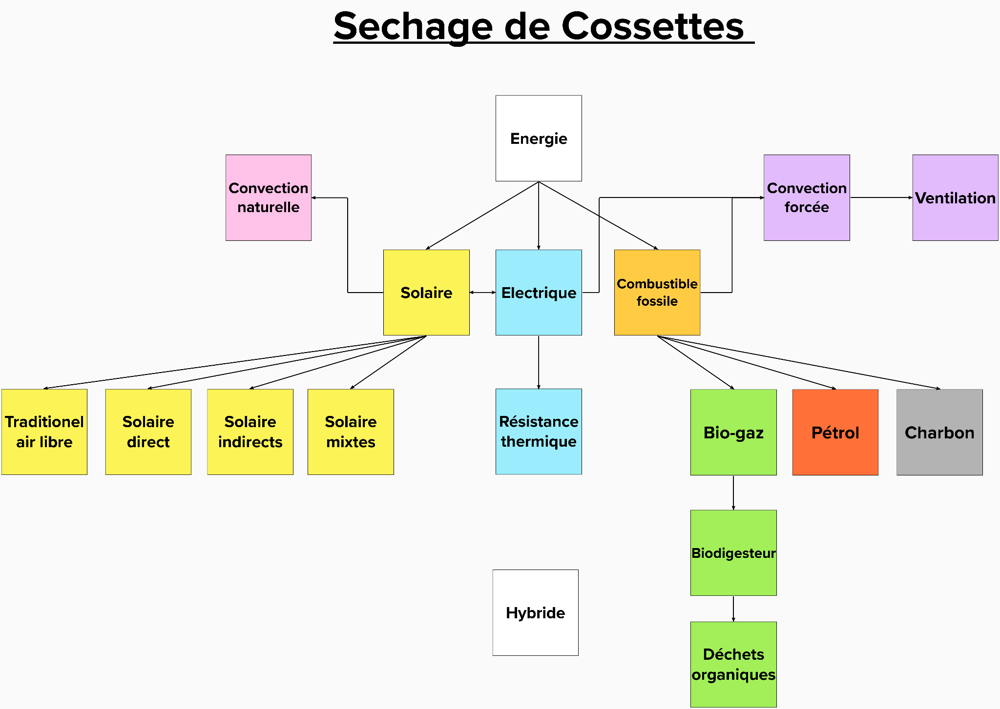
Le projet vise à déshydrater les cossettes de manioc en transformant l’eau liquide en vapeur. Le choix de l’énergie est donc central. Les techniques actuelles de séchage incluent le séchage à l’air libre, les séchoirs solaires directs (bacs exposés au soleil) et indirects (circulation d’air chaud sans exposition directe), ainsi que les systèmes à combustion (bois, charbon, gaz) ou électriques (résistances, photovoltaïques).
L’efficacité du séchage peut être améliorée par l’ajout de ventilation naturelle ou mécanique pour créer une convection forcée. Une solution prometteuse est le séchage hybride, qui combine l’énergie solaire avec une autre source d’énergie (comme le biogaz) pour permettre un séchage continu, de jour comme de nuit, et par mauvais temps. Notre groupe s’oriente actuellement vers cette solution hybride, imaginant un four utilisant l’énergie solaire naturelle et la combustion de biogaz.
Approche locale-globale
Le séchage des aliments est une problématique globale, présente dans le monde entier depuis l’aube de la civilisation. En Belgique, des entreprises comme Supersec commercialisent des produits secs (champignons, fruits, algues) obtenus par déshydratation, illustrant une approche locale de ce savoir-faire universel.
Sur le plan énergétique, la Belgique ne dispose pas d’un potentiel solaire exceptionnel, avec une irradiation horizontale de 1000 à 1100 kWh/m² par an, contre 1800 kWh/m² en Andalousie. Cependant, elle dispose d’une expertise en biométhanisation. L’Europe concentre la moitié de la production mondiale de biogaz, avec l’Allemagne en tête. La Belgique compte 16 unités de méthanisation par million d’habitants, produisant du gaz issu majoritairement de la production agricole. Un exemple notable est l’unité de Surice (Namur), qui produit 700 kWh/an de chaleur et électricité pour plusieurs ménages. Cette expertise européenne en biométhanisation pourrait être transférée et adaptée au contexte congolais.
Approche scientifique
Le projet repose sur le développement d’un système de séchage hybride pour les cossettes de manioc. Nos recherches ont montré que le séchage à l’air libre nécessite au moins 10 heures d’ensoleillement pour atteindre une teneur en eau de 10-11 %, condition sine qua non pour une conservation durable. En conditions idéales, cela prend 2 à 4 jours, mais les pluies en RDC rendent ce processus aléatoire et dangereux.
Nous avons étudié différentes techniques, notamment les fours à combustibles (en veillant à éviter le contact du manioc avec la fumée pour ne pas altérer le goût) et divers prototypes de séchoirs solaires. L’incertitude principale concernait la production locale de biogaz, dont nous n’avions pas encore suffisamment d’informations techniques.
Pour étayer notre démarche, nous nous sommes appuyés sur trois sources scientifiques majeures : 1. Une étude de 2003 par une chercheuse de l’Université de Bangui (RCA) sur l’amélioration des techniques de transformation du manioc en cossettes, comparant les taux de cyanure selon les méthodes. 2. Une étude expérimentale de 2009 par des chercheurs ivoiriens sur un grenier séchoir solaire à convection naturelle, appliquée au cacao et au manioc, utilisant des toitures en tôle d’aluminium. 3. Le livre de référence “Sécher des produits alimentaires. Techniques, procédés, équipements” (GRET, 1955), dirigé par Jean-François Rozis, qui fournit les bases théoriques pour la construction de séchoirs et l’analyse des procédés de déshydratation.
Ces documents nous ont permis de construire un état de l’art solide et de définir les paramètres techniques de notre solution hybride.
Bibliographie
- Chouicha, S., Boubekri, A., Bouguettaia, H., & Mennouche, D. (2015). Séchage et qualité des dattes Deglet-Nour réhumidifiées par utilisation d’un séchoir solaire hybride. Laboratoire de Développement des Énergies Nouvelles et Renouvelables dans les Zones Arides et sahariennes (L.E.N.R.E.Z.A.), Université UKMO Ouargla, Algérie.
- CADIM. Centre d’Appui au Développement Intégral Mbankana. Disponible sur : https://cadim-rdc.org/
- UNESCO. Library Catalog. Disponible sur : http://www.nzdl.org/cgi-bin/library?e=d-00000-00---off-0unesco--00-0----0-10-0---0---0direct-10---4-------0-1l--11-en-50---20-about---00-0-1-00-0--4----0-0-11-10-0utfZz-8-00&cl=CL2.4&d=HASH01f9bd2054c2aae11bff6149.7.3.1>=1
- Wikipedia. Congo belge. Disponible sur : https://fr.wikipedia.org/wiki/Congo_belge
- AfriqueScience. PDF sur le manioc. Disponible sur : http://www.afriquescience.net/PDF/15/2/8.pdf
- HAL. Étude expérimentale d’un grenier séchoir solaire. Disponible sur : https://hal.archives-ouvertes.fr/hal-00142572/document
- Solagro. Utilisation rationnelle séchage fourrages. Disponible sur : https://sda.revuesonline.com/gratuit/SDA20_4-5_413-432.pdf
- AJOL. Article sur la transformation du manioc. Disponible sur : https://www.ajol.info/index.php/jspi/article/view/67953
- Déshydrateur-Séchoir. Histoire de la déshydratation. Disponible sur : https://www.deshydrateur-sechoir.fr/un-peu-dhistoire/histoire-de-la-deshydratation/
- Wikipedia. Agriculture en République démocratique du Congo. Disponible sur : https://fr.wikipedia.org/wiki/Agriculture_en_r%C3%A9publique_d%C3%A9mocratique_du_Congo
- Supersec. À propos. Disponible sur : https://www.supersec.com/a-propos/
- Climats et Voyages. Climat en RDC. Disponible sur : https://www.climatsetvoyages.com/climat/republique-democratique-congo
- Wikipedia. Énergie solaire en Europe. Disponible sur : https://fr.wikipedia.org/wiki/%C3%89nergie_solaire_en_Europe#Production_d’%C3%A9lectricit%C3%A9
- InfoMetha. État des lieux de la méthanisation en Europe. Disponible sur : https://www.infometha.org/effets-socio-economiques/etat-des-lieux-de-la-methanisation-en-europe
- Wikipedia. Biogaz. Disponible sur : https://fr.wikipedia.org/wiki/Biogaz#Production
- Énergie Wallonie. Projet témoin biométhanisation Surice. Disponible sur : https://energie.wallonie.be/servlet/Repository/valbiom-projet-temoin-biomethanisation-surice.pdf?ID=42195&saveFile=true
Articles utilisés pour l’approche scientifique : * Étude de l’Université de Bangui (2003) sur les techniques de transformation. * Résumé du livre “Sécher des produits alimentaires. Techniques, procédés, équipements” (GRET, 1955), disponible sur : https://www.gret.org/publication/secher-des-produits-alimentaires/ * Étude ivoirienne (2009) sur le séchoir solaire à convection naturelle.
Analyse fréquentielle de la pluviométrie de la région Alaotra-Mangora (Madagascar) dans le but de proposer une actualisation du calendrier cultural du riz
2023
Auteurs: Jhodi Avizara
Résumé
Cette étude a pour objectif d’analyser la fréquence et l’intensité des précipitations de la région Alaotra-Mangoro de 1991 à 2023 à l’aide du Standardized Precipitation Index (SPI) afin de proposer un nouveau calendrier cultural du riz avec de nouvelles variétés. La région étudiée est l’un des principaux greniers à riz de Madagascar, avec une production de l’ordre de 300 000 T par an, mais elle est sujette aux effets du dérèglement climatique. Ces effets se caractérisent entre autres par une concentration des pluies sur une courte période et une interruption de ces dernières en pleine saison. On constate ainsi une variation notable de la pluviométrie depuis 1991 et les tendances montrent une baisse constante des précipitations sur l’ensemble de l’année à l’exception des mois de novembre, mars et avril. Traditionnellement, les agriculteurs commencent à planter le riz en décembre pour une durée d’environ 6 mois selon la variété, nous proposons alors de commencer la production en novembre et encourageons l’utilisation de variétés à cycle court comme SEBOTA et Mailaka afin que les stades critiques de l’initiation florale, la floraison et la maturation ne soient pas perturbés par le manque d’eau dans la période de novembre à mars.

Détails
Introduction
Le Centre FOFIFA
Le Centre FOFIFA, ou Centre National de Recherche Appliqué au Développement Rural, est la principale institution de recherche agricole à Madagascar. Créé en 1974 à la suite du départ des instituts français de recherche agricole, elle contribue à élaborer la politique nationale de recherche en matière de développement rural et d’en assurer la diffusion et la capitalisation et développe la recherche thématique de base pour générer des connaissances et techniques pour anticiper les enjeux à venir [1].
Thématique du stage
L’un des principaux enjeux actuels, au niveau national mais également au niveau global, concerne le dérèglement climatique, qui impacte directement les productions agricoles. A Madagascar, le secteur agricole compte pour 30% du PIB et emploie 80% des familles malgaches, selon les chiffres de l’International Fund for Agricultural Development [2]. Et l’une des régions les plus productives, faisant partie des principaux greniers à riz du pays, est la région Alaotra-Mangoro. Située dans la région Atsinanana dans la partie centre-est de l’île et s’étendant sur une superficie de 33 054 km², la production rizicole, selon de rapport du centre FOFIFA de Mars 2015, est de l’ordre de 300 000 T par an [3]. Force est donc de constater qu’une baisse de la productivité de cette région impacterait la sécurité alimentaire ainsi que l’économie de tout le pays. Traditionnellement, les agriculteurs commencent à planter du riz en décembre pour une durée de 4 à 6 mois en fonction des variétés, mais le bouleversement climatique perturbe ce calendrier. Ces effets se caractérisent entre autres par une concentration des pluies sur une courte période et une interruption de ces dernières en pleine saison. L’enjeux de cette étude est alors d’analyser les données pluviométriques de 1991 à 2023 afin de proposer un nouveau calendrier cultural du riz en cohérence avec le cycle végétatif des nouvelles variétés utilisées.
Méthodologie
Le jeu de données rassemble les données pluviométriques mensuelles de la région Alaotra-Mangoro de janvier 1991 à mai 2023, fournie par la station météo de Ambohitsilaozana. Pour évaluer le niveau de précipitation de la zone, nous nous basons sur le Standardized Precipitation Index (SPI), un indicateur statistique comparant le total des précipitations reçues d’une zone en particulier pendant une période de n mois avec la distribution des précipitations à long terme pendant la même période et au même endroit [4]. Les valeurs que renvoie le SPI donnent la sévérité des sécheresses (SPI < 0) et des précipitations (SPI > 0). L’ensemble de l’analyse et les différents graphiques ont été réalisés à l’aide du logiciel R et avec le package “precintcon” pour calculer les SPI, “ggplot2” et “plotly” pour les graphiques. Résultats et Discussions La région se caractérise par un climat tropical chaud et humide, elle comporte deux saisons bien marquées : une saison sèche avec quelques pluies, d’avril à septembre, et une saison pluvieuse, d’octobre à mars (Fig 1).

Traditionnellement, les agriculteurs commencent à cultiver le riz au début du plus fort de la saison humide, en décembre. Cependant les tendances montrent que les précipitations des mois de décembre à février diminuent (Fig 2). Et dans l’ensemble cette diminution est de l’ordre de 0.56 mm par an depuis 1991 à l’exception des mois de novembre, mars et avril, qui suivent une tendance croissante, respectivement de l’ordre de 1.94, 1.36 et 0.48 mm par an en moyenne.

On constate alors que le climat de la région Alaotra Mangoro est en constante évolution, comme le montre la variation du SPI depuis 1991 (Fig 3). Le climat passant progressivement de humide à sec mais tout en restant dans des valeurs de SPI moyen compris entre 0.99 et -0.99, c’est-à-dire, les zones de minimum humide et minimum sec (tab 1).
Cependant le climat semble être plus sec que humide avec un SPI inférieur à 0 comptant pour 51,29 % d’occurrence contre 48,71 % pour l’inverse (tab 1). Une différence notamment due aux minimums secs avec une occurrence de 41,69 %, suivi par les minimums humides avec 34,19 %. Les événements humides modérés et sévères ( SPI entre 1 et 1,99) ont 12,41 % d’occurrence totale et 8,2 % pour les événements secs (SPI entre -1 et -1,99). Quant aux événements extrêmes (SPI ≥ 2 ou SPI ≤ −2), 1,41 % d’occurrence pour les sécheresse et l’inverse est à 2,11 %.
| SPI | Interprétation | Effectif (Janv. 1991 - Mai 2023) | Occurrence (%) |
|---|---|---|---|
| ≥ 2.0 | Extrêmement humide | 9 | 2.11 % |
| 1.5 à 1.99 | Sévèrement humide | 22 | 5.15 % |
| 1.0 à 1.49 | Modérément humide | 31 | 7.26 % |
| 0 à 0.99 | Minimum humide | 146 | 34.19 % |
| 0 à -0.99 | Minimum sec | 178 | 41.69 % |
| -1.0 à -1.49 | Modérément sec | 28 | 6.56 % |
| -1.5 à -1.99 | Sévèrement sec | 7 | 1.64 % |
| ≤ -2.0 | Extrêmement sec | 6 | 1.41 % |
Tableau 1 : Niveau d’humidité et de sècheresse, leur effectif et leur occurrence de janvier 1991 à mai 2023, basés sur le Standardized Precipitation Index (SPI)
Il est à noter que les besoins réels en eau d’une rizière dépendent à la fois de la variété de riz cultivée et de la nature du sol [5]. Sur un sol argileux, la variété la plus utilisée, Makalioka 34 (MK 34), demande en moyenne 130 et 160 mm d’eau par mois pour un cycle végétatif de 6 mois environ. Mais les besoins varient en fonction du stade phénologique de la plante. Elle est particulièrement sensible à la sécheresse au stage de l’initiation florale, et durant la montaison, la floraison et jusqu’au début de la maturation (fig 4 et ref 6). La période la plus critique pour le riz a alors lieu pendant le deuxième mois après la plantation et dure deux mois suivant les variétés. Durant ces périodes les besoins en eau d’une rizière peuvent aller de 4 à 6 mm par jour. Dans un contexte où la saison humide tend à se raccourcir, une variété à cycle long comme la MK 34 n’est plus favorable, d’autres variétés comme SEBOTA et Mailaka le sont car plus résilientes et ont un cycle plus court. Mais en contrepartie, le riz est de moins bonne qualité, limitant son utilisation par les agriculteurs [3 et 7].

Conclusion
Le climat de la région Alaotra-Mangoro se modifie indéniablement, une
baisse notable des précipitations est observée en pleine saison
culturale bien que, dans l’ensemble, la région semble toujours favorable
à la culture du riz. La majorité des mois de l’année sont de moins en
moins humides, à l’exception des mois de novembre, mars et avril. Nous
permettant ainsi de proposer d’avancer le calendrier cultural d’un mois,
en novembre, pour éviter que le riz souffre de la sécheresse durant ses
premiers stades végétatifs.
Une solution simple et facile à mettre en œuvre, et garantit de
meilleurs résultats avec l’utilisation de variétés à cycle court ou
moyen. Car l’initiation florale et la floraison, ayant lieu plus tard au
cours de la croissance du riz, sont aussi particulièrement sensibles à
la sécheresse. Et la période favorable à sa culture est comprise entre
novembre et mars, soit 5 mois. En somme, pour adapter la région
Alaotra-Mangoro aux changements du climat, nous préconisons de commencer
la plantation du riz en novembre et d’utiliser des variétés à cycle
court.
Bilan personnel
Ce stage m’a permis de découvrir le monde de la recherche et plus particulièrement la recherche dans une approche globale. C’est-à-dire, prendre en compte des besoins de toutes les parties prenantes d’un projet, en particulier des bénéficiaires, dans le contexte qui leur est propre. J’ai pu alors entrer en contact et faire le lien entre ces parties, j’ai ainsi à mon échelle participé un projet commun. Ce stage m’a aussi permis de développer des compétences en analyse et modélisation de données avec le logiciel R.
Références
- Site officiel du centre FOFIFA ; https://www.fofifa.mg/?page_id=2 ; consulté le 05/06/2023.
- International Fund for Agricultural Development ; Madagascar ; https://www.ifad.org/fr/web/operations/w/pays/madagascar ; consulté le 05/06/2023.
- Dr RAKOTOARISOA Jacqueline et RABESON Raymond ; “Analyse comparative et participative des techniques et technologies de productions rizicoles de la région d’Alaotra Mangoro et dans les autres greniers de Madagascar” ; Centre FOFIFA ; mars 2015.
- Product fact sheet : SPI – Africa ; European Commission ; mai 2013 https://edo.jrc.ec.europa.eu/documents/factsheets/factsheet_spi_ado.pdf ; consulté le 07/06/2023.
- Pr RAZAFINJARA Aimé Lala ; “Système de Riziculture Intensive (SRI)” ; rapport du centre FOFIFA ; 2012.
- Radios Rurales Internationales ; Fiche documentaire : Production et activités post-récolte du riz au Ghana ; James Karuga ; 5 octobre 2021 ; https://scripts.farmradio.fm/fr/radio-resource-packs/ensemble-des-ressources-pour-la-radio-agricole-119/fiche-documentaire-production-et-activites-post-recolte-du-riz-au-ghana/ ; consulté le 10/06/2023.
- RANAIVOSON Andry ; “Contribution à la lutte agroécologique contre les lepidoptères, foureur de tige de riz cultivé en bas fond et sur bruli dans la région d’Ankepaka Manankara” ; mémoir pour l’obtention du diplome d’étude approfondie en sciences biologiques appliquées, soutenu le 24 Juillet 2009 ; Université d’Antananarivo ; http://biblio.univ-antananarivo.mg/pdfs/ranaivosonAndry_SN_M2_09.pdf
Mots clefs
Précipitations _ Agriculture _ Analyse Fréquentielle
Multy layer perceptron (MLP) to predict secondary structure of protein from amino acide sequences.
2024 Auteurs: Jhodi Avizara, Yann Gouzy
Résumé
Ce projet vise à prédire la structure secondaire des protéines (hélices, feuillets, coils) en comparant deux méthodes d’encodage de séquences — l’One-Hot Encoding et l’Encoding par Fréquence — au sein d’un modèle de Perceptron Multicouche (MLP) développé avec Keras. Bien que l’One-Hot Encoding permette un apprentissage très rapide, il n’a atteint qu’une précision de 65,68 %, tandis que l’Encoding par Fréquence, malgré un temps d’entraînement plus long, a démontré une supériorité nette avec une précision de 80,31 %, alors que la combinaison des deux approches a conduit à un surapprentissage sévère réduisant les performances à 64,10 %. En conclusion, l’encodage par fréquence s’avère être la stratégie la plus efficace pour ce jeu de données, offrant le meilleur compromis entre complexité et précision, bien que tous les modèles montrent une sensibilité accrue face aux données déséquilibrées, suggérant que l’exploration de modèles plus avancés comme les Transformers (ex: ProtBERT) constituerait une piste d’amélioration pertinente.

Détails
Introduction
This project aims to predict protein structures using DSSP encoding and Multi-Layer Perceptron (MLP) models. Our work builds upon the seminal article by Burkhard Rost and Chris Sander (Prediction of Protein Secondary Structure at Better than 70% Accuracy, Journal of Molecular Biology, 1993), in which the authors described their implementation of a two-layered feed-forward neural network with a single hidden layer, trained on a database of 130 water-soluble protein chains to achieve over 70% accuracy. Our project differs by utilizing modern deep learning architectures, specifically Keras, and a more comprehensive DSSP database. Moreover, we leverage an NVIDIA GTX 1650 GPU for calculations.
- Keras: Keras is a high-level software library providing a Python interface for artificial neural networks. It acts as an abstraction layer for building and training deep learning models, making it easier for developers and researchers to implement complex architectures without delving into underlying mathematical details. Designed to be user-friendly, modular, and extensible, Keras allows for rapid experimentation and prototyping (Jaya Gupta et al., 2022).
- DSSP: DSSP (Define Secondary Structure of Proteins) is a widely used algorithm and software tool for assigning secondary structure to protein structures based on their three-dimensional coordinates. Developed by Wolfgang Kabsch and Chris Sander in the 1980s, it has become a standard method in structural biology (Shaowen Yao et al., 2017).
Finally, the key steps include:
- Feature extraction from protein sequence files.
- Preprocessing using one-hot encoding and frequency encoding.
- Resampling using SMOTE for class balancing.
- Implementation of the MLP for prediction.
Data Preprocessing and Feature Extraction
The original data file contained protein residue sequences (RES) along with DSSP, DSSPACC (an extension incorporating accessibility information), STRIDE (Structural Identification), and alignment data.
RES:M,F,K,V,Y,G,Y,D,S,N,I,H,K,C,V
DSSP:_,E,E,E,E,E,_,_,T,T,T,S,_,_
DSSPACC:e,b,e,b,b,b,b,e,b,e,b,e,e
STRIDE:C,E,E,E,E,E,C,T,T,T,T,T,T
RsNo:1,2,3,4,5,6,7,8,9,10,11,12,13,14
DEFINE:E,E,E,E,E,E,_,_,_,_,_,_,_
align1:M,F,K,V,Y,G,Y,D,S,N,I,H,K
align2:K,I,E,V,Y,G,I,P,D,E,V,G,R
*Example of aazb-1 protein used in the dataset*Since Keras only processes numerical values, we needed to encode our sequences using one-hot encoding and frequency encoding.
One-Hot encoding : One-hot encoding is a method of converting categorical variables into a binary matrix representation. Since our protein sequences contain 20 residues, each amino acid will be encoded using 20 digits. Gaps and unrecognized amino acids will be encoded with a repetition of 20 zeros. Consequently, a DataFrame that we will use will have a significant size; for a peptide of 13 amino acids, we will have 260 columns.
Frequency encoding : In frequency encoding, we use the proportion of each amino acid to encode the entire protein. The final dataset will be much smaller in size compared to one-hot encoding, with only 20 columns instead of 260.
Furthermore, the corresponding secondary structure will be encoded as follows: {‘H’: 0, ‘E’: 1, ‘C’: 2}. Note that every other character different from H and E will be coded as 2.
The first step is to parse the files to retrieve the needed information and encode the sequences. We created the script Extract_features.py to handle all of the preprocessing. Additionally, if required, this script can perform further sampling via the SMOTE() function from the imbalanced-learn package to balance class proportions.
# Feature extraction example
from Exctract_features import create_dataset
pwd = "./513_distribute"
df1 = create_dataset(pwd, method='ohe', rsp=True) # One-hot encoding with resampling
df2 = create_dataset(pwd, method='freq', rsp=True) # Frequency encoding with resamplingDSSP 0 1 2 3 4 5 6 7 8 9 10 11 12 13 14 15 16 17 18 19 RES
CDAFVGTWKLVSS 2 0.076923 0.0 0.000000 0.076923 0.076923 0.0 0.000000
0.076923 0.0 0.0 0.076923 0.076923 0.0 0.076923 0.0 0.153846 0.076923
0.076923 0.0 0.153846 DAFVGTWKLVSSE 2 0.076923 0.0 0.000000 0.076923
0.000000 0.0 0.076923 0.076923 0.0 0.0 0.076923 0.076923 0.0 0.076923
0.0 0.153846 0.076923 0.076923 0.0 0.153846 AFVGTWKLVSSEN 2 0.076923 0.0
0.076923 0.000000 0.000000 0.0 0.076923 0.076923 0.0 0.0 0.076923
0.076923 0.0 0.076923 0.0 0.153846 0.076923 0.076923 0.0 0.153846
FVGTWKLVSSENF 2 0.000000 0.0 0.076923 0.000000 0.000000 0.0 0.076923
0.076923 0.0 0.0 0.076923 0.076923 0.0 0.153846 0.0 0.153846 0.076923
0.076923 0.0 0.153846 VGTWKLVSSENFD 2 0.000000 0.0 0.076923 0.076923
0.000000 0.0 0.076923 0.076923 0.0 0.0 0.076923 0.076923 0.0 0.076923
0.0 0.153846 0.076923 0.076923 0.0 0.153846
Multi-Layer Perceptron (MLP) Implementation
To implement our model using Keras (in keras_MLP.ipynb), we start by splitting the dataset into training and testing sets using train_test_split(), reserving 20% of the data for testing while ensuring reproducibility with a fixed random state. Next, we convert the target labels into a one-hot encoded format using to_categorical(), which is suitable for classification (the resulting format is 1.,0.,0. for H, 0.,1.,0. for E, and 0.,0.,1. for C).
Our model architecture consists of four dense layers, with the first three employing ReLU activation functions and the final layer using softmax to output class probabilities. We compile the model with the Adam optimizer and categorical crossentropy loss, enabling it to effectively learn and classify inputs based on the provided features. Finally, we added an early stopping mechanism to prevent the model from overfitting.
We tested two architectures: the first one for one-hot encoding and the second for frequency encoding. We maintained the same architecture as the one used for one-hot encoding for the combined DataFrame (one-hot + frequency). The first architecture is simpler compared to the second one and is designed to learn quickly to achieve higher accuracy. Furthermore, we tested various layer densities and learning rates to achieve the results that we will discuss.
early_stopping = EarlyStopping(monitor='val_loss', min_delta=0, patience=15, verbose=1, mode='min')
model = keras.Sequential([
keras.layers.Dense(500, activation='relu'),
keras.layers.Dense(256, activation='relu'),
keras.layers.Dense(128, activation='relu'),
keras.layers.Dense(3, activation='softmax')
])
# For the second and third model we use 5 hiden layers (1000, 500, 500, 256, 128), Relu as activation
opt = keras.optimizers.Adam(learning_rate=0.008) # for frequency encoding we use learning_rate=0.001, the same for the last case
model.compile(optimizer=opt,
loss='categorical_crossentropy',
metrics=['accuracy'])
history = model.fit(X_train, y_train,
epochs=3, batch_size=32,
validation_data=(X_test, y_test),
callbacks=early_stopping)Results and Analysis
We implemented our model in three different ways: with one-hot encoding, frequency encoding, and a combination of both. We evaluated our model to identify which approach performed the best.
One-hot encoding
As mentioned, one-hot encoding generates the largest amount of data for analysis, and our results showed an accuracy of 65.68%. As excpeted, our model learned very quickly; we achieved 60.18% accuracy after the first epoch and stopped after 3 epochs.


Frequency endocing
Even though the DataFrame is smaller, the learning time increases, resulting in a better accuracy of 80.31% after 30 epochs.


Combine
Combining the two datasets for training resulted in a larger DataFrame but a significant drop in accuracy compared to the previous methods. The model performed similarly to the one using one-hot encoding in the sense that it started at around 60% accuracy, but its learning curve varied dramatically throughout the training process. Ultimately, the model clearly overfitted, achieving an accuracy of only 64.10%.

Discusssion and Conclusions
Our three models did not perform the same. One-hot encoding allowed the model to learn very quickly but resulted in low accuracy as a drawback. Frequency encoding yielded the best results, albeit with a relatively long learning time. Finally, combining the two methods led to overfitting in the model. We also observed that precision and recall for each class were quite balanced across all models.
We tested our models using balanced data, but when faced with imbalanced data, accuracy dropped significantly in all cases, with respective accuracies of 60.44%, 60.64%, and 60.49% (with overfitting) for one-hot encoding, frequency encoding, and the combined approach. Ultimately, when unbalanced, the model tended to become overly specific to the majority class.
Suggestions for Further Improvement:
We could have tested an autoencoding model using ProtBERT and the raw amino acid sequences, but we did not do so due to time constraints.
Biologie et Biotechnologies des Plantes : Transformation stable et transitoire de Nicotiana benthamiana et Solanum lycopersicum par Agrobacterium tumefaciens
2024
Auteurs : Anaelle
Rambaud, Jhodi Avizara
Résumé
Ce projet a consisté à comparer deux stratégies de transformation génétique du tabac (Nicotiana benthamiana) et de la tomate (Solanum lycopersicum) via Agrobacterium tumefaciens : la transformation stable par agro-infiltration et la transformation transitoire par agro-injection. La première partie a visé l’insertion permanente de gènes rapporteurs (GFP et RUBY) pour observer la régénération de plantes en culture in vitro, révélant une expression fonctionnelle de la GFP dans les trichomes et les racines du tabac, tandis que la construction RUBY a échoué, probablement en raison de contraintes techniques liées à la culture ou à l’expression du gène. La seconde partie a exploité la transformation transitoire pour réintroduire une voie de biosynthèse d’acides gras polyinsaturés (PUFAs) dans les feuilles de tabac, une approche validée par chromatographie en phase gazeuse qui a confirmé l’activité des enzymes introduites (désaturases et élongase) par l’apparition de lipides spécifiques, démontrant ainsi l’efficacité de cette méthode pour l’ingénierie métabolique rapide sans nécessiter de régénération végétale complète.
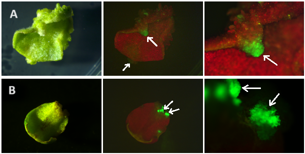
Détails
Introduction
L’objectif de ces quatre séances de travaux pratiques était double : 1. Comparer les résultats de transformations stables réalisées à l’aide de gènes rapporteurs (GFP et construction RUBY) sur des plants de tabac (Nicotiana benthamiana) et de tomate (Solanum lycopersicum). 2. Réaliser une transformation transitoire sur du tabac afin de modifier le contenu lipidique de ses feuilles en recréant la voie de biosynthèse des acides gras polyinsaturés (PUFAs).
Dans les deux cas, les transformations ont été effectuées via Agrobacterium tumefaciens. La méthode d’agro-infiltration a été utilisée pour la transformation stable, tandis que la méthode d’agro-injection a été employée pour la transformation transitoire.
Concepts théoriques
Transformation stable et culture in vitro Une transformation stable consiste à incorporer de façon permanente un ou plusieurs gènes dans le génome d’une cellule hôte. Dans notre expérience, la transformation a été réalisée sur des explants de tabac et de tomate. Pour observer le phénotype, la régénération des plantes en culture in vitro est nécessaire. La culture in vitro est une technique permettant de régénérer une plante entière à partir de simples cellules ou de tissus végétaux dans un milieu nutritif enrichi en hormones, en présence d’un facteur de sélection (un antibiotique) et dans des conditions axéniques. La présence d’un antibiotique dans le milieu de culture, couplée à un gène de résistance dans le vecteur de transformation, permet de sélectionner et de maintenir en culture uniquement les cellules qui ont été transformées.
Transformation transitoire et chromatographie en phase gazeuse Une transformation transitoire consiste à incorporer un transgène qui ne sera exprimé que pendant quelques jours. Le but de l’expérience était de recréer dans les feuilles la voie de biosynthèse des PUFAs [3]. L’analyse des résultats se fait par chromatographie en phase gazeuse (CPG). Les lipides étudiés se distinguent par leurs propriétés physico-chimiques, notamment leur affinité pour la phase stationnaire lors de la chromatographie, ce qui permet de les séparer en fonction de leur temps de rétention.
Matériel et Méthodes
Transformation Stable
Préparation des explants de tomate (Solanum lycopersicum) sur milieu KCMS
Pour réaliser la transformation stable, nous avons prélevé les cotylédons de tomates cultivées in vitro. Les extrémités des cotylédons ont été retirées, puis ceux-ci ont été coupés en trois fragments d’environ 5 mm². Ces explants ont été mis en culture sur boîte de Pétri sur du milieu KCMS supplémenté avec : * 0,2 mM d’acétophénone * 0,9 mg/L de thiamine * 0,1 mg/L de kinétine * 0,2 mg/L de 2,4D
Cette préparation a duré deux jours en lumière indirecte dans une chambre de culture à 25°C. Les explants ont été positionnés avec leur épiderme supérieur en contact avec la gélose pour permettre une diffusion plus lente des hormones dans les tissus.
| Composant | Concentration initiale | Volume final |
|---|---|---|
| Milieu KCMS | - | 50 mL |
| Acétophénone | 20 mM | 500 µL |
| Thiamine | 10 mg/mL | 4.5 µL |
| Kinétine | 1 mg/mL | 5 µL |
| 2,4D | 1 mg/mL | 10 µL |
Tableau 1 : Composition du milieu de culture in vitro des tomates
Préparation des explants de tabac (Nicotiana benthamiana) sur milieu MS
Pour le tabac, nous avons prélevé des feuilles cultivées in vitro. La nervure centrale a été éliminée, puis les feuilles ont été découpées en carrés d’environ 5 mm². Ces explants ont été mis en culture sur milieu MS supplémenté avec : * 0,2 mM d’acétophénone * 1 mg/L de BAP * 0,1 mg/L d’ANA
Comme pour la tomate, la préparation a duré deux jours en lumière indirecte à 25°C, avec les explants positionnés épiderme supérieur vers la gélose.
| Composant | Concentration initiale | Volume final |
|---|---|---|
| Milieu ½ MS | - | 50 mL |
| Acétophénone | 20 mM | 500 µL |
| BAP | 10 mg/L | 5 µL |
| ANA | 1 mg/L | 5 µL |
Tableau 2 : Composition du milieu de culture in vitro de tabac
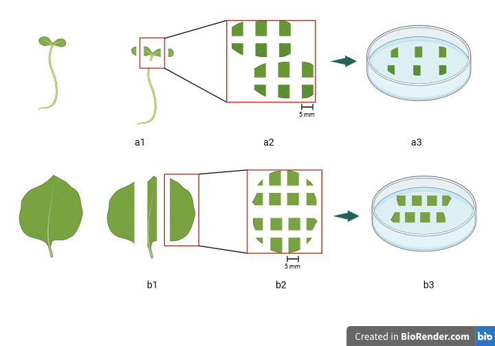
Figure 2 : Préparation des explants de tomates et de tabac en vue de la transformation [1]Transformation des explants
Une solution d’Agrobacterium tumefaciens (souche C58C1), préalablement transformée avec un plasmide Ti désarmé contenant les constructions à tester (35S:GFP et RUBY) et un gène de résistance à la kanamycine, a été utilisée. La turbidité des solutions a été ajustée par mesure d’absorbance à 600 nm (DO entre 0,4 et 0,6).
Pour la construction RUBY, la transformation bactérienne semblant inefficace, nous avons concentré les bactéries par centrifugation (4000G, 10 min, 25°C) pour reprendre dans un volume inférieur (10 mL de milieu Luria Broth), afin d’optimiser la transformation des explants. Les bactéries diluées ont ensuite été centrifugées et reprises dans 10 mL de milieu de coculture (KCMS pour la tomate, MS pour le tabac).
Les explants ont été immergés 30 minutes dans la solution d’infiltration, essorés pour éliminer l’excès de bactéries, puis repiqués sur de nouvelles boîtes (épiderme supérieur au contact de la gélose). Ils ont été laissés en culture pendant deux jours en lumière indirecte.
Régénération des plants transformés
Après la coculture, les explants ont subi quatre lavages successifs (5 min puis 3 x 3 min) dans un mélange eau + Tween pour éliminer les Agrobacterium de surface et éviter la nécrose due à leur reprise de croissance. Ils ont ensuite été mis en culture sur un milieu de régénération contenant de la kanamycine (100 µg/mL) et du Timentin (250 µg/mL).
| Milieu | Kanamycine | Timentin | Suppléments |
|---|---|---|---|
| KCMS (Tomate) | 100 µg/mL | 250 µg/mL | 0,9 µg/mL Thiamine |
| MS (Tabac) | 100 µg/mL | 250 µg/mL | 4 µL ANA + 4 µL BAP |
Tableau 3 : Composition des milieux de culture de tomate (KCMS) et de tabac (MS) modifiés pour la régénération
Contrôles et Repiquage Bien que le groupe n’ait pas réalisé de contrôles internes (vecteur vide, régénération non transformée, sélection antibiotique stricte) pour maximiser le nombre d’explants transformés, les résultats des groupes ayant réalisé ces contrôles ont été utilisés pour l’analyse. Après une semaine, les explants ont été transférés sur du milieu frais (MS ou KCMS) avec 150 mg/L de Timentin et de kanamycine. D’autres repiquages ont été effectués hebdomadairement jusqu’à l’apparition de tiges feuillées.
Vingt jours après le premier transfert, des cals se sont formés et des tiges feuillées ont régénéré. Nous avons sélectionné une plantule vigoureuse, exempte de vitrification (phénotype gorgé d’eau, feuilles transparentes), car ces plantes ne peuvent pas former de racines. La tige a été détachée du cal et plantée dans un milieu sans hormones pour réactiver la différenciation des racines via la production d’auxine par le méristème apical caulinaire (SAM).
Observation des explants
Certains explants ont été visualisés 12 jours après transformation à la loupe binoculaire et au stéréo-microscope. La GFP est excitée par des longueurs d’onde entre 460 et 488 nm (UV), permettant de visualiser sa fluorescence, bien que cela révèle aussi l’auto-fluorescence de la chlorophylle. Des plantes régénérées ont été observées après 17 jours de régénération racinaire.
Transformation Transitoire
Construction des plasmides
Les plasmides utilisés contenaient respectivement : * pBIN61 : P19 (un suppresseur viral) * pK7WG2D : Δ6-Desaturase * pKB7WG2D : Élongase 1 * pH7WG2D : Δ5-Desaturase
.png) Figure 3 : Schéma du
plasmide pK7WG2D [3]
Figure 3 : Schéma du
plasmide pK7WG2D [3]
Les échantillons ont été transformés avec les combinaisons suivantes : * 3001 : P19 * 3101 : P19 + Δ6 + Élongase * 3201 : P19 + Δ6 * 3301 : P19 + Δ6 + Élongase + Δ5
Agro-Injection
La méthode utilisée est l’agro-injection sur des plants de tabac de 5 semaines (Figure 4). 1. Mise en suspension des bactéries à une DO définie. 2. Injection de la solution dans la face inférieure des feuilles 3 et 4 à l’aide d’une seringue. 3. Après 48h, découpe de 2 disques de feuilles transformés (pointe de 1000 µL). 4. Incubation des disques dans une solution d’acide sulfurique pour solubiliser les lipides, suivie d’une centrifugation. 5. Récupération de la phase organique pour analyse en Chromatographie en Phase Gazeuse (CPG).
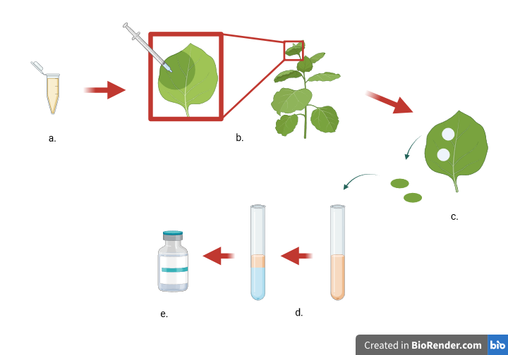
Figure 4 : Agro-Injection des Agrobacterium et préparation des échantillons pour analyse en CPG [1]Résultats
Transformation Stable
Observations macroscopiques et microscopiques Après une semaine de culture in vitro, les explants ont développé des cals. * GFP : Une fluorescence verte a été observée à certains endroits, notamment dans les trichomes. * RUBY : La transformation n’a pas réussi. Aucune coloration rouge notable n’a été observée ; seuls des signes de nécrose ou d’accumulation d’anthocyanes liés au stress ont été notés.
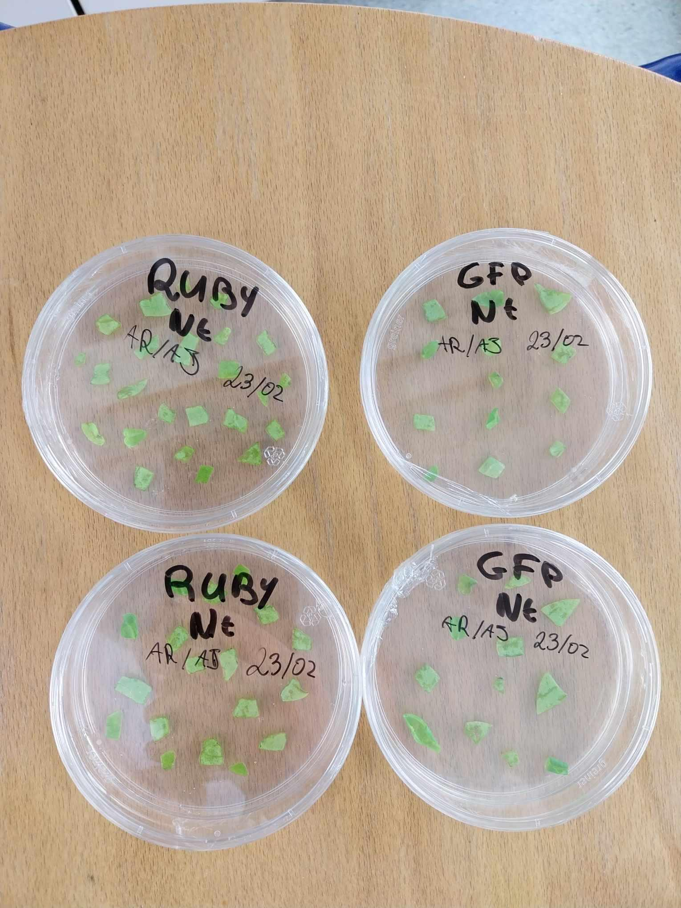
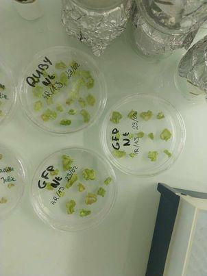
Figure 5 : Boîtes de pétrie de culture in vitro d’explants de tabac transformé avec la construction RUBY (en haut) et 35S:GFP (en bas)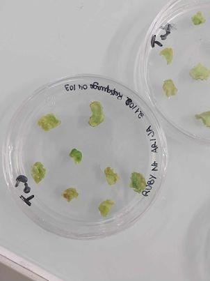
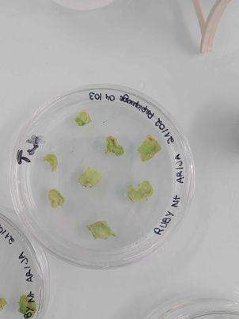
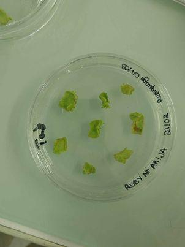
Figure 6 : Boîtes de pétrie de culture in vitro d’explants de tabac transformé avec la construction RUBY (après repiquage)De nombreux échantillons ont été perdus à cause de contaminations fongiques, de vitrification ou de reprise des colonies d’Agrobacterium. Cependant, sur les échantillons restants, la fluorescence verte de la GFP a été clairement visible, indiquant une transformation fonctionnelle pour cette construction. Sous lumière UV, l’auto-fluorescence de la chlorophylle apparaît en rouge, ce qui peut masquer la GFP, mais celle-ci reste distincte dans les racines et les trichomes.
Figure 7 : Cals de tabac transformés à la GFP. A= Tabac, B= Tomate. Photos prises à la lumière visible (à gauche) et la lumière UV (au milieu et à droite)
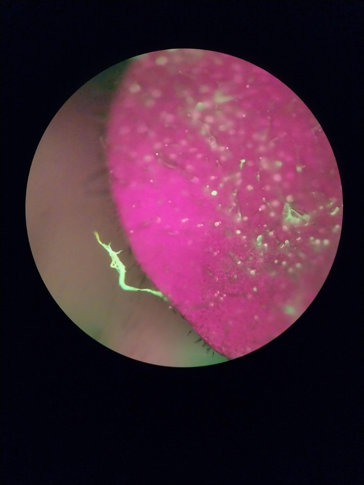
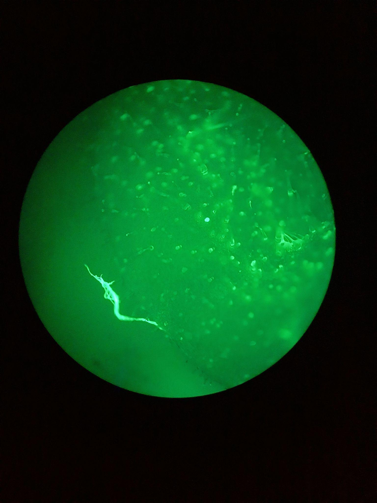
Figure 8 : Photographies en microscopie à fluorescence de tabacs transformés à la GFP après repiquage. A gauche sans filtre (auto-fluorescence chlorophylle rouge + GFP verte), à droite en UV (GFP seule)Transformation Transitoire
L’analyse par chromatographie en phase gazeuse (CPG) a permis d’identifier les lipides produits selon les combinaisons de plasmides.
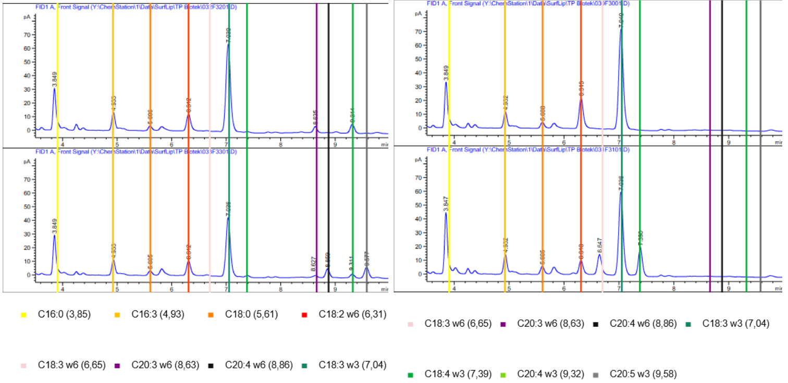
Figure 9 : Résultats de la chromatographie en phase gazeuse. Les temps de rétention du standard externe sont marqués par des traits colorés.- Comparaison 3001 vs 3101 : La quantité de C18:2w6 diminue pour laisser apparaître des C18:3w6 et C18:4w3. Cela correspond à l’action de la Δ6-Desaturase.
- Comparaison 3001 vs 3201 : L’échantillon 3201 possède moins de C18:2w6 et présente des C20:3w6 et C20:4w3 en faible quantité. Cela correspond aux effets cumulés de la Δ6-Désaturase et de l’Élongase.
- Échantillon 3301 : Il possède moins de C18:2w6 et nettement moins de C18:3w3. Il contient les produits finaux de la voie des PUFAs : C20:3w6, C20:4w3, C20:4w6 et C20:5w3, bien qu’en très faible quantité. On observe ainsi l’action combinée de la Δ6-Désaturase, de l’Élongase et de la Δ5-Désaturase.
Conclusion
La transformation stable par Agrobacterium tumefaciens a permis d’observer des phénotypes associés à la construction 35S:GFP, confirmant l’efficacité de cette méthode pour l’expression de gènes rapporteurs chez Nicotiana benthamiana et Solanum lycopersicum. En revanche, la construction RUBY n’a pas abouti à une coloration phénotypique observable, se limitant à des signes de stress. Le taux de réussite avant l’étape de repiquage était de 24 sur un total de 32 boîtes de Pétri. Les échecs sont principalement attribués à des contaminations fongiques, à la vitrification des explants ou à la reprise des colonies d’Agrobacterium. Globalement, les transformations sur tabac ont montré de meilleurs résultats que sur tomate.
Concernant la transformation transitoire, la présence de lipides associés à la voie des PUFAs a bien été détectée dans les feuilles (notamment C20:4w6 et C20:5w3), bien que les signaux soient faibles. La réduction de la quantité de certains lipides précurseurs (C18:2w6, C18:3w3) est cohérente avec l’activité des enzymes introduites (Δ6-Désaturase, Élongase, Δ5-Désaturase), prouvant la reconstitution partielle de la voie de biosynthèse.
Références
- Figures 1, 2 et 4 : Réalisées sur le site BioRender.
- Lacroix, B., Assoumou, Y., & Sangwan, R. S. (2003). Efficient in vitro direct shoot organogenesis and regeneration of fertile plants from embryo explants of Bambara groundnut (Vigna subterranea L. Verdc.). Plant Cell Rep, 21, 1153–1158.
- Ruiz-Lopez, N., Haslam, R. P., Napier, J. A., & Sayanova, O. (2014). Successful high-level accumulation of fish oil omega-3 long-chain polyunsaturated fatty acids in a transgenic oilseed crop. The Plant Journal, 77, 198–208.
Predicting Canopy Height Maps from UAV-Imagery
2024 Auteurs : Jón Róason (University of Groningen), Thije Robbe (University of Groningen), Jhodi Avizara (University of Bordeaux), Florian Franz (University of Göttingen)
Résumé
Ce projet vise à prédire des cartes de hauteur de canopée forestière à partir d’images RGB à très haute résolution capturées par drones (UAV), en utilisant une approche d’apprentissage profond basée sur l’architecture U-Net, afin d’éviter la dépendance coûteuse aux données LiDAR. L’étude, menée dans la Forêt-Noire en Allemagne, a entraîné et évalué plusieurs variantes de modèles (différences de profondeur de réseau, taille d’entrée et planning de taux d’apprentissage) sur un jeu de données limité de 45 orthomosaïques, en utilisant l’erreur quadratique moyenne (MSE) comme fonction de perte. Les résultats montrent que le modèle U-Net v3 atteint la meilleure performance avec une erreur de test de 0,0065, produisant des cartes de hauteur détaillées qui capturent les structures fines des arbres. Cependant, l’analyse des prédictions révèle un biais potentiel où le modèle associe la hauteur à la luminosité des cimes plutôt qu’à une géométrie réelle, une limitation probablement exacerbée par la petite taille de l’échantillon et le risque de surapprentissage. Malgré ces réserves et l’impossibilité de valider la précision absolue sans données de référence plus fines, l’approche démontre son potentiel pour générer des cartes de structure forestière à haute résolution localement, offrant une alternative accessible aux recherches écologiques et sylvicoles n’utilisant que des données spectrales.

Détails
Introduction
Forest ecosystems are facing major challenges. Processes in the context of global change such as population growth, land use change and climate change are visible, for example, in a loss of forest cover, particularly in tropical rainforests (Hansen et al., 2013), and in forest damage (Schuldt et al., 2020). The availability of spatially precise and up-to-date data is therefore becoming increasingly important in order to monitor such changes and also to support forest management (Goodbody et al., 2019). In this regard, technological progress has significantly increased the importance of remote sensing technologies in the forest sector and is now a worldwide used tool (Fassnacht et al., 2023). Traditionally, aerial photos from aircraft have been the main tool used in forestry (Hildebrandt, 2010). Satellites are another major platform, covering larger areas (Jensen, 2014). In recent years, unmanned aerial vehicles (UAV, also called drones) have also gained interest in the forest community, as they can be used relatively flexibly and enable high-resolution spatial data (Guimarães et al., 2020; Tang and Shao, 2015). All of these remote sensing platforms can be equipped with different types of sensors. For example, multispectral cameras can be used to measure different wavelengths and generate true color images (red-green-blue (RGB)) (Jensen, 2014). In addition to cameras, Light Detection and Ranging (LiDAR) sensors are primarily used for forest related analysis (Ko and Remmel, 2017). This technology enables the generation of three-dimensional (3D) point clouds which can be further used to derive so-called digital height models as raster files (Wehr and Lohr, 1999). A distinction is made between three types: digital surface models (DSM), digital terrain models (DTM), and canopy height models (CHM). DSMs represent the elevation of an area’s uppermost surface, encompassing all objects present, whereas DTMs depict the bare ground surface, devoid of any objects. By subtracting DTM from DSM, a CHM can be obtained, sometimes also referred to as normalized DSM (nDSM) (Ko and Remmel, 2017). Figure 1 shows the three different height models in simplified form for a forest area. CHMs are particularly valuable in forestry, as they can be used to derive forest related parameters such as tree heights or basal area (Beland et al., 2019). Both, images and LiDAR-derived products, are increasingly being analyzed automatically due to advancing technology. In particular, deep learning (DL) methods are becoming more valuable, progressively outperforming traditional machine learning techniques (Kattenborn et al., 2021). Their ability to process complex and large datasets allows them to identify patterns and provide insights more effectively, marking a significant advancement in the field of automated analysis in remote sensing (Ma et al., 2019). Applications for forestry purposes include for example tree species classifications (Egli and Höpke, 2020) or tree crown segmentations (Freudenberg et al., 2022). Aerial/UAV or satellite images are preferably used for such analyses, as they are relatively inexpensive to obtain compared to LiDAR data, and can also be utilized to derive 3D point clouds (Freudenberg et al., 2022; White et al., 2013). However, this is often limited due to specific software requirements and the time needed for processing (Leberl et al., 2010). A direct estimation of height values from the images would be much more effective. Hence, we applied a DL approach to predict canopy height from very-high resolution UAV-based RGB imagery. The aim was to examine the suitability of using only the spectral information from the images for predicting canopy height.

Materials and Methods
Study area
The study was conducted in the Black Forest in Germany, more precisely in the southern part of it (Fig. 2). It is a typical low mountain range located in the southwest of the federal state Baden-Wuerttemberg. The Black Forest is characterized by temperate forests, mainly dominated by European spruce (Picea abies), naturally occurring at higher altitudes and cultivated at lower altitudes as a result of past forestry (Schmidt, 2002).

Data
The dataset used for this study contains 47 UAV-based orthomosaics and corresponding CHMs, each with a tile size of 130 m. Two orthomosaics were excluded, as they contained no information. In order to maintain data consistency, the corresponding CHMs were also removed, resulting in 45 files. The orthomosaics have a resolution of 0.01 m, while the CHMs have a resolution of 0.05 meters. The orthomosaics feature spectral information in the RGB spectrum. The generation of the files (orthomosaic generation from single images, normalization and rasterization of point clouds) was not part of this study.
Pre-processing
The pre-processing of the dataset consisted of filling the missing values in the CHMs and downsampling the orthomosaics. The missing values in the CHMs were filled with 0s. The orthomosaics were of a higher resolution than the CHM files, so they were downsampled to match the resolution of the CHMs, with the final resolution of both images being (2600, 2600) pixels. An example of the resulting orthomosaics and CHM files can be seen in Figure 3. Additionally, the orthomosaics contained a fourth band of data, which contained no information and so was removed. When the data is loaded, we split the dataset into a training, validation and test set with the split fractions 0.7, 0.2, and 0.1 respectively. This results in 31 images in the train set, 9, in the validation set, and 5 in the test set. The images are then normalized to the range [0,1] using a constant scale factor of 255. The height maps, which encode the height of each pixel in meters, are normalized to [0,1] by a fixed scale factor of 100. At training time, we perform data augmentation steps on the input training data which consist of randomly cropping the image to a size of (236, 236) or (540, 540) pixels, and performing random horizontal and vertical flips of the data. Since the augmentations need to be done at both the input image and the target height map, the image and height map are both passed simultaneously through the augmentation layer by adding the height map as a fourth channel to the image. Since the output image’s size of the U-Net architecture is different from the size of the input image, the target image is cropped at the center to the output size of the architecture. Since this is dependent on the architecture and the input size, this is implemented within the architecture pipeline.
Model
We implemented the U-Net architecture (Ronneberger et al., 2015), which is shown in Figure 4. Our U-Net consisted of an augmentation layer, which performs the image augmentation described in the previous section, an encoder block and a decoder block, which will be described now. The encoder block consists of 3 smaller convolutional blocks. These convolutional blocks take an input and pass it through a convolutional layer, with a ReLU activation, followed by another convolutional layer. Between each such convolutional block, a max pooling operation is performed. The outputs from each block are saved and output from the encoder block. The decoder block contains 2 smaller convolutional blocks, in the same fashion as the encoder. Between each convolutional block, the input is first passed through a transposed convolutional layer and then concatenated with the corresponding output from an encoder convolutional block, which is cropped to the same size as the current input. The gray arrows in Figure 4 represent this operation. Lastly, the input is passed through a final 1x1 convolution layer, which takes the output from the final convolutional block in the decoder and outputs a single matrix of values.

We evaluated two simplified versions based on the general U-Net architecture: One with three convolution blocks of 8, 16, and 32 channels respectively, and one with an extra block of 64 channels. No activation function is used at the output of the architecture, since we are regressing individual pixel values in the outputs to their true values in the height maps.
Training
Training is done by first loading the entire dataset (31 * (3 + 1) * 2600 * 2600) into memory, which speeds up training considerably more than when loading batches of images from disk. The Adam optimizer is used for all models with a weight decay of 1e-5. For model versions 3, 5, and 7, an exponential learning rate schedule is used with a gamma of 0.955, which results in a learning rate decay of factor 10 over 50 epochs (500.1=0.955). The loss function used for training the models was mean-squared error loss. Images are grouped in batches of four.
| Model | UNet_v1 | UNet_v2 | UNet_v3 | UNet_v4 | UNet_v5 | UNet_v6 | UNet_v7 | UNet_v8 |
|---|---|---|---|---|---|---|---|---|
| Architecture | UNet (8, 16, 32) | UNet (8, 16, 32) | UNet (8, 16, 32) | UNet (8, 16, 32) | UNet (8, 16, 32) | UNet (8, 16, 32, 64) | UNet (8, 16, 32, 64) | UNet (8, 16, 32, 64) |
| input dimensions | 236 x 236 | 236 x 236 | 236 x 236 | 540 x 540 | 540 x 540 | 540 x 540 | 540 x 540 | 236 x 236 |
| epochs | 100 | 200 | 100 | 200 | 100 | 100 | 100 | 100 |
| learning rate | 1e-4 | 1e-4 | 1e-4 | 1e-4 | 1e-3 | 1e-4 | 1e-4 | 1e-4 |
| lr schedule |
|
|
0.955 |
|
0.955 |
|
0.955 |
|
Table 1: Model training hyper-parameters.
Results
The training and validation loss for each of the models described in Table 1 can be seen in Figure 5. We can observe that both losses for all models tend towards zero, with the exception of a notable spike in both validation and training loss for the model “U-Net-v5.” The model with the lowest test loss was the U-Net-v3 model, with a mean-squared error of 0.0065. To demonstrate some example outputs from our trained model, we show four example outputs in Figure 6.


Discussion
The plotted loss values in Figure 5 demonstrate that the model is learning something, and the predicted outputs in Figure 6 seem to show that the areas the model predicts have large or low height values, and those values overlap well with the targets. However, when looking at the input images, there also appears to be a large degree of overlap with the brightness of the images. For example, in the last row of Figure 6 we see that the true canopy height map shows largest values in the bottom right corner, but the predicted output shows largest values in the center of the image. This center region corresponds to the treetops with the highest brightness in the input image. Additionally, we notice that the predictions are much more fine-grained than the true canopy height maps, with the tree-branches being much more distinct in the predictions. This makes sense intuitively, since higher treetops get more sunlight, and so would be taller. However, without more detailed height maps, we cannot know whether the predictions are in fact accurate. Nevertheless, the predicted fine-grained canopy height-maps could possibly be useful for some small-scale forestry studies of the canopy structure. This could be an interesting area of study for future research. A major limitation of this project was the small size of the dataset. The number of parameters in the model and the dimensionality of the data greatly outnumber the number of samples. This makes the model prone to overfitting. We attempted to mitigate this issue by using random crops of the images when training, but the limitation is still there. This has implications for the evaluation of our test loss, as with only five images in our test set the metrics might not be fully representative of the performance of the model. Similar approach to our study was applied by Liu et al., (2023), who produced a Europe-wide canopy height map from 3-meter resolution nanosatellite imagery. They overcome our small size of the dataset by using airborne LiDAR data across Europe as reference data. Their study shows that it is already possible to scale up the approach of predicting canopy height from spectral information. However, if a more fine-grained canopy height map is desired locally, our approach of using high-resolution orthomosaics instead of satellite imagery could be helpful.
Conclusion
In this project, we aimed to develop a DL model capable of predicting canopy height maps corresponding to UAV orthomosaics. Using a U-Net architecture, we implemented and evaluated various hyperparameter settings, which resulted in a best model with a test loss of 0.0065. This project was limited by the small size of the dataset. To combat potential overfitting, data augmentation steps including cropping and rotating were performed. The resulting models were able to produce canopy height maps that appear to be more detailed than the true height maps. Whether the models have in fact learned to correctly tree canopy height given orthomosaics is unclear while more detailed canopy height maps are unavailable. Besides this, our approach holds significant promise for localized studies of canopy structure, enabling forest researchers to conduct detailed ecological assessments with readily available imagery. Thus, this method presents a valuable tool for forestry and ecological research where only UAV-based spectral data is necessary.
References
- Beland, M., Parker, G., Sparrow, B., Harding, D., Chasmer, L., Phinn, S., Antonarakis, A., Strahler, A., 2019. On promoting the use of lidar systems in forest ecosystem research. For. Ecol. Manag. 450, 117484. https://doi.org/10.1016/j.foreco.2019.117484
- Egli, S., Höpke, M., 2020. CNN-Based Tree Species Classification Using High Resolution RGB Image Data from Automated UAV Observations. Remote Sens. 12, 3892. https://doi.org/10.3390/rs12233892
- Fassnacht, F.E., White, J.C., Wulder, M.A., Næsset, E., 2023. Remote sensing in forestry: current challenges, considerations and directions. For. Int. J. For. Res. cpad024. https://doi.org/10.1093/forestry/cpad024
- Freudenberg, M., Magdon, P., Nölke, N., 2022. Individual tree crown delineation in high-resolution remote sensing images based on U-Net. Neural Comput. Appl. 34, 22197–22207. https://doi.org/10.1007/s00521-022-07640-4
- Goodbody, T.R.H., Coops, N.C., White, J.C., 2019. Digital Aerial Photogrammetry for Updating Area-Based Forest Inventories: A Review of Opportunities, Challenges, and Future Directions. Curr. For. Rep. 5, 55–75. https://doi.org/10.1007/s40725-019-00087-2
- Guimarães, N., Pádua, L., Marques, P., Silva, N., Peres, E., Sousa, J.J., 2020. Forestry Remote Sensing from Unmanned Aerial Vehicles: A Review Focusing on the Data, Processing and Potentialities. Remote Sens. 12, 1046. https://doi.org/10.3390/rs12061046
- Hansen, M.C., Potapov, P.V., Moore, R., Hancher, M., Turubanova, S.A., Tyukavina, A., Thau, D., Stehman, S.V., Goetz, S.J., Loveland, T.R., Kommareddy, A., Egorov, A., Chini, L., Justice, C.O., Townshend, J.R.G., 2013. High-Resolution Global Maps of 21st-Century Forest Cover Change. Science 342, 850–853. https://doi.org/10.1126/science.1244693
- Hildebrandt, G., 2010. The Beginnings of Aerial Photogrammetry and Interpretation in German Forestry after 1945. Photogramm. - Fernerkund. - Geoinformation 2010, 235–242. https://doi.org/10.1127/1432-8364/2010/0051
- Jensen, J.R., 2014. Remote sensing of the environment: an earth resource perspective, Second edition [exclusive edition only for the benefit of students outside the United States and Canada]. ed. Pearson, Harlow.
- Kattenborn, T., Leitloff, J., Schiefer, F., Hinz, S., 2021. Review on Convolutional Neural Networks (CNN) in vegetation remote sensing. ISPRS J. Photogramm. Remote Sens. 173, 24–49. https://doi.org/10.1016/j.isprsjprs.2020.12.010
- Ko, C., Remmel, T.K., 2017. Airborne LiDAR Applications in Forest Landscapes, in: Remmel, T.K., Perera, A.H. (Eds.), Mapping Forest Landscape Patterns. Springer New York, New York, NY, pp. 147–185. https://doi.org/10.1007/978-1-4939-7331-6_4
- Leberl, F., Irschara, A., Pock, T., Meixner, P., Gruber, M., Scholz, S., Wiechert, A., 2010. Point Clouds: Lidar versus 3D Vision. Photogramm. Eng. Remote Sens. 76, 1123–1134. https://doi.org/10.14358/PERS.76.10.1123
- Liu, S., Brandt, M., Nord-Larsen, T., Chave, J., Reiner, F., Lang, N., Tong, X., Ciais, P., Igel, C., Pascual, A., Guerra-Hernandez, J., Li, S., Mugabowindekwe, M., Saatchi, S., Yue, Y., Chen, Z., Fensholt, R., 2023. The overlooked contribution of trees outside forests to tree cover and woody biomass across Europe. Sci. Adv. 9, eadh4097. https://doi.org/10.1126/sciadv.adh4097
- Ma, L., Liu, Y., Zhang, X., Ye, Y., Yin, G., Johnson, B.A., 2019. Deep learning in remote sensing applications: A meta-analysis and review. ISPRS J. Photogramm. Remote Sens. 152, 166–177. https://doi.org/10.1016/j.isprsjprs.2019.04.015
- Ronneberger, O., Fischer, P., Brox, T., 2015. U-Net: Convolutional Networks for Biomedical Image Segmentation. https://doi.org/10.48550/arXiv.1505.04597
- Schmidt, U.E., 2002. Der Wald in Deutschland im 18. und 19. Jahrhundert: das Problem der Ressourcenknappheit dargestellt am Beispiel der Waldressourcenknappheit in Deutschland im 18. und 19. Jahrhundert: eine historisch-politische Analyse. Conte/Forst, Saarbrücken.
- Schuldt, B., Buras, A., Arend, M., Vitasse, Y., Beierkuhnlein, C., Damm, A., Gharun, M., Grams, T.E.E., Hauck, M., Hajek, P., Hartmann, H., Hiltbrunner, E., Hoch, G., Holloway-Phillips, M., Körner, C., Larysch, E., Lübbe, T., Nelson, D.B., Rammig, A., Rigling, A., Rose, L., Ruehr, N.K., Schumann, K., Weiser, F., Werner, C., Wohlgemuth, T., Zang, C.S., Kahmen, A., 2020. A first assessment of the impact of the extreme 2018 summer drought on Central European forests. Basic Appl. Ecol. 45, 86–103. https://doi.org/10.1016/j.baae.2020.04.003
- Tang, L., Shao, G., 2015. Drone remote sensing for forestry research and practices. J. For. Res. 26, 791–797. https://doi.org/10.1007/s11676-015-0088-y
- Wehr, A., Lohr, U., 1999. Airborne laser scanning—an introduction and overview. ISPRS J. Photogramm. Remote Sens. 54, 68–82. https://doi.org/10.1016/S0924-2716(99)00011-8
- White, J., Wulder, M., Vastaranta, M., Coops, N., Pitt, D., Woods, M., 2013. The Utility of Image-Based Point Clouds for Forest Inventory: A Comparison with Airborne Laser Scanning. Forests 4, 518–536. https://doi.org/10.3390/f4030518
White Blood Cells (WBC) classification using Pytorch
2025
Auteurs: Jhodi
Résumé
Ce projet vise à automatiser la classification de quatre types de globules blancs (éosinophiles, lymphocytes, monocytes et neutrophiles) à partir d’images microscopiques en utilisant des réseaux de neurones convolutionnels (CNN) basés sur l’architecture ResNet implémentée sous PyTorch. L’étude a comparé les performances de cinq variantes de profondeur (ResNet18, 34, 50, 101 et 152) sur un jeu de données équilibré de 9 961 images, en appliquant des techniques d’augmentation de données et de normalisation pour optimiser l’entraînement. Les résultats montrent que les architectures les moins profondes, ResNet18 et ResNet34, sont les plus performantes, atteignant respectivement 87,45 % et 84,32 % d’exactitude, tandis que les modèles plus complexes (ResNet50 et au-delà) ont échoué à converger, stagnant autour de 25 %. L’analyse des pixels via Integrated Gradients révèle que le modèle ResNet18, bien que précis, tend à se concentrer sur l’arrière-plan plutôt que sur les détails cellulaires spécifiques, suggérant un biais lié à la résolution des images ou à la quantité de données. En conclusion, ResNet18 s’avère être le meilleur compromis entre vitesse d’apprentissage et précision pour cette tâche, bien que des améliorations futures pourraient passer par une augmentation de la diversité des données ou l’exploration d’architectures pré-entraînées plus adaptées.

Détails
Introduction
La classification des cellules est une tâche cruciale en biologie et en médecine, permettant d’analyser des échantillons biologiques et de diagnostiquer diverses conditions. En hématologie, par exemple, elle permet d’évaluer l’état de santé des patients. Cependant, les méthodes couramment utilisées, telles que la cytométrie en flux et la microscopie, génèrent de grandes marges d’erreur. Pour pallier ces problèmes, des modèles utilisant des réseaux de neurones convolutionnels (CNN) sont de plus en plus employés [1]. Dans ce rapport, nous présentons une implémentation d’un CNN basé sur l’architecture ResNet, à l’aide de la librairie PyTorch, pour classer des cellules en quatre catégories : éosinophiles, lymphocytes, monocytes et neutrophiles. Nous examinerons plusieurs variantes de ResNet (ResNet18, ResNet34, ResNet50, ResNet101 et ResNet152) afin d’évaluer leur performance sur ce problème de classification.
Etat de l’art
Les cellules présentent de nombreuses hétérogénéités en termes de phénotype, tels qu’une différence de forme, de taille ou de localisation de certaines protéines dans les compartiments subcellulaires. Cette hétérogénéité est d’autant plus grande quand on considère la différence dans la réponse aux conditions du milieux de culture ou de développement. En effet, des cellules issues d’une même lignée peuvent suivre une évolution différente au cours de leur développement tout en gardant des similitudes, on parle alors de pluripotence. Les cellules du système immunitaire illustrent bien ce phénomène (fig 1), ce qu’on appelle communément globules blancs sont des cellules Neutrophils, Basophils, Eosinophils, Macrophages, Dendritiques, B-lymphocytes et T-lymphocyte qui sont issue des Granulocytes, Monocytes et Lymphocytes et qui sont eux-même issue d’un seul et même type cellulaire [1]. Dans ce contexte, l’automatisation de la classification cellulaire (plus couramment appelé classification cellulaire) par des approches computationnelles ont permis de décoder des processus biologiques complexes, comme en pathologie, de nombreuses recherches ont permis d’améliorer la détection de cellules cancéreuses [2].

Plus largement dans le contexte de l’imagerie cellulaire il existe trois catégories d’algorithmes de classification d’images, l’extraction de features et machine learning, les réseaux de neurones (NNs) et transport based morphometry (TBM)
Extraction de features et machine learning Une méthode utilisée depuis des années de façon manuelle ou automatisée. Les features ainsi que les classes sont extraites et sélectionnées à la main par des experts et données à des algorithmes tel que l’ ADL (analyse discriminante linéaire) ou le Random Forest. [3, 4]
Réseaux de neurones Les NNs, dont notamment les réseaux de neurones convolutifs (CNN), passe l’étape de la collection de features et utilise un réseau intriqué de neurones et de masques de convolution pour extraire les caractères de chaque image et séparer les classes. Ils surpassent la précédente méthode notamment dans des cas faisant intervenir de grandes quantités de données [3, 5].
Transport based morphometry Il s’agit d’une technique de modélisation non linéaire et d’extraction de caractéristiques qui utilise les mathématiques du transport optimal. Les techniques de modélisation linéaire (PCA, LDA, etc.) ont tendance à comparer les valeurs de données à des coordonnées fixes. Les modèles TBM, en revanche, comparent les données d’image en tenant compte à la fois des informations d’intensité et de localisation. Étant donné que le transport de masse est un processus biophysique que les cellules sont connues pour utiliser, les approches TBM ont tendance à être davantage liées aux modèles constitutifs des cellules [3].
Dans le reste de ce rapport, nous nous intéresserons uniquement qu’aux CNNs, plus précisément à l’architecture ResNet (Residual networks).
ResNet, ou Residual Network, est une architecture de réseau de neurones profonds introduite par Kaiming He et ses collègues dans un article publié en 2015 [6]. Elle a été conçue pour faciliter l’entraînement de réseaux très profonds, pouvant contenir des centaines ou des milliers de couches. La principale innovation de ResNet est l’utilisation de “blocs résiduels” (fig 2 ). Dans un bloc résiduel, la sortie d’une couche est ajoutée à l’entrée de cette couche, ce qui permet de créer des ” chemins de contournement ” (skip connections). Cela aide à résoudre le problème de la dégradation des performances qui se produit souvent lorsque l’on augmente la profondeur des réseaux de neurones. En permettant aux gradients de circuler plus facilement lors de la rétropropagation, les blocs résiduels facilitent l’apprentissage et améliorent la convergence.

Méthodologie
Description des Données
Les données d’entraînement sont composées d’un total de 9961 images ( de dimension 320 par 360 au format .jpeg) de microscopie cellulaire de cellules Éosinophiles, Lymphocytes, Monocyte et Neutrophil, tous équitablement répartie. Les cellules d’intérêt semblent avoir été traitées par un agent de contraste pour mettre en évidence leur compartiment subcellulaire et les différencier des hématies. Les images ont pour la plupart été décalées, afin d’augmenter la quantité de données à analyser.
Implémentation des Modèles
Les modèles ResNet reposent sur une architecture résiduelle qui permet de construire des réseaux de neurones très profonds tout en atténuant le problème de la dégradation des performances. Cette approche utilise des blocs résiduels, tels que BasicBlock et Bottleneck, pour faciliter la propagation des gradients à travers les couches et des convolutions 3x3 pour capturer des motifs locaux tout en maintenant une taille de paramètre raisonnable. 1. Architecture Résiduelle L’utilisation de BasicBlock et Bottleneck permet de créer des réseaux très profonds tout en atténuant le problème de la dégradation des performances. Par exemple, dans la classe BasicBlock, la méthode forward utilise une connexion de contournement (out += self.shortcut(x)) qui permet de transmettre directement les informations d’entrée à la sortie. 2. Convolutions et Normalisation Les couches de convolution avec un noyau de 3x3, comme celles définies par self.conv1 et self.conv2 dans BasicBlock, sont standard dans les architectures modernes. Elles permettent de capturer des motifs locaux tout en maintenant une taille de paramètre raisonnable et permet de gérer la variabilité des données. 3. Facteur d’Expansion Le choix entre BasicBlock et Bottleneck dépend de la profondeur du réseau. Par exemple, dans la classe Bottleneck, le facteur d’expansion est défini comme self.expansion = 4, ce qui signifie que le nombre de canaux de sortie est multiplié par 4 après le traitement. Cela permet de réduire le nombre de paramètres tout en maintenant une capacité d’apprentissage élevée.
- Stratégie de Stride L’utilisation de stride dans les convolutions, comme dans self.conv2 de BasicBlock, permet de réduire progressivement la taille des caractéristiques tout en augmentant le nombre de canaux. Par exemple, dans la méthode _make_layer, les strides sont définis comme strides = [stride] + [1]*(num_blocks-1), ce qui permet d’appliquer un pas différent pour la première couche d’un bloc et de conserver la taille pour les suivantes. Cela aide à capturer des informations à différentes échelles.
- Couche Linéaire Finale La couche linéaire finale, définie par self.linear = nn.Linear(512*block.expansion, num_classes), est conçue pour produire des sorties correspondant au nombre de classes de globules blancs que vous souhaitez classifier. Le choix du nombre de classes (par exemple, 10 dans l’exemple) doit être aligné avec les catégories spécifiques de globules blancs que vous ciblez. Cela permet de transformer les caractéristiques extraites par le réseau en prédictions de classes.
- Variantes de ResNet Choix de la Profondeur : Les fonctions ResNet18, ResNet34, ResNet50, etc., permettent de choisir la profondeur du modèle en fonction de la complexité de la tâche et de la quantité de données disponibles. Par exemple, def ResNet50(): return ResNet(Bottleneck, [3, 4, 6, 3]) Cette fonction indique que ce modèle utilise des blocs de type Bottleneck avec une profondeur suffisante pour capturer des caractéristiques complexes.
Entraînement des Modèles
Prétraitement
Avant d’entraîner les différents modèles on commence par implémenter deux fonctions de transformation transform_train et transform_test qui ne prendrons pas les même paramètres mais auront en commun transforms.Resize() qui modifie la taille des images donnée en entrée, transforms.ToTensor() qui converti les images en tensor, et transforms.Normalize qui normalise les images. Il est nécessaire de modifier la taille mais aussi le ratio des images pour qu’elles s’intègrent mieux dans le réseau et pour que nos batchs ne sature pas la mémoire. transforms.Resize prend ici comme paramètre 32, car au-delà de cette taille, la mémoire sature intégralement. Pour augmenter les données d’entraînement, transform_train prend comme paramêtre transforms.ColorJitter(brightness=0.5) qui modifie aléatoirement la luminosité à plus ou moins 50 %, transforms.RandomVerticalFlip() et transforms.RandomHorizontalFlip() retournent verticalement et horizontalement les images.
Choix des hyperparamètres
D’autres analyses ont montré que dans la configuration actuelle, nos modèles ont tendances à rapidement overfiter. Avec un batch size de 32, le overfit apparaît dès 7 ou 10 epochs, idem avec un batch de 128 (Annex 1). Pour des raisons d’optimisation et de temps de calcul on fixe le batch size à 64 et le nombre d’epochs à 25.
Nous utilisons la descente de gradient optimizer = optim.SGD() pour accélérer la convergence et à éviter les minima locaux et l’utilisation de scheduler = torch.optim.lr_scheduler.CosineAnnealingLR(optimizer, T_max=200) permet d’ajuster dynamiquement le taux d’apprentissage pendant l’entraînement.
Analyse des Modèles
Evaluation des Performances
Evolution de la loss et de l’accuracy Les modèles évalués ne sont pas tous similaires en performance mais on peut dans un premier temps noter que ResNet18 et ResNet34 semblent être les mieux adaptés dans le contexte de la classification cellulaire, avec une accuracy de respectivement 87,45 % et 84,32 %. ResNet50, ResNet101 et ResNet152 peine à apprendre correctement et stagnent autour de 25 % d’accuracy sans amélioration notable après seulement 3 epoches (fig 3) (Annex 2, 3, 4 et 5). En contratre ResNet18 et ResNet34 atteignent les 80 % d’accuracy en seulement 10 epochs avant de commencer à surapprendre.
Précision des modèles La classe la mieux représentée est celle des Lymphocytes, avec une accuracy de plus de 99 % pour l’ensemble des modèles à l’exception de ResNet101 (tab 1). A noter que ResNet18 a la précession la mieux répartie (fig 4).
| Classe | ResNet18 | ResNet34 | ResNet50 | ResNet101 | ResNet152 |
|---|---|---|---|---|---|
| Éosinophile | 79.78 | 83.63 | 0 | 100 | 0 |
| Lymphocyte | 99.36 | 99.84 | 100 | 0 | 100 |
| Monocyte | 87.90 | 69.19 | 0 | 0 | 0 |
| Neutrophil | 82.85 | 80.45 | 0 | 0 | 0 |
tab 1 : Accuracy (%) pour chaque classe des différents modèles


Analyse des pixels
Avec l’augmentation de la complexité des modèles, il devient difficile d’interpréter les résultats en sortie, surtout pour répondre à comment et pourquoi un modèle a pris ces décisions. Des méthodes d’attribution de pixels, telles que les Integrated Gradients, permettent d’identifier les pixels d’une image qui ont le plus contribué à la prédiction d’un modèle. Le package Captum fournit tous les outils nécessaires à la réalisation de cette tâche. On peut alors remarquer que le modèle ResNet18 arrive dans les exemples données (fig 5) à reconnaitre les globules blanc cependant dans le cas des Éosinophile et Lymphocyte, le modèle tend à trop considérer l’ensemble de l’image plutot que le sujet. Cette tendance peut indiquer que le modèle n’a pas suffisamment appris à discriminer les détails pertinents des Éosinophiles et des Lymphocytes, ce qui pourrait être dû au redimensionnement de l’image.
Discussion et conclusion
En somme, nous avons développé un modèle entraîné avec une accuracy de plus de 87 %, capable de distinguer les Éosinophiles, Lymphocytes, Monocytes et Neutrophiles, avec un entraînement relativement court de seulement 10 epochs. L’analyse comparative a révélé que, dans le domaine de la classification cellulaire, ResNet18 et ResNet34 semblent mieux adaptés que ResNet50, ResNet101 et ResNet152. Cependant, ResNet18 pourrait être influencé par des caractéristiques non spécifiques aux globules blancs, ce qui pourrait être attribué à la faible résolution des images ou à un nombre insuffisant d’images d’entraînement. Malgré cela, l’accuracy des classes est relativement bien équilibrée, bien que les modèles ResNet18 et ResNet34 présentent un biais marqué en faveur des Lymphocytes (accuracy > 99 %). Pour de futurs travaux, il serait intéressant d’explorer des modifications architecturales pour mieux adapter les modèles à la question biologique, ainsi que d’expérimenter avec d’autres architectures ou des modèles pré-entraînés. De plus, tester les modèles avec un prétraitement d’image plus doux pourrait améliorer la visualisation des structures subcellulaires des globules blancs, bien que cela nécessite un équipement de meilleure qualité. Enfin, l’augmentation des données pourrait également être une stratégie efficace pour renforcer la robustesse du modèle.
Bibliographie :
- Al-Dulaimi, Khamael Abbas Khudhair, Banks, Jasmine, Chandran, Vinod, Tomeo-Reyes, Inmaculada, & Nguyen Thanh, Kien (2018) Classification of white blood cell types from microscope images:Techniques and challenges. In Mendez-Vilas, A & Torres-Hergueta, E (Eds.) Microscopy science: Last approaches on educational programs and applied research (Microscopy Book Series, 8)
- Simon, I., Pound, C.R., Partin, A.W., Clemens, J.Q. and Christens-Barry, W.A. (1998), Automated image analysis system for detecting boundaries of live prostate cancer cells. Cytometry, 31: 287-294. https://doi.org/10.1002/(SICI)1097-0320(19980401)31:4
- Shifat-E-Rabbi, M., Yin, X., Fitzgerald, C.E. and Rohde, G.K. (2020), Cell Image Classification: A Comparative Overview. Cytometry, 97: 347-362. https://doi.org/10.1002/cyto.a.23984
- M. Sheykhmousa, M. Mahdianpari, H. Ghanbari, F. Mohammadimanesh, P. Ghamisi and S. Homayouni, “Support Vector Machine Versus Random Forest for Remote Sensing Image Classification: A Meta-Analysis and Systematic Review,” in IEEE Journal of Selected Topics in Applied Earth Observations and Remote Sensing, vol. 13, pp. 6308-6325, 2020, doi: 10.1109/JSTARS.2020.3026724.
- Chen, L.; Li, S.; Bai, Q.; Yang, J.; Jiang, S.; Miao, Y. Review of Image Classification Algorithms Based on Convolutional Neural Networks. Remote Sens. 2021, 13, 4712. https://doi.org/10.3390/rs13224712
- Kaiming He, Xiangyu Zhang, Shaoqing Ren, Jian Sun. Deep Residual Learning for Image Recognition. https://doi.org/10.48550/arXiv.1512.03385
Approche multi-bloc pour l’étude de l’influence de l’environnement sur l’hétérogénéité spatio-temporelle du méta-métabolome du périphyton
2025
Auteur: Jhodi Avizara
Résumé
Ce projet consiste en la conception et l’application d’un pipeline d’analyse multi-bloc pour intégrer des données hétérogènes (métagénomique, méta-métabolomique, paramètres physico-chimiques et photosynthèse) dans le cadre des projets MICROBIOMIQ et COMBO, visant à comprendre l’influence de l’environnement sur l’hétérogénéité spatio-temporelle du périphyton. Après un benchmark comparant les outils Consensus-OPLS, RGCCA et DIABLO, le pipeline a été optimisé avec la méthode Block-PLSDA du package mixOmics, combinée à une sélection de variables par freqCut et une normalisation par Centered Log Ratio (CLR), permettant d’obtenir des modèles performants (erreur < 10 %) sur le jeu de données temporel de MICROBIOMIQ. Les résultats ont mis en évidence une forte structuration saisonnière des communautés microbiennes et de leur métabolome, ainsi que des mécanismes complexes de redondance fonctionnelle et de plasticité phénotypique reliant les facteurs environnementaux, les taxons et les métabolites, tandis que l’application au jeu de données spatial COMBO a révélé que l’hétérogénéité intra-site et l’effet dominant de la saisonnalité masquent les variations spatiales, suggérant que des analyses futures devraient être stratifiées par saison pour isoler les effets environnementaux locaux.
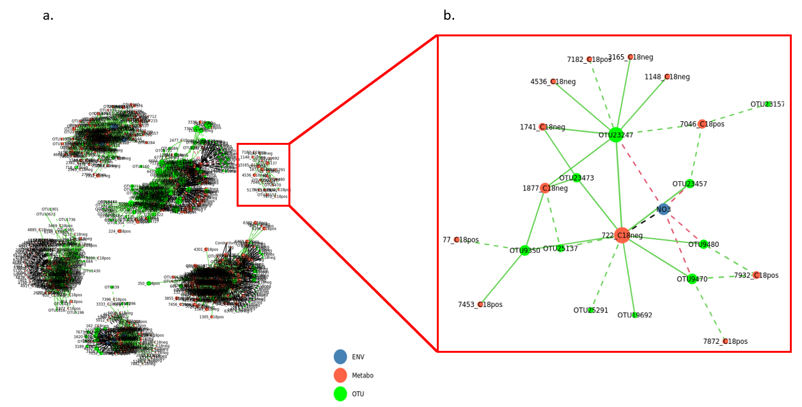
Détails
Introduction
Face aux changements globaux, il est crucial de mieux comprendre l’effet et l’influence réciproque des stress environnementaux sur les communautés microbiennes qui jouent un rôle important dans la biodiversité structurelle et fonctionnelle des écosystèmes. Parmi ces communautés, le périphyton a fait l’objet de nombreux travaux en écotoxicologie microbienne pour caractériser l’effet du stress chimique sur ces communautés. En effet, les espèces qui les constituent sont des indicateurs clés de l’état des écosystèmes car elles sont omniprésentes dans divers écosystèmes et réagissent rapidement aux changements environnementaux et soutiennent de nombreuses fonctions et services écosystémiques [13].
Malgré l’accroissement des connaissances sur l’effet de divers stress environnementaux en conditions contrôlées sur ces communautés [12,16], la transposition de ces résultats à des contextes réels demeure complexe en raison de la variabilité environnementale. Dans cette optique, il est essentiel de mieux comprendre la variation naturelle de ces communautés, tant sur le plan structurel que fonctionnel, ainsi que les déterminants (e.g. environnementaux) de cette variation. Cela inclut l’exploration des relations entre les niveaux de biodiversité, en lien avec les phénomènes de redondance fonctionnelle, (i.e. changement de structure sans changement de fonctionnement basé sur le fait que plus d’une espèce peut contribuer à un processus particulier), et de plasticité phénotypique (i.e., changement fonctionnel sans changement de structure basé sur la capacité d’un organisme à exprimer différents phénotypes selon les conditions environnementales).
Dans ce contexte, les approches moléculaires en écotoxicologie microbienne offrent le potentiel de révéler de nouveaux éléments de l’adaptation des écosystèmes face aux stress environnementaux. En effet, le développement récent des omiques a permis de montrer leur pertinence pour la caractérisation intégrée et sensible de la réponse des communautés microbiennes à leur environnement sur le plan fonctionnel et structurel. En particulier, la méta-métabolomique, qui étudie l’ensemble des métabolites en générant un profil de petites molécules dérivées du métabolisme cellulaire au sein d’un ensemble d’organismes, fournit des informations fonctionnelles sur cette communauté et les interactions associées [22]. C’est donc une approche de choix pour caractériser le phénotype moléculaire d’une communauté microbienne qui est de plus en plus utilisée en écologie microbienne [30]. De manière complémentaire, la métagénomique offre la possibilité d’explorer la composition et la diversité en taxon et en gène de l’ensemble de la communauté. Ainsi, combiner les deux approches pourrait permettre de mieux comprendre le lien entre biodiversité structurelle et fonctionnelle. Toutefois, un enjeu majeur en écotoxicologie microbienne est d’arriver à caractériser les déterminants environnementaux (e.g. température, teneur en nitrate/en phosphate) de cette biodiversité. Un enjeu supplémentaire est d’arriver à évaluer dans quelle mesure ces changements peuvent avoir des conséquences sur des fonctions écologiques (e.g. fonction photosynthétique).
L’intégration de données hétérogènes, incluant des données omiques, environnementales et physiologiques, est nécessaire pour comprendre la dynamique des communautés microbiennes périphytiques sur le plan structurel (e.g. taxon, gène) et fonctionnel (e.g. métabolome) en lien avec l’environnement [4]. L’approche multi-omique, qui combine plusieurs omiques, pourrait contribuer à révéler ces dynamiques, mais elle se heurte à la difficulté d’intégrer des données non omiques (paramètres environnementaux et physiologiques). Cependant, l’intégration de données non-omiques dans des modèles soulève des défis significatifs, principalement en raison de la complexité et de l’hétérogénéité de ces données.
Intégré dans des modèles prédictifs, l’interprétation des données non-omiques peuvent fortement varier en fonction des méthodes de traitement et/ou de prétraitements, d’où la nécessiter de standardiser ces méthodse avant toute intégration de données [23]. Néanmoins, l’approche multi-bloc semble mieux adaptée pour comprendre comment ces stress interagissent et modulent la dynamique des communautés dans des conditions réelles. En effet, la réponse du périphyton aux stress environnementaux, tels que la pollution par les métaux lourds ou les variations de nutriments, est souvent complexe et dépendante de l’état de maturation des biofilms. Des études ont montré que les communautés périphytiques matures peuvent présenter une tolérance accrue aux contaminants [13], en partie grâce à leur capacité à recycler les nutriments et à s’adapter aux conditions environnementales changeantes. Cela souligne l’importance d’une approche intégrative pour appréhender les interactions entre les facteurs environnementaux et les réponses fonctionnelles des communautés microbiennes dans les écosystèmes aquatiques.
Dans ce contexte, les projets MICROBIOMIQ et COMBO visent à aborder l’hétérogénéité temporelle et spatiale, respectivement, des communautés microbiennes périphytiques face à la contamination chimique des écosystèmes aquatiques dans un contexte de changements globaux. Le projet MICROBIOMIQ se concentre sur l’analyse des facteurs environnementaux influençant la biodiversité des microorganismes, en utilisant des approches métagénomiques et métabolomiques pour comprendre leur acclimatation aux stress environnementaux dans le temps. Le projet COMBO, quant à lui, approfondit la connaissance de l’hétérogénéité spatiale du métabolome du périphyton et de la fonction photosynthétique, en examinant le métabolisme et le rendement photosynthétique des communautés périphytiques selon la physico-chimie de l’eau, notamment la contamination chimique.
Sur le plan « analytique », ces projets nécessitent d’intégrer des données omiques et non omiques pour étudier comment les paramètres physico-chimiques des milieux aquatiques structurent les communautés microbiennes périphytiques, tant sur le plan taxonomique que fonctionnel, dans le temps et dans l’espace. Ainsi, nos travaux de stage avaient pour objectif de développer un pipeline bioinformatique pour cette intégration de données hétérogènes. Pour ce faire, nous avons adopté la méthodologie suivante : une recherche bibliographique approfondie a été mise en oeuvre afin de mieux comprendre le contexte écologique du périphyton, les enjeux liés à l’intégration de données omiques et non omiques, ainsi que pour évaluer les différents outils multi-bloc au travers d’un benchmark. Par la suite, nous avons mis en place un pipeline d’analyse bioinformatique pour intégrer ces données et étudier comment les paramètres physico-chimiques des milieux aquatiques structurent les communautés microbiennes périphytiques, tant sur le plan taxonomique que fonctionnel, dans le temps et dans l’espace. Dans cet optique, nous avons émis l’hypothèse que certains paramètres physico-chimiques étaient plus déterminants que d’autres et pouvaient influencer le métabolisme, soit directement, soit par l’intermédiaire d’un taxon. Nous avons aussi émis l’hypothèse que la composition taxonomique pouvait elle-même varier sans que le métabolisme ne soit affecté. Aussi, nous avons considéré qu’une approche basée sur la corrélation devrait permettre d’élucider en première approche ces différents types d’interdépendances (ou d’indépendance).
État de l’art
Étude du périphyton aquatique dans le contexte des changements globaux
Le périphyton est un biofilm phototrophe constitué d’un mélange de microorganismes, d’algues, de cyanobactéries, de champignons et d’autres microbes enchâssés dans une matrice extracellulaire d’exoplysacharides (EPS) produite par les organismes composant le biofilm (Figure 1.1).
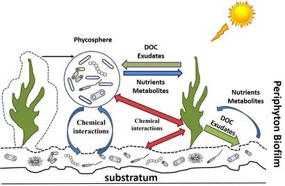
On le trouve généralement dans presque tous les milieux aquatiques, allant des étangs aux océans, et des environnements oligotrophes aux milieux eutrophes, à l’exception des zones boueuses et sableuses à l’embouchure des cours d’eau. Les communautés microbiennes périphytiques jouent un rôle majeur dans le fonctionnement des écosystèmes et le maintien des services écosystémiques, dont notamment le renouvellement des nutriments, l’accumulation de certains métaux lourds comme le mercure [10], la régulation des populations d’autres organismes aquatiques [16] et la production primaire des écosystèmes aquatiques. Dans ce cadre, la tolérance et la résilience des communautés face au stress, notamment en réponse à la contamination par les micropolluants (e.g. pesticides), deviennent des aspects cruciaux à considérer et constituent un enjeu majeur de recherche en écotoxicologie microbienne.
Des études expérimentales ont montré que l’exposition à des concentrations croissantes de contaminants inorganiques (cuivre) et de contaminants organiques (pesticides, composés pharmaceutiques) avait un impact significatif sur le fonctionnement (photosynthèse, activités enzymatiques) et la structure (composition en espèces, biomasse) des communautés périphytiques [13, 16]. Pour autant, les « mécanismes » structurels et fonctionnels sous-jacents, ainsi que leur synchronisation au regard de l’effet des stress environnementaux, sont encore peu documentés. Un enjeu important est donc de décrire les fluctuations de la diversité taxonomique et du fonctionnement des communautés afin de mieux comprendre leur relation face à la pression chimique [12]. Bien que des recherches récentes montrent que la composition taxonomique et le fonctionnement peuvent évoluer en réponse à un stress chimique, elles soulignent également que des modifications de la biodiversité structurelle ne conduisent pas nécessairement à des changements fonctionnels au sein des communautés microbiennes, en raison d’un phénomène de redondance fonctionnelle. À l’inverse, des changements fonctionnels peuvent se produire rapidement sans variations dans la diversité taxonomique, en lien avec un phénomène de plasticité phénotypique [36], qui pourrait également résulter d’une désynchronisation de ces processus.
Globalement, les études révèlent que la diversité et la composition des communautés influencent leur capacité à tolérer les perturbations. Par exemple, les communautés hivernales, caractérisées par une plus grande diversité taxonomique et une richesse spécifique, montrent une résistance accrue aux stress environnementaux, suggérant que des communautés plus diversifiées peuvent mieux se tolérer et/ou se rétablir après des perturbations [19]. De plus, l’importance de la biomasse et de la structure du biofilm dans la protection contre les contaminants souligne que des conditions environnementales favorables à la production de biomasse de matrice extracellulaire, comme des niveaux élevés de nutriments, peuvent promouvoir la résilience en soutenant des espèces plus tolérantes, voire résistantes.
Les approches moléculaires, telles que les omiques, offrent une voie prometteuse pour évaluer ces dynamiques complexes, en fournissant des informations détaillées sur les réponses fonctionnelles et structurelles des communautés microbiennes et leur relation. Cela devrait permettre de renforcer notre compréhension des mécanismes de tolérance et de résilience des écosystèmes aquatiques face aux stress anthropiques.
####. Les omiques et leurs applications sur les communautés microbiennes aquatiques
Les omiques, les méta-omiques et leur couplage
Définitions
Le terme « omique » englobe des disciplines comme la génomique, la transcriptomique, la protéomique et la métabolomique. Selon Jackson et al. (2006) [20], le suffixe « -ome » désigne une multitude de mesures par échantillon, caractérisant un état biologique d’un organisme ou d’un ensemble d’organismes (méta-omique).
L’objectif des approches omiques est d’acquérir une compréhension intégrée de la biologie en étudiant tous les processus biologiques, bien que des défis subsistent en raison de la complexité des systèmes (Figure 1.2).
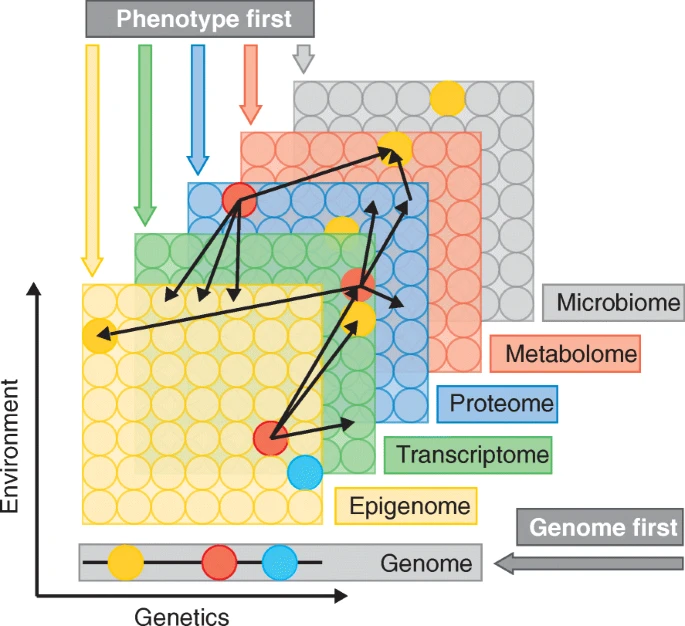
La génomique est un omique qui se concentre sur l’étude des gènes, du point de vue de leur séquence ou de leur fonction ; on parle ainsi de génomique structurale et fonctionnelle. Globalement, la génomique étudie l’expression des gènes séquencés, en utilisant des approches expérimentales à grande échelle pour analyser simultanément de nombreux gènes. Dans certaines études elle est utilisée pour comprendre l’importance adaptative des gènes et des moteurs des processus écologiques et évolutifs [17,28]. Dans notre contexte d’étude, elle est utilisée pour caractériser la diversité des taxons et prédire le fonctionnement d’une communauté.
La métabolomique étudie l’ensemble des métabolites (i.e. petites molécules <2000 Da) dérivées du métabolisme cellulaire et peut refléter directement le résultat de réseaux complexes de réactions biochimiques, fournissant ainsi des informations sur de multiples aspects de la physiologie cellulaire [22] ou servir à l’identification de biomarqueurs pour du profilage en ciblant des métabolites spécifiques qui reflètent un état physiologique précis [31].
Pour chaque omique, l’évolution des outils d’analyse a permis l’acquisition d’une quantité toujours plus importante de données. Aussi, deux approches analytiques sont globalement décrites dans la littérature : l’analyse ciblée et non ciblée [6]. L’analyse ciblée quantifie un nombre limité de molécules connues, tandis que l’approche non ciblée compare l’ensemble des molécules sans hypothèse préalable.
Les méta-omiques, multi-omiques et applications environnementales
Aujourd’hui, l’analyse des omiques ne se limite plus qu’à l’étude d’un seul organisme mais peut s’étendre à l’échelle d’une communauté de plusieurs espèces, on parle de méta-omique. Cette avancée permet d’obtenir une vue d’ensemble des processus cellulaires et des interactions au sein d’un écosystème microbien/cellulaire, facilitant ainsi la compréhension des réponses biologiques et écologiques aux stress environnementaux, tels que la pollution chimique. Cela ouvre la voie à des évaluations écotoxicologiques plus efficaces et à une meilleure prise de décision en matière de gestion environnementale, en permettant d’identifier les mécanismes sous-jacents à la dégradation des écosystèmes et en facilitant l’étude des impacts cumulés de multiples polluants [33].
Concernant les communautés libres telles que les biofilms d’eau douce, des études récentes ont démontré la pertinence de la métabolomique non ciblée pour caractériser de manière sensible et précoce la réponse au stress chimique mais également des changements fonctionnels à plus long terme [11, 26, 34]. De manière complémentaire, la métabarcoding apparaît comme une méthode de choix pour caractériser l’altération de la diversité et la composition en espèces des communautés microbiennes aquatiques dans l’eau et les sédiments [8]. De plus, ces exemples illustrent également les limites des approches de méta-omique, car très vite dans ces études, l’idée de confronter d’autres données omiques, afin d’avoir un vision globale des mécanismes en oeuvre, vient tout naturellement, d’où la nécessité des approches multi-omiques.
L’approche multi-omique constitue une stratégie intégrative qui combine plusieurs types de données omiques pour obtenir une compréhension plus complète d’un système biologique [4]. L’intégration de plusieurs jeux de données permet de mettre en évidence des relations qui ne seraient pas visibles en étudiant une seule couche. L’application conjointe de l’analyse multi-omique permet d’approfondir la compréhension des différences dans l’expression des gènes et des protéines, ainsi que des changements de composition des métabolites. Par exemple, une étude de Paix et al. (2021) [8] sur l’holobionte algal Taonia atomaria a utilisé une approche multi-omique pour examiner comment les variations du métabolome de surface influencent les communautés microbiennes épiphytiques à l’échelle du thalle. En combinant des données de métabarcoding et de métabolomique, les chercheurs ont pu établir des liens entre la composition chimique de la surface de l’algue et la diversité des communautés bactériennes, révélant ainsi que des métabolites spécifiques, tels que le diméthylsulfoniopropionate (DMSP), peuvent jouer un rôle clé dans la structuration de ces communautés.
Cette approche souligne l’importance de l’intégration de données hétérogènes, car elle permet de croiser des informations provenant de différentes sources et niveaux d’analyse (e.g. génomiques, transcriptomiques, protéomiques et métabolomiques). Alors que l’approche multi-omique offre déjà une compréhension approfondie des interactions biologiques, élargir cette intégration aux données non-omiques, telles que les données environnementales, permettrait de saisir pleinement les dynamiques complexes qui régissent les écosystèmes et d’optimiser les stratégies de gestion environnementale.
Intégration de données hétérogènes et analyse multibloc
Enjeux actuels de l’intégration de données hétérogènes et des analyses multibloc
Dans les approches d’intégration de données hétérogènes, on peut se retrouver avec un nombre assez conséquent de données et de nature hétérogène de surcroît [9], on préfère alors l’utilisation du terme d’analyse multi-bloc. Cependant, l’intégration de données omiques et non omiques (OnO) pose des défis supplémentaires pour l’analyse computationnelle. Selon López et al. (2019) [23], peu d’études ont réussi à réaliser une intégration efficace de ces types de données.
Les interactions OnO peuvent être complexes, car les variations au sein d’un bloc de données peuvent entraîner des anomalies, créant ainsi des relations intriquées entre les données moléculaires et environnementales. Par conséquent, une approche intégrative qui prend en compte ces interactions est essentielle pour améliorer la précision des modèles prédictifs. Un autre défi dans l’intégration des données OnO est d’assurer une contribution équitable des différents blocs de variables, afin d’éviter que certains blocs dominent l’analyse [13]. De plus, dans le domaine de la génomique, la prise en compte de sous-phénotypes hétérogènes peut compliquer la définition du modèle OnO, car ignorer ces sous-phénotypes pourrait nuire à la performance du modèle.
En écotoxicologie, ce type d’approche reste très rare. Néanmoins, une étude récente basée sur DIABLO (multi-bloc sPLS-DA) a mis en évidence une forte covariation saisonnière entre les métabolites (métabolomique non ciblée par LC-MS) et les bactéries (métabarcoding 16S rDNA) en lien avec la présence de cuivre et les variations de température. Cela indique que les variations saisonnières des conditions environnementales influencent la structure et le fonctionnement des communautés microbiennes [30]. De plus, une autre étude a révélé que certains métabolites, tels que le diméthylsulfoniopropionate (DMSP) et des dipeptides, étaient positivement corrélés à des taxons bactériens spécifiques, suggérant que la chimie de surface des algues joue un rôle actif dans la sélection des communautés épiphytes [8].
Globalement, l’utilisation d’analyses multi-bloc permet non seulement de mieux comprendre les interactions entre les organismes et leur environnement, mais aussi d’identifier les facteurs influençant la diversité et la fonction de ces communautés dans divers contextes écologiques. Se faisant, cette approche intégrative pourrait potentiellement contribuer à développer des stratégies de gestion durable des ressources et à évaluer les impacts des changements environnementaux sur les écosystèmes.
Algorithmes utilisés en multi-bloc
L’intégration de données omiques repose sur divers algorithmes qui facilitent l’interprétation et l’analyse des données (Tableau 1.1).
Parmi ces méthodes, la Orthogonal Partial Least Squares (OPLS), la Sequential Orthogonalized Partial Least Squares (SO-PLS), la Partial Orthogonalized Partial Least Squares (PO-PLS), la Sparse Partial Least-Squares (S-PLS) et la Regularized Generalized Canonical Correlation Analysis (RGGCA) offrent des approches variées pour traiter des ensembles de données multi-omiques et non-omiques. Enfin, la MB-PLS (Multi-Block Partial Least Squares) se distingue comme une extension de la PLS, permettant d’incorporer plusieurs blocs de données tout en maintenant une dimension d’échantillon commune. Ces algorithmes sont conçus pour améliorer la précision des prédictions et faciliter l’extraction d’informations pertinentes à partir de jeux de données complexes.
Tableau 1.1 – Résumé de quelques outils multi-blocs
| Algorithmes et références | Description | Force | Limites |
|---|---|---|---|
| S-PLS (Sparse Partial Least-Squares)
- Dongh wan Lee et al. (2011) [21] |
Intègre une sélection de variables basée sur une régression lasso, parcimonieuse et efficace en cas de multicolinéarité. | Surpasse les performances de la PLS standard. Permet d’utiliser différents types de pénalités (L1, ridge, elastic-net) | Sensible au bruit. Temps de traitement plus lent. |
| RGGCA (Regularized Generalized
Canonical Correlation Analysis) - Tenenhaus et al. (2011) [37] |
Trouve des combinaisons linéaires de variables de blocs, permettant d’intégrer des modèles hiérarchiques variés. | Stabilité avec des données mal conditionnées. | Absence de solution analytique donc nécessite l’utilisation d’un algorithme convergent basé sur la PLS. |
| SO-PLS (Sequential Orthogonalized
Partial Least Squares) - Niimi et al. (2013) [29] |
Gère des blocs de dimensions différentes, adaptée pour combiner des variables de conception avec des données spectrales. | Incorpore des blocs de données supplémentaires de manière séquentielle. Non itératif. | L’ordre des blocs dans l’analyse peut influencer les résultats. |
| PO-PLS (Partial Orthogonalized Partial
Least Squares) - Niimi et al. (2013) [29] |
Estime des sous-espaces communs et uniques à travers plusieurs blocs de données. | Estimation des sous-espaces communs et uniques. Capables de gérer des données avec des dimensions différentes. | Sensible au bruit. |
| Consensus-OPLS - JulienB et al. (2013) [5] |
Combine l’implémentation du noyau de l’algorithme OPLS avec une procédure de fusion de données pour évaluer simultanément plusieurs blocs de données. | Interprétation plus aisée des modèles en se concentrant sur l’information prédictive. Les composantes orthogonales peuvent mettre en évidence des variations systématiques inattendues. | Absence d’optimisation stricte des poids des blocs. Dépendance à la linéarité. |
| OPLS (Orthogonal Partial Least
Squares) - Thevenot et al. (2017) [38] |
Améliore l’interprétation des composants prédictifs et des variations systématiques. | Efficacité avec des données multicolinéaires. | Sensible au surajustement. |
| MB-PLS (Multi Block Partial Least
Squares) - Baum et al. (2019) [3] |
Extension de la PLS pour intégrer plusieurs blocs de données partageant une dimension d’échantillon commune. | Facile d’interprétation grâce à la structure des variables latentes. Faible temps d’exécution. | Performance variable selon la structure des données. |
Matériel et méthode
Méthodologie des projets MICROBIOMIQ et COMBO
Le projet MICROBIOMIQ et le projet COMBO visent à caractériser l’influence des facteurs environnementaux sur l’hétérogénéité temporelle (MICROBIOMIQ) et spatiale (COMBO) du métabolisme, de la fonction photosynthétique et de la composition taxonomique du périphyton tout en cherchant à évaluer les interdépendances entre ces métriques (i.e. liens entre les changements structuraux et fonctionnels).
Pour ce faire, dans le cadre de MICROBIOMIQ, un suivi longitudinal a été réalisé sur l’étang de Gazinet entre mars 2022 et août 2023. Il a consisté en un échantillonnage mensuel du périphyton par colonisation sur lame de verre durant 4 semaines. Chaque mois, la composition taxonomique et le métabolisme du périphyton ont été caractérisés par métagénomique (Whole genome sequencing par Illumina NextSeq 2000) et méta-métabolomique (non ciblée par LC-HRMS/MS). L’activité photosynthétique a été évaluée à travers la mesure du rendement photosynthétique avec un PhytoPAM® permettant de rendre compte de l’état physiologique de la communauté et plus spécifiquement des photosystèmes. En parallèle, une trentaine de paramètres environnementaux incluant la physico-chimie de l’eau (température, pH, oxygène dissous, matière en suspension, micropolluants, nutriments) et les conditions météorologiques (précipitation, irradiance) ont été mesurés.
Dans le cadre du projet COMBO, du périphyton autochtone a été collecté sur des cailloux sur un total de 45 sites en Nouvelle-Aquitaine au printemps et à l’automne 2024. Le métabolisme de ces communautés a été caractérisé par méta-métabolomique non ciblée (LC-HRMS/MS). L’activité photosynthétique a été évaluée in situ à travers la mesure du rendement photosynthétique à l’aide d’un Diving PAM. Pour chaque période de prélèvement, les données physico-chimiques de l’eau ont été récupérées auprès de l’agence de l’eau Adour Garonne (AEAG) (environ 300 paramètres dont 250 micropolluants).
Les détails de la méthodologie et des variables sont fournis en annexe 1, tandis que le tableau 2 présente une synthèse des données générées. Pour MICROBIOMIQ, la variable à expliquer (Y) est un vecteur de longueur 33, comprenant 11 classes uniques qui correspondent aux mois et à l’année de prélèvement (e.g. Apr22, Feb23). Il y a en tout 8 mois différents (Février, Mars, Avril, Mai, Juin, Juillet, Août et Septembre) et deux années (2022 et 2023). Cependant, seuls les mois d’Avril, Juillet et Août ont pu être prélevés deux fois. Quant à COMBO, la variable à expliquer contient 81 variables pour 39 classes uniques qui correspondent aux sites de prélèvement.
Tableau 2.1 – Résumé des jeux de données
| MICROBIOMIQ | COMBO | |||||
|---|---|---|---|---|---|---|
| Variables | Échantillons | Variables | Nombre de sites | Échantillons | Variables | Nombre de sites |
| Physico-Chimie | 33 | 17 | 11 | 78 | 298 | 39 |
| Fluorescence | 33 | 11 | 11 | 348 | 7 | 39 |
| Métabolomique | 33 | 6712 | 11 | 348 | 16914 | 39 |
| Metabarcoding (OTU) | 33 | 2601 | 11 | 348 | 2601 | 39 |
A noter que pour les données de métagénomique (MICROBIOMIQ) et de métabolomique (MICROBIOMIQ et COMBO), les données ont été pré-traités afin d’éliminer tout artefact analytique liées aux limites de détection instrumentale, à la dérive du signal et au bruit de fond. Ces étapes préliminaires sont synthétisées en annexes.
Conception
Organisation du travail
Ce stage a consisté en la création d’un pipeline bioinformatique pour l’intégration de données hétérogènes en vue de répondre aux objectifs de MICROBIOMIQ et COMBO. Dans cette optique, ce stage s’est organisé en 3 grandes étapes :
- Une recherche bibliographique a été mise en œuvre afin de mieux comprendre le contexte biologique et écologique du périphyton et ainsi identifier les méthodes statistiques les plus pertinentes pour répondre aux enjeux de recherche actuels.
- Une évaluation de certains outils d’analyse multi-bloc a ensuite été réalisée, basée sur les performances de ces algorithmes en analyse discriminante et leur performance globale ainsi que les fonctions qu’ils proposent.
- Enfin, un pipeline d’analyse basé sur les outils sélectionnés a été mis en place et appliqué aux données de MICROBIOMIQ et COMBO afin de répondre aux objectifs scientifiques de ces projets.
Définition du pipeline générique
Dans la mesure où nous manquons d’informations sur les mécanismes structurants les communautés microbienne sous préssion de leur environnement, et qu’il existe une variété de combinaisons de données omiques et non omiques, chaque analyse multi-bloc devra être traitée comme un cas unique. D’où la nécessité de proposer un ensemble d’outils (tableau 2.2 et 2.3) pouvant s’intégrer les uns à la suite des autres pour construire un pipeline d’analyse multi-bloc.
Le pipeline que nous proposons peut se résumer en quatre grandes étapes : 1. sélection de variables (i.e. filtration) ; 2. normalisation, 3. entraînement du modèle et 4. évaluation du modèle (Figure 2.1). Il est nécessaire de s’assurer que chaque méthode employée à chacune de ces étapes s’adapte bien au jeu de données, d’où la nécessité d’explorer visuellement les jeux de données (par exemple, boxplot, carte de densité, projection en dimension réduite, etc.). Cette visualisation est également nécessaire pour l’interprétation en sortie du modèle final. Enfin, l’évaluation du modèle permet de juger de sa pertinence et d’identifier s’il a appris correctement.
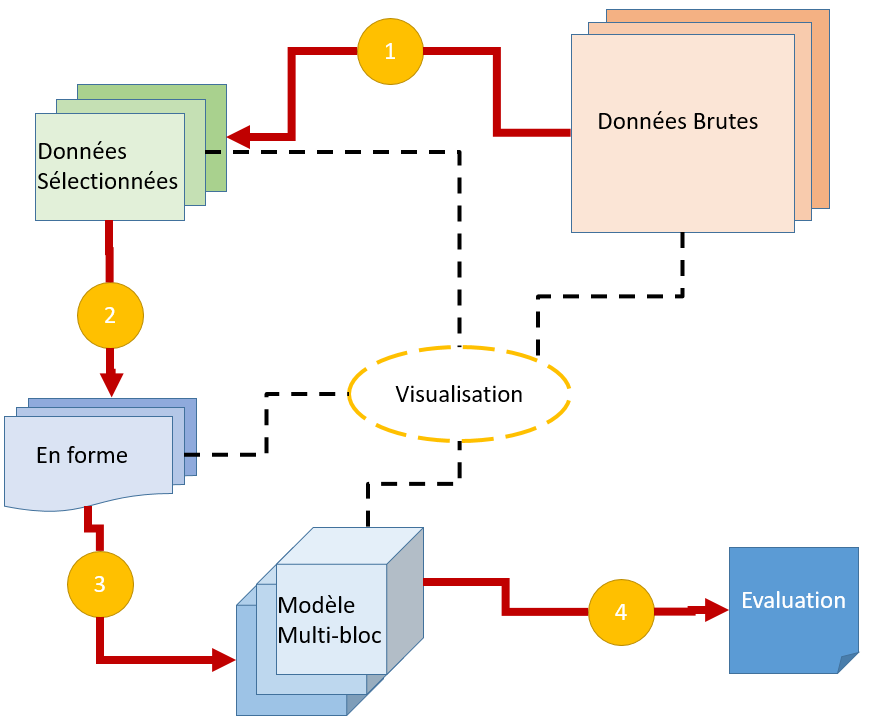
Pré-traitement : sélection de variable et scaling
En raison de la taille des jeux de données, un prétraitement est nécessaire pour sélectionner les variables les plus explicatives. Les méthodes de sélection se basent généralement sur la variation (CV, IQR), la distribution (kurtosis, indice CH) ou l’importance vis-à-vis du modèle (VIP), et peuvent être combinées pour affiner le choix.
Parmi les diverses méthodes de sélection de variables proposées dans la littérature, celles qui ont été explorées dans ce travail sont présentées dans le tableau 2.2, regroupées selon qu’elles soient supervisées ou non, et selon qu’elles se basent sur la dispersion, la distribution, la covariance ou l’importance vis-à-vis du modèle.
De plus, chaque jeu de données présente une hétérogénéité qui peut biaiser les analyses, rendant une normalisation et/ou transformation essentielle. On distingue la normalisation intra-bloc, qui uniformise l’importance des variables au sein d’une matrice, et la normalisation inter-bloc, qui traite la variation entre les blocs de données (Tableau 2.3).
Tableau 2.2 – Résumé des fonctions de sélection de variables
| Type d’approche | Fonctions et packages | Nom de la fonction | Packages R | ||
|---|---|---|---|---|---|
| Supervisée | Non-supervisée | ||||
| Dispersion des variables | |||||
| CV | get.cv.list |
base, dplyr, stats | |||
| IQR | get.IQR.list |
base, dplyr, stats | |||
| Freqcut | get.freqCut.list |
base, dplyr, stats | |||
| Uniquecut | get.uniqueCut.list |
base, dplyr, stats | |||
| Distribution des variables | |||||
| Indice CH | get.ch.list |
base, dplyr, stats | |||
| Test de Kruskal-Wallis | get.kw.list |
base, dplyr, stats | |||
| Indice de Kurtosis | get.kurt.list |
base, dplyr, stats, moments | |||
| Covariance des variables | |||||
| RDA | RDA.selection |
base, dplyr, stats, vegan | |||
| VIP selon un modèle simple bloc | get.vip.list |
base, dplyr, stats, caret |
Sélection de variables
Sélection par la dispersion
- Coefficient de variation (CV) et l’écart interquartile (IQR) : La variance d’une variable peut servir de critère pour évaluer la qualité d’une variable dans une analyse multi-bloc. Plusieurs métriques peuvent être utilisées à cet effet, telles que le coefficient de variation (CV), qui mesure la dispersion relative d’une variable, et l’écart interquartile (IQR), qui est une mesure de dispersion obtenue en calculant la différence entre le troisième et le premier quartile, pour sélectionner des variables.
- FreqCut et UniqueCut (variance proche de zéro) : Une autre méthode consiste à sélectionner les variables qui présentent peu ou pas de valeurs uniques. De telles variables affichent une variance proche de zéro et peuvent être identifiées en calculant, d’une part, le rapport entre la valeur la plus fréquente et la deuxième valeur la plus fréquente (freqCut), et d’autre part, en déterminant le pourcentage de valeurs distinctes par rapport au nombre total d’échantillons [18].
Sélection selon la distribution des variables
- Indice de Kurtosis : Une partie du pipeline qui est mise en place repose sur une analyse discriminante visant à trouver une combinaison linéaire de variables explicatives qui sépare au mieux les différentes classes. Cette séparation est d’autant plus efficace si les variables présentent une distribution plurimodale. C’est pourquoi l’indice de Kurtosis est utile, car il décrit la forme de la distribution d’une variable. La sélection consiste à identifier les variables dont la distribution s’écarte le plus d’une loi normale. Ainsi, un indice supérieur à 3 indique que la distribution est leptokurtique, ce qui signifie qu’elle est plus pointue avec des queues plus lourdes, indiquant une prévalence de valeurs extrêmes par rapport à une distribution normale [2].
- Indice Calinski-Harabasz : Une autre approche consiste à sélectionner les variables dont la distribution permet de maximiser la variance interclasse tout en minimisant la variance intraclasse, comme l’indique l’indice CH [41]. En d’autres termes, cette méthode identifie les variables dont la distribution favorise une séparation claire entre les classes, améliorant ainsi la distinction entre les groupes. L’utilisation de l’indice CH permet de déterminer quelles variables contribuent le plus à la structure des données.
Sélection par la covariance des variables
- Analyse de redondance (RDA) : La RDA est une extension directe de la régression multiple, car elle modélise l’effet d’une matrice explicative X sur une matrice de réponse Y. La différence réside dans le fait que nous pouvons modéliser l’effet d’une matrice explicative sur une matrice de réponse, plutôt que sur une seule variable de réponse. En analysant les coefficients de régression et leur significativité, il est possible de déterminer quelles variables ont un impact significatif [40].
Sélection par l’importance des variables vis-à-vis du modèle : Variable Importance in Projection (VIP)
La VIP se base sur les coefficients de régression issus de modèles tels que la régression PLS (Partial Least Squares). Chaque variable reçoit un score VIP qui indique son importance relative vis-à-vis du modèle : un score supérieur à 1 signale une contribution significative sur les performances du modèle, tandis qu’un score inférieur à 1 suggère un impact négligeable. Selon Mishra et al (2021) [27], il est possible de sélectionner des variables en passant par les VIP d’un modèle simple bloc où les blocs ont été au préalable concaténés. Les VIP quantifient la contribution de chaque variable explicative à la prédiction des résultats.
Normalisation, transformation et mise à l’échelle
En analyse multi-bloc, plusieurs niveaux de prétraitement sont nécessaires en raison de la diversité des jeux de données [7]. Le niveau I vise à améliorer la qualité des données directement issues de l’instrument de mesure, il est générique à la mise en œuvre de tout type d’analyse. Dans le cas de ce travail, ce prétraitement de niveau 1 avait déjà été réalisé (voir Annexe). Le niveau II cherche à équilibrer la contribution de chaque variable dans chaque bloc (tableau 2.3 : méthode intrabloc) et regroupe toutes les méthodes « classiques » de normalisation, transformation et scaling utilisées en statistiques. Enfin, le niveau III, contrairement aux deux précédents, est spécifique aux analyses multiblocs et ne se concentre pas sur un seul bloc, mais vise à équilibrer l’effet de chaque bloc par rapport aux autres (tableau ??).
Ce scaling inter-bloc est une étape cruciale dans le prétraitement des données multi-bloc, visant à harmoniser les différentes sources de données afin d’éliminer les biais liés aux différences d’échelle et de taille. En effet, les blocs de données peuvent varier considérablement en termes de nombre de variables et d’unités de mesure, ce qui peut fausser les résultats d’analyse si ces différences ne sont pas correctement prises en compte. Les méthodes de normalisation, qu’elles soient basées sur la moyenne ou la médiane, permettent d’éliminer ces biais, facilitant ainsi la comparaison entre les échantillons. Par exemple, la transformation logarithmique aide à stabiliser la variance et à normaliser les distributions, ce qui est particulièrement utile lorsque les données présentent des variations extrêmes [39].
De plus, la transformation CLR (Centered Log Ratio), combinant transformation et scaling, est efficace pour traiter des données compositionnelles, car elle réduit les effets de la sparsité et rend les distributions plus symétriques [24].
Les approches de scaling interbloc, telles que le soft-scaling (SBS) et le hard-block scaling (HBS), sont conçues pour équilibrer l’importance des différents blocs en tenant compte de leur taille et de leur variabilité. Ces méthodes garantissent que les blocs plus petits ne sont pas éclipsés par des blocs plus volumineux, ce qui pourrait introduire un biais dans les résultats. En outre, les méthodes de block rank scaling, qui s’appuient sur l’analyse en composantes principales (PCA) pour déterminer la dimensionnalité sous-jacente de chaque bloc, permettent d’ajuster l’importance des blocs en fonction de la variation non corrélée qu’ils apportent à l’analyse [7]. En intégrant ces techniques de normalisation inter-bloc, il est possible d’optimiser la capacité prédictive des modèles et d’améliorer l’interprétation des résultats, tout en assurant une représentation équilibrée de chaque source de données dans l’analyse multivariée.
Tableau 2.3 – Résumé des fonctions de normalisation transformation et scaling
| Catégorie | Fonction | Process | Packages utilisés |
|---|---|---|---|
| Intrabloc | classic.scale |
Normalisation par la moyenne | base, dplyr |
log.pareto |
Transformation log, normalisation de Pareto | base, dplyr, IMIFA | |
med.cub.pareto |
Normalisation par la médiane, transformation cube root, standardisation de Pareto | base, dplyr, IMIFA | |
clr |
Transformation des proportions par le logarithme centré, utilisant la moyenne géométrique | base, dplyr, composition | |
| Interbloc | SBS |
Divise par la racine quatrième du nombre de colonnes | |
| Interbloc | SBS |
Divise par la racine quatrième du nombre de colonnes | base |
| :— | :— | :— | :— |
HBS |
Divise par la racine carrée du nombre de colonnes | base | |
SHBS |
Divise par le nombre de colonnes | base | |
SBVS |
Divise par la racine quatrième du nombre de colonnes divisée par la somme des variances | base | |
HBVS |
Divise par la racine carrée de la somme des variances | base | |
SHBVS |
Divise par la somme des écarts types | base |
L’analyse discriminante vise à maximiser la séparation entre différents groupes tout en minimisant la variance au sein de chaque groupe, ce qui implique de regrouper les observations pour que les individus d’un même groupe soient aussi similaires que possible, tout en assurant une distinction claire entre les groupes. On notera que pour toute analyse multi-bloc, chaque bloc de données doit avoir un nombre de lignes identique et les mêmes labels pour les échantillons, ainsi que pour la variable à expliquer.
Le benchmark a pour objectif d’évaluer, dans un premier temps, l’influence de la filtration et du nombre de variables sur les performances des algorithmes d’analyse multi-bloc que proposent ces packages. Il s’agit des algorithmes Consensus-OPLS, RGCCA et Bloc-PLSDA, inclus respectivement dans les packages Consensus-OPLS, RGCCA et mixOmics. La filtration se fait en faisant varier les seuils de sélection des variables selon le CV et l’IQR, tout en utilisant une méthode de normalisation unique (scaling par la médiane, transformation cube root et scaling de pareto scale). Dans un second temps, nous examinerons les capacités discriminantes de ces algorithmes, puis nous évaluerons l’effet des différentes méthodes de normalisation. L’indice de Calinski-Harabasz nous a permis de comparer les résultats des algorithmes Consensus-OPLS, RGCCA et Block-PLSDA afin d’évaluer leurs forces et faiblesses lors de la phase de benchmark.
Algorithmes multi-blocs
Outils multi-bloc sélectionnés en vue du benchmark
À partir de la littérature, trois packages ont été sélectionnés : Consensus-OPLS, RGCCA et mixOmics. Chacun de ces packages intègre des algorithmes permettant l’intégration de données hétérogènes et des outils de visualisation. Le package Consensus-OPLS permet de visualiser la contribution de chaque bloc ainsi que l’importance de chaque variable à l’aide des Variable Importance Plot (VIP). Le package RGCCA propose une gamme d’outils supervisés et non supervisés, incluant un algorithme qui permet de comparer visuellement le poids de chaque bloc et variable, tout en intégrant un outil de sélection de variables. De son côté, le pipeline DIABLO du package mixOmics offre des fonctionnalités similaires. À l’instar de RGCCA, il propose également une méthode de sélection de variables (incluse dans la fonction Block-(s)PLSDA) et permet de construire un réseau de corrélation, ce qui est utile pour notre problématique. Tous ces packages fournissent des outils d’analyse discriminante, permettant une visualisation en 2D des échantillons (construite à partir de modèles multi-bloc), où le positionnement de chaque point est déterminé par les variables.
L’analyse discriminante vise à maximiser la séparation entre différents groupes tout en minimisant la variance au sein de chaque groupe, ce qui implique de regrouper les observations pour que les individus d’un même groupe soient aussi similaires que possible, tout en assurant une distinction claire entre les groupes. On notera que pour toute analyse multi-bloc, chaque bloc de données doit avoir un nombre de lignes identique et les mêmes labels pour les échantillons, ainsi que pour la variable à expliquer.
Le benchmark a pour objectif d’évaluer, dans un premier temps, l’influence de la filtration et du nombre de variables sur les performances des algorithmes d’analyse multi-bloc que proposent ces packages. Il s’agit des algorithmes Consensus-OPLS, RGCCA et Bloc-PLSDA, inclus respectivement dans les packages Consensus-OPLS, RGCCA et mixOmics. La filtration se fait en faisant varier les seuils de sélection des variables selon le CV et l’IQR, tout en utilisant une méthode de normalisation unique (scaling par la médiane, transformation cube root et scaling de pareto scale). Dans un second temps, nous examinerons les capacités discriminantes de ces algorithmes, puis nous évaluerons l’effet des différentes méthodes de normalisation. L’indice de Calinski-Harabasz nous a permis de comparer les résultats des algorithmes Consensus-OPLS, RGCCA et Block-PLSDA afin d’évaluer leurs forces et faiblesses lors de la phase de benchmark.
Évaluation des performances
Le pipeline d’entraînement du modèle varie en fonction du modèle sélectionné, mais dans tous les cas, il est essentiel d’effectuer des allers-retours entre le prétraitement et l’entraînement afin d’affiner le modèle. Dans notre situation, nous ne disposons d’aucune donnée de référence pour établir un lien entre un profil métabolique ou taxonomique et l’environnement. De plus, le manque et/ou le déséquilibre des données limitent les méthodes d’évaluation de nos modèles.
Ces contraintes nous ont donc conduits à adopter une méthode de validation croisée (Cross Validation) pour évaluer le taux d’erreur des modèles. Deux approches de validation croisée ont été mises en œuvre [35] :
- k-fold Cross-Validation : Dans cette méthode, les données sont divisées en plusieurs sous-ensembles, appelés “folds”. Le modèle est ajusté sur tous les sous-ensembles sauf un, qui est utilisé pour tester la performance du modèle. Ce processus est répété plusieurs fois, chaque sous-ensemble étant utilisé une fois comme ensemble de test. Cela permet d’obtenir une estimation robuste de la performance du modèle en réduisant le risque de surajustement.
- Leave-One-Out Cross-Validation (LOOCV) : Cette méthode consiste à laisser de côté une seule observation à la fois pour tester le modèle, tandis que toutes les autres observations sont utilisées pour l’entraînement. Ce processus est répété pour chaque observation dans le jeu de données. Bien que cette méthode puisse être plus coûteuse en termes de calcul, elle fournit une évaluation très précise de la performance du modèle, car chaque observation est utilisée à la fois pour l’entraînement et pour le test.
Les capacités discriminantes des modèles peuvent aussi être mesurées a posteriori via la silhouette. Cette mesure permet d’évaluer la qualité de la classification des échantillons en fournissant des informations sur la cohésion et la séparation des clusters [32]. Une silhouette élevée indique que les échantillons sont bien regroupés au sein de leurs clusters respectifs, tandis qu’une silhouette faible ou négative suggère que certains échantillons pourraient être mal classés. En intégrant cette évaluation, nous pouvons mieux comprendre comment nos modèles se comportent en termes de discrimination entre les différentes classes d’échantillons.
3.2.7. Exploration, visualisation et ordination des données
Outils de classification
Des méthodes classiques de statistique descriptive ont été utilisées en amont pour garantir la cohérence des tableaux de données, notamment à travers des représentations telles que des boxplots, des histogrammes et des analyses en composantes principales (ACP). En aval, pour évaluer la qualité du prétraitement sur le modèle, des graphiques ont été réalisés pour montrer la contribution relative des différents blocs ainsi que celle du modèle lui-même (loading, VIP, etc.). De plus, une représentation dans un espace réduit a permis de visualiser la position relative de chaque échantillon, facilitant ainsi l’identification de clusters potentiels.
Ordination
Pour l’ordination, une projection des jeux de données dans un espace réduit a été effectuée à l’aide de l’UMAP (Uniform Manifold Approximation and Projection). Cet algorithme de réduction de dimension est basé sur des techniques manifold (qui étudie des espaces à plusieurs dimensions) [25] et il permet d’identifier des classes d’échantillons par le biais d’un clustering hiérarchique non supervisé. Le clustering a été fait sur les coordonnées des échantillons de l’espace réduit renvoyé par l’UMAP sur les données physico-chimiques.
Réseau de corrélation
Pour étudier les relations entre les différents paramètres analysés lors de l’analyse multi-bloc, nous construisons un réseau qui établit les associations entre les paramètres environnementaux, les métabolites et les taxons. L’architecture de ce réseau dépend du modèle choisi pour sa construction et, en amont, des blocs de données utilisés. Dans le projet MICROBIOMIQ, nous visons à examiner comment les métabolites et les taxons se structurent dans le temps, tandis que dans le projet COMBO, nous nous concentrerons sur la structuration des métabolites dans l’espace au regard de la physico-chimie de l’eau. Ce réseau constitue un élément central de l’interprétation biologique de ces deux projets. La détection de communautés dans le réseau de corrélation est essentielle pour discriminer les facteurs environnementaux en eux et visuellement identifier les métabolites et taxons spécifiques à un ou plusieurs paramètres, et voir comment les métabolites et les taxons se regroupent en fonction de leurs interactions. L’algorithme de Louvain peut révéler des structures sous-jacentes qui pourraient ne pas être immédiatement apparentes en segmentant le réseau en communautés, où les membres d’une même communauté sont plus densément connectés entre eux qu’avec ceux des autres communautés. Cependant, l’algorithme de Louvain, bien qu’efficace pour des réseaux de grande taille, présente des limitations en termes de détection de communautés mal connectées [1].
Résultats et discussions
Benchmark des différents outils pour la sélection de l’algorithme multibloc et du package
Influence de la filtration sur les performances du modèle
Dans un premier temps, en reprenant le pipeline de Paix et al. (2021) [8], nous avons procédé à une triple filtration par le Coefficient de Variation (CV), l’Intervalle Interquartile (IQR) et la RDA. Cependant, dans la mesure où nous souhaitons conserver un nombre suffisant de variables pour une approche exploratoire, la sélection via la RDA s’est avérée trop drastique, ne conservant que 3 à 4 % des données pour les métabolites et les OTUs, et s’est révélée coûteuse en temps de calcul (jusqu’à 4 heures de traitement sans parallélisation). De plus, cette méthode n’offrait pas de performances satisfaisantes pour les modèles, avec un taux d’erreur supérieur à 40 %. Nous avons donc décidé de n’utiliser que la filtration par CV et IQR pour ce benchmark.
Cette méthode consiste à calculer séparément le CV et l’IQR pour chaque bloc de données. Ensuite, nous avons sélectionné les variables ayant les meilleurs scores dans chaque cas. Le nombre de variables retenues dépendait des valeurs de percentile que nous avions préalablement choisies pour le CV et l’IQR. Enfin, nous avons rassemblé les variables qui présentaient à la fois un bon score de CV et un bon score d’IQR, garantissant ainsi une sélection robuste et pertinente des variables pour notre analyse. Nous avons également employé une méthode de normalisation générique pour l’ensemble des blocs (méthodes de la médiane, transformation cube root et pareto) pour réaliser ce benchmark, dont les résultats sont illustrés en figure 5.
Les résultats montrent que le Consensus-OPLS ne présente qu’un R² maximum d’environ 0,267 (Figure 3.1). Nous constatons également que le nombre de variables influence faiblement ces performances, avec un minimum à 0,216. Cependant, cet algorithme propose d’autres sorties pouvant servir à la sélection de variables (VIP et loading). Bien que nous puissions observer un effet positif du nombre de variables sélectionnées selon ce nouveau critère sur la qualité du modèle, la valeur de R² ne dépasse guère 0,54 (voir figure annexe 1.13). La RGCCA rejette automatiquement les variables jugées non discriminantes, ce qui simplifie le processus d’analyse, mais révèle également que la méthode de sélection n’est pas en mesure d’optimiser les performances de cet algorithme. Le pipeline appliqué n’a permis d’atteindre qu’une moyenne de 47 % de variance expliquée sur la première composante, et jusqu’à plus de 90 % sur l’ensemble des quatre composantes. Cependant, les modèles les plus performants ne contiennent qu’un très faible nombre de variables, ce qui n’est pas idéal pour répondre à la question biologique.
Nous pouvons faire le même constat pour la block-PLSDA, même si le meilleur modèle possède plus de variables que la RGCCA. Avec une sélection drastique des variables (en gardant environ 10 % des variables), nous pouvons aisément atteindre un taux d’erreur de moins de 5 %.
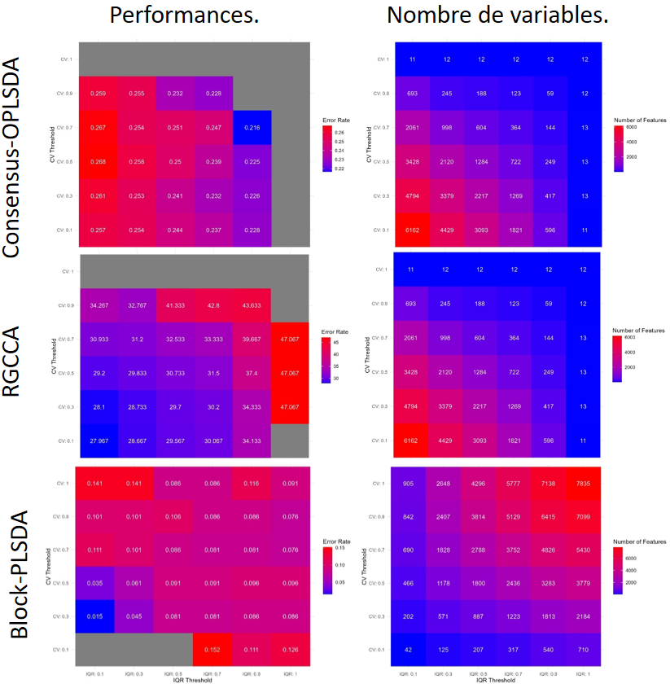
Évaluation des capacités discriminantes des modèles
En termes d’analyse discriminante, la RGCCA et la Consensus-OPLS sont équivalentes et semblent surpasser la block-PLSDA (Figure 3.2). Cependant, nous notons que DIABLO ne permet pas de visualiser l’ensemble des variables de manière globale, mais uniquement du point de vue d’un bloc de données à la fois. Cela présente l’avantage d’identifier le bloc le plus discriminant mais rend difficile la comparaison. En somme, les sorties de la Consensus-OPLS et de la RGCCA semblent offrir les meilleures performances selon l’indice de Calinski-Harabasz (CH).
Visualisation des données
Les packages RGCCA et mixOmics proposent de visualiser les variables dans un espace factoriel sous la forme d’un circular plot (Figure 3.3 b et c). Cela nous permet d’observer les groupes de variables corrélées entre chaque bloc. Cependant, avec un nombre élevé de variables, la lecture et l’interprétation deviennent difficiles. Le package ConsensusOPLS, quant à lui, ne permet pas d’appréhender cette idée de corrélation entre les variables, mais il fournit l’importance de chaque variable de chaque bloc par rapport au modèle, selon leurs valeurs VIP et loading (Figure 3.3 a).
![Figure 3.2 – Évaluation des capacités discriminantes des modèles. a. Diagramme de dispersion selon chacun des blocs du modèle Block-PLSDA de DIABLO. b. Diagramme de dispersion du modèle Consensus-PLSDA sur la première composante orthogonale et la première composante prédictive. c. Diagramme de dispersion du modèle RGCCA selon les deux premières composantes. d. Distribution des scores CH de DIABLO (sur les trois que constitue le modèle). Il existe une différence entre chacun de ces groupes (test de Kruskal-Wallis, p-value = 1,082.10−05 , dl = 2 - suivi d’un test de comparaison par paire de Wilcoxon)](images/baeldung-25_1.png)
MixOmics propose de visualiser la relation entre les variables dans un réseau de corrélation (Figure 1.18). Toutefois, comme précédemment, plus le nombre de variables est élevé, plus l’interprétation devient difficile. Néanmoins, cela a l’avantage de mettre en évidence la notion de relation tri-partite entre les différentes variables que nous évoquions dans les objectifs de MICROBIOMIQ et COMBO.
Choix du modèle
Notre choix s’est finalement porté sur la Block-PLSDA du pipeline DIABLO car cette méthode offre des performances satisfaisantes, comparables à celles de la RGCCA, tout en permettant une meilleure flexibilité dans la sélection des variables. En effet, la Block-PLSDA a démontré une capacité à gérer un plus grand nombre de variables tout en maintenant un taux d’erreur inférieur à 5 %, ce qui est crucial pour notre approche exploratoire.
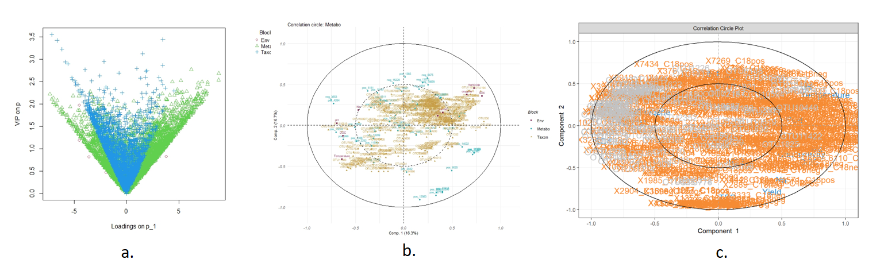
En comparaison, bien que la RGCCA rejette automatiquement les variables non discriminantes, ce qui simplifie l’analyse, elle ne permet pas d’explorer pleinement la richesse des données disponibles. Les modèles les plus performants de la RGCCA contiennent un nombre très limité de variables, ce qui peut restreindre notre capacité à répondre à la question biologique de départ. De plus, la Block-PLSDA permet de créer un réseau de corrélation qui met en évidence les relations entre les différentes variables, pour comprendre la structure des données et les interactions potentielles entre les facteurs environnementaux et les réponses biologiques. Cette visualisation des relations tri-partites entre les variables est particulièrement pertinente dans le contexte de notre étude, où nous cherchons à explorer les influences complexes des facteurs environnementaux sur les communautés microbiennes et les métabolites.
On peut noter que DIABLO propose, via un autre algorithme (Block-(s)PLSDA), un outil de sélection de variables, qui dans certains cas peut grandement améliorer le modèle et son interopérabilité, mais cette sélection réduit considérablement le nombre de variables. Dans la mesure où nous cherchons à explorer nos données le plus largement possible, la Block-PLSDA a été privilégiée. Le pipeline d’entraînement du modèle est donné en annexe 1.15.
Benchmark du modèle block-PLSDA
Une fois l’algorithme multibloc sélectionné, nous avons entrepris de tester d’autres méthodes de filtration et de normalisation.
Test de méthodes de sélection et de scaling sur le modèle Block-PLSDA
Bien que la double filtration par CV et IQR, associée à la normalisation par la médiane, la transformation cube root et scaling basée sur Pareto, nous ait permis de créer différents modèles assez satisfaisants en termes de performance, le nombre de variables en sortie d’un modèle performant était encore un peu limité au regard des objectifs d’identifier le maximum de lien entre métabolites, paramètres environnementaux, physiologie et microbes. Nous avons alors testé d’autres méthodes (indice CH, freqCut, Kruskal-Wallis, indice de kurtosis, Uniquecut et VIP), où, dans chaque cas, nous avons sélectionné les meilleures variables, celles supérieures au 75e percentile (Figure 3.4).
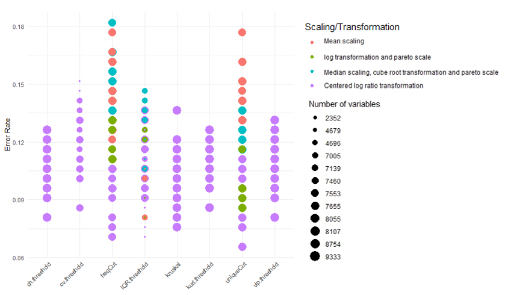
Globalement nous pouvons observer une influence réelle des méthodes de filtration et de la normalisation/transformation/scaling sur les performances du modèle (test de Kruskal-Wallis, p-value < 2,607.10⁻¹¹, dl = 7). Les résultats montrent qu’indépendamment des méthodes de sélection utilisées, l’application de la CLR garantit un modèle capable d’apprendre, bien que le taux d’erreur varie en fonction de la méthode de sélection choisie. La sélection par IQR garantit le plus souvent un modèle, indépendamment du scaling. Cependant, la combinaison de freqcut-CLR assure d’obtenir le meilleur modèle, avec ici un taux d’erreur moyen de 10 % et 8 107 variables sélectionnées dans le cas du jeu de données MICROBIOMIQ.
Application à MICROBIOMIQ
Après filtration et normalisation par la combinaison freqcut-CLR, 17 paramètres environnementaux, 6128 métabolites et 1955 taxon ont été conservés (Figure ??). L’application du CLR a globalement permis de centrer toutes les valeurs autour de la moyenne et de la médiane pour les blocs métabo et OTU, mais on notera la présence de quelques outliers dans le bloc Env, cela tient au fait qu’au vu de la taille de ce bloc, aucune filtration n’a été appliquée.
Le modèle Block-PLSDA ainsi produit a été entraîné avec 4 composantes et présente un AUC de 0,95 en moyenne pour le bloc Env, 0,98 pour le bloc Metabo et 0,97 pour le bloc OTU (Figure 3.6).
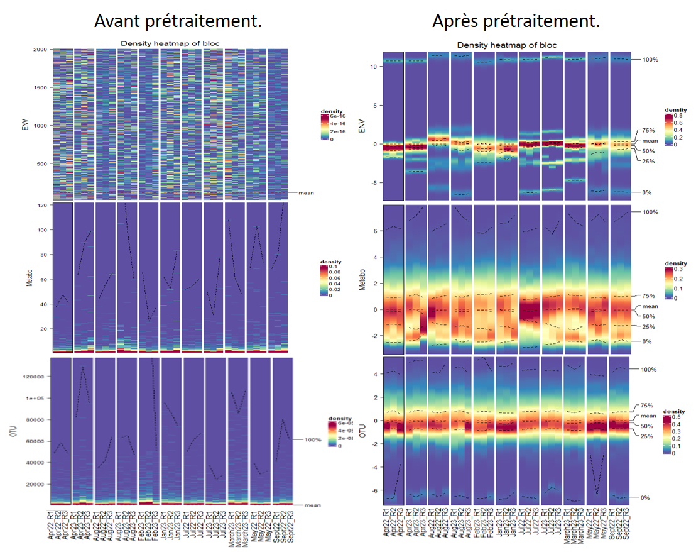
La figure 3.7 présente les résultats des analyses discriminante (PLS-DA) pour chacun des blocs ainsi que l’évolution de la silhouette en fonction du nombre de clusters. On constate que 8 à 10 groupes se dégagent entre les blocs pour les 11 classes uniques à prédire. Le bloc Metabo possède 8 groupes distincts, qui, contrairement à ce que l’on aurait supposé, ne regroupent pas parfaitement les 8 mois de prélèvement. Certains mois présentent des similarités dans leur profil métabolique, comme les mois d’Avril, Mai et Juillet 2022, ainsi que les mois de Mars, Avril et Juillet 2023. Les blocs Env et OTU ont tous deux 10 groupes, mais ces groupes sont mieux discriminés dans le bloc Env (avec un score de silhouette de 0,85). Dans le premier cas, le mois de Juillet 2022 est similaire aux mois de Mai 2022. Dans l’autre, certains réplicats de certains mois se rapprochent d’autres, comme le 2e réplicat du mois de Mai 2022 qui se rapproche des mois d’Avril 2022 et 2023, et le 3e réplicat du mois de Février 2023 qui est proche du mois de Janvier 2023.
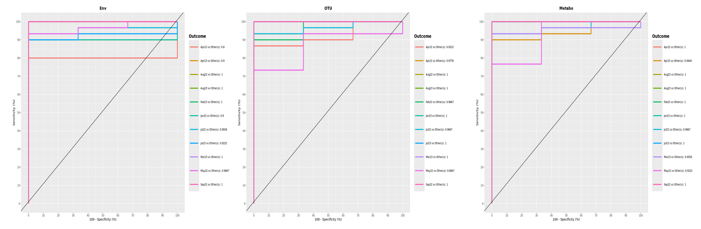
Ces résultats indiquent qu’il y a une variation au fil des mois, bien que cela ne soit pas suffisant pour conclure à une différence entre les deux années. De plus, en observant les similitudes entre certains mois, on peut en déduire que cette variation semble moins marquée que celle observée d’un mois à l’autre. Cela suggère qu’il pourrait y avoir un effet de saisonnalité.
Ces résultats semblent aller dans le sens des travaux de Paix et al. (2021) [8], qui soulignent également l’importance des variations saisonnières dans la composition du microbiote et du métabolome. L’asymétrie observée dans l’analyse multi-bloc rejoint les observations des travaux de Paix et al. selon lesquelles les communautés microbiennes et le méta-métabolome ne sont pas synchrones et peuvent varier en fonction de divers facteurs environnementaux.
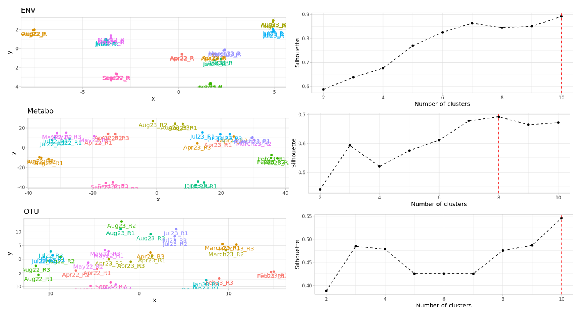
Pour pouvoir représenter visuellement l’effet de ces différents facteurs, nous avons eu recours à un réseau de corrélation, construit à partir du modèle multi-bloc. En excluant les corrélations inférieures à 0,7, nous obtenons un réseau de 993 nœuds et 11 320 arêtes. En appliquant un clustering (algorithme de Louvain), nous identifions 6 groupes dans ce réseau (Figure 3.8 a).
Une observation détaillée révèle que les facteurs environnementaux, tels que le nitrate (NO3) (Figure 3.8 b), influencent à la fois les métabolites et les OTUs, indirectement ou non. Par exemple, certains paramètres environnementaux peuvent affecter les OTUs, qui, à leur tour, peuvent modifier les profils métaboliques, ou vice versa. Ces interactions montrent que les facteurs environnementaux structurent les communautés microbiennes et leur fonctionnement. Selon Paix et al. (2021) [8], ces effets peuvent être directs (i.e. les facteurs influencent directement les OTUs), ou indirects (i.e. les OTUs réagissent aux changements environnementaux en modifiant les profils métaboliques). Plus globalement, cette mise en lien de l’environnement avec les OTUs illustre la plasticité phénotypique, dans le sens où un organisme peut être associé à différents métabolites selon les conditions environnementales, surtout lorsque les métabolites sont associés uniquement aux facteurs environnementaux sans que les taxons ne soient corrélés. À l’inverse, lorsque les taxons sont modulés par les facteurs environnementaux sans que les métabolites ne le soient, cela illustre le phénomène de redondance fonctionnelle. Ainsi, les résultats de notre réseau de corrélation montrent comment les facteurs environnementaux impactent les métabolites et les OTUs, s’inscrivant dans ce cadre plus large d’interactions complexes au sein du périphyton et de son environnement.
Ainsi, les résultats de notre réseau de corrélation, illustrent comment les facteurs environnementaux impactent les métabolites et les OTUs et s’inscrivent dans ce cadre plus large d’interactions complexes au sein du périphyton et son environnement.
Enfin, l’annotation des signaux a permis de réduire la taille du réseau à 179 nœuds et 485 arêtes (Figure annexe 1.19), ce qui facilite sa lecture et son interprétation. Cependant, la dernière filtration, qui a éliminé les nœuds présentant une corrélation inférieure à 0,7, soulève une interrogation : bien que cette approche vise à simplifier le réseau pour en améliorer la visibilité, elle peut également entraîner la suppression d’interactions importantes entre des métabolites faiblement corrélés. Ces interactions, bien que moins évidentes individuellement, pourraient avoir un effet synergique lorsqu’elles sont combinées. L’équilibre entre la clarté du réseau et la préservation des interactions pourrait être trouvé en diminuant le seuil de filtration.
Transposition du pipeline à COMBO
Dans ce projet, nous cherchons à étudier l’hétérogénéité spatiale des métabolites en fonction des paramètres environnementaux sur 78 prélèvements, correspondant à 39 sites échantillonnés au printemps et à l’automne 2024.
Résultats préliminaires
Notre pipeline devait nous permettre de caractériser les facteurs physico-chimiques contrôlant l’hétérogénéité métabolique entre ces 78 échantillons. Cependant, le modèle créé présentait un taux d’erreur de 87 %. Les courbes ROC des métabolites ont montré un AUC moyen de 0,62, avec 0,66 pour le bloc PAM, 0,71 pour la physico-chimie, et 0,5 pour la physico-chimie de l’agence de l’eau (Figure annexe 1.16). De telles performances peuvent s’expliquer par l’hétérogénéité intra-site des échantillons (notamment au niveau des métabolites) qui pourrait conduire à un recouvrement entre les sites avec une certaine homogénéité ; en effet, il semble exister très peu de différences entre les sites de prélèvement, mais nous pouvons observer une forte influence de la saisonnalité (Figure annexe 1.17 et figure 3.10).
Ordination via les paramètres physicochimiques
Afin de pallier ce problème, nous avons choisi de regrouper les échantillons en fonction de leur profil physico-chimique, ce qui nous a permis de constituer 7 classes. Le modèle obtenu par la suite présente un taux d’erreur moyen de 52 %. La courbe ROC a révélé un AUC de 0,78 pour la métabolomique, 0,63 pour le bloc PAM et 0,9 pour la physico-chimie (Figure annexe 1.20). Mais nous observons toujours une séparation entre les saisons, malgré l’ordination selon la physico-chimie des sites.
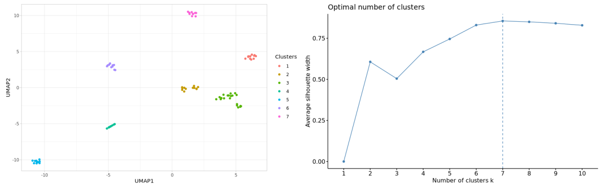
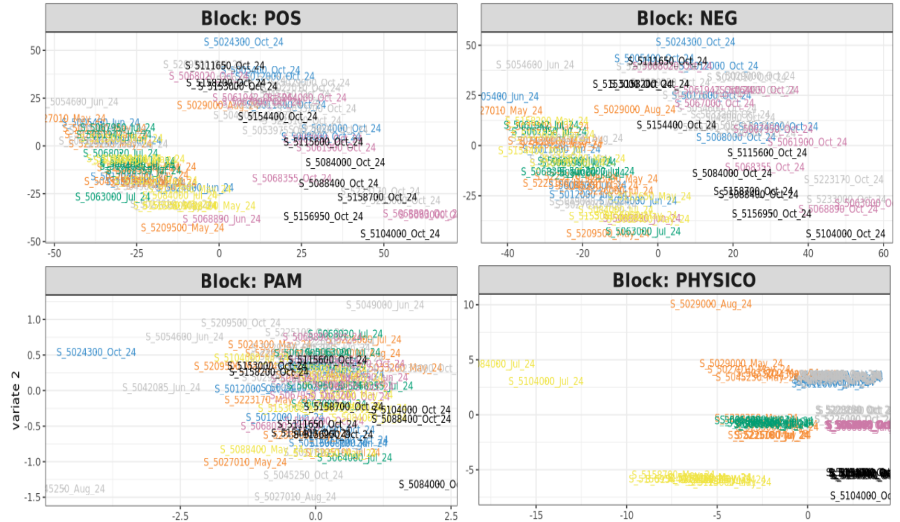
Conclusion
L’objectif de ce stage était de développer un pipeline d’analyse multi-bloc pour l’intégration de données hétérogènes. Pour ce faire, nous avons d’abord réalisé un benchmark de trois outils d’analyse multi-bloc : Consensus-OPLS, RGCCA et DIABLO. Ce benchmark a révélé que DIABLO est le mieux adapté à notre problématique, en raison de ses performances et de notre capacité à l’adapter au pipeline développé par Paix et al. (2019).
Dans un second temps, nous avons cherché à trouver la bonne combinaison de méthodes de filtration et scaling. Nous avons montré que l’indice freqCut pour la sélection, associé au centered log ratio (CLR) pour le scaling, permet d’obtenir un modèle alliant bonne performance (10 % d’erreur) et un nombre conséquent de variables (8 107).
L’application à MICROBIOMIQ, pour l’étude de l’hétérogénéité temporelle, a révélé que les métabolites et les OTUs peuvent adopter des profils similaires au cours d’une année, avec des redondances d’un mois sur l’autre. De plus, les facteurs environnementaux structurent les OTUs et les métabolites de manière indirecte, mais aussi de manière directe. Cela met en lumière des phénomènes de plasticité phénotypique, où un organisme peut être associé à différents métabolites, surtout lorsque ces métabolites sont liés uniquement aux facteurs environnementaux sans corrélation avec les taxons. À l’inverse, la redondance fonctionnelle se manifeste lorsque les taxons sont modulés par les facteurs environnementaux sans que les métabolites ne le soient.
L’application à COMBO pour l’étude de l’hétérogénéité spatiale, l’hétérogénéité intra-site des échantillons n’a pas permis de révéler l’hétérogénéité spatiale du périphyton. Là où le modèle pouvait atteindre un taux d’erreur aussi bas que 10 % avec MICROBIOMIQ, avec COMBO, ce taux atteint 87 %. Nous sommes parvenus à descendre à 52 % en faisant du clustering par la physico-chimiques. Mais cela reste malheureusement insuffisant pour conclure quant à l’influence de l’environnement sur le métabolisme du périphyton, au vu de l’influence beaucoup trop marquée de la saisonnalité.
Une piste à explorer sur COMBO serait d’étudier l’hétérogénéité spatiale au sein de chaque saison, ce qui permettrait d’isoler l’effet de la saisonnalité. Une autre approche, consisterait à explorer d’autres méthodes de traitement qui pourraient être mieux adaptées.
Au final, le pipeline que nous avons mis en place peut s’adapter à de nombreux types d’analyses multi-bloc, car au cours de ce stage, nous avons développé un panel d’outils assez large (de filtration, le scaling, la visualisation des blocs et l’entraînement des modèles) pouvant être repris et réagencé pour d’autres analyses. Cette versatilité constitue un objectif central dans la mesure où la compréhension du lien entre l’environnement et l’assemblage des communautés microbiennes sur le plan du métabolome et de la taxonomie reste à développer [16]. Aussi, peu d’études ont réussi à intégrer efficacement des données hétérogènes [23].
Annexe
Méthodologie des projets MICROBIOMIQ et COMBO
5.1 Sites d’Étude et Échantillonnage
Pour MICROBIOMIQ, un suivi longitudinal a été réalisé sur 1 an et demi sur l’étang de Gazinet basé sur une colonisation mensuelle sur lame de verre avec un total de 4 réplicats par mois (Fig : 1.11).

Pour COMBO, un total de 100 sites a été sélectionné pour l’étude, en tenant compte des données existantes sur la physico-chimie et l’état écologique selon la directive cadre sur l’eau (WFD) (Fig : 1.12).
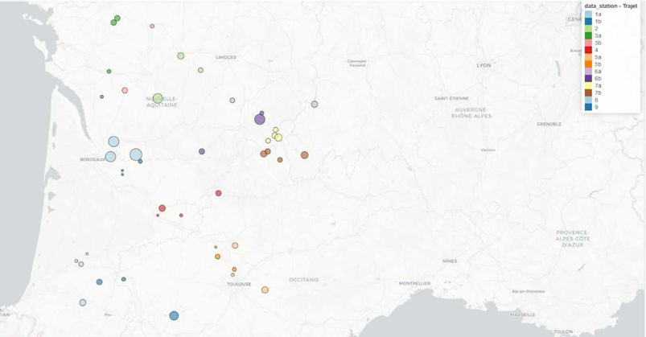
Dans ce projet, les échantillons de communautés périphytiques ont été collectés à partir de roches, avec un total de 4 réplicats par site. Dans les deux projets, les échantillons ont été immédiatement congelés dans de l’azote liquide pour stopper toute réaction enzymatique et ont ensuite été conservés à -80°C jusqu’analyse.
5.2 Acquisition des données omiques et autres
Les paramètres physico-chimiques de l’eau, tels que la température, le pH, la conductivité, l’oxygène dissous, et les micropolluants, ont mesurés en parallèle de l’échantillonnage du périphyton dans le cas de MICROBIOMIQ et de COMBO. Dans les cas de COMBO des données supplémentaires ont été collectées auprès de l’agence de l’eau Adour Garonne.
La production des données métagénomiques ont été réalisées par la Plateforme Génome Transcriptome de Bordeaux (PGTB). L’extraction de l’ADN a été réalisée en utilisant le kit Dneasy PowerBioFilm (Qiagen), suivie d’une quantification par fluorescence à l’aide du Qubit Flex (Thermo Fisher Scientific) après chaque extraction. Pour garantir la qualité des analyses, des témoins positifs ont été inclus à chaque étape de la mise en plaque en utilisant des mocks communautés fongiques et, bactériennes synthétiques à la composition connue. Les bibliothèques de séquençage pour les analyses métagénomiques ont été préparées en utilisant le kit Qiaseq FX (Qiagen). Les échantillons ont été ensuite séquencés sur une plateforme Illumina NovaSeq 6000, utilisant un protocole de 300 cycles (puce P3 en configuration de séquençage 2x150 pb). L’affectation taxonomique des séquences a été réalisée avec Kraken2, en utilisant la base de données NCBI RefSeq V208 non-redondante (nt) de 308 GB. L’estimation des proportions des taxons a été effectuée avec Bracken, permettant une quantification des organismes présents dans les échantillons au niveau du genre. Une étape de filtration a été effectuée, au cours de laquelle nous avons retiré les eucaryotes supérieurs et les virus. À la fin de ce processus, nous avons obtenu deux fichiers : le fichier d’abondance, le fichier de taxonomie.
Pour l’acquisition des données métabolomiques, nous avons utilisé une approche méta-métabolomique « non-ciblée » basée sur la spectrométrie de masse haute résolution (HRMS). L’extraction des métabolites a été effectuée en utilisant une méthode d’extraction biphasique permettant l’obtention d’une fraction hydrophile (Methanol/H20) et d’une fraction lipophile (Methyl tert-butyl ether /Methanol). Dans le cadre de cette étude, seule la phase hydrophile a été analysée par chromatographie en phase liquide couplée à la spectrométrie de masse (LC-HRMS) sur un instrument Thermo Fisher Q Exactive Orbitrap. L’acquisition a été réalisée de manière à permettre une fragmentation des cinq ions (MS1) les plus intenses en vue d’acquérir de l’information structurale via l’utilisation de base de données spectrales (MS2) ou des logiciels de prédiction basés sur du machine learning tels que SIRIUS. Les données ainsi acquises ont été traitées avec le logiciel MS-DIAL5 permettant d’obtenir une matrice contenant l’intensité des signaux dans les différents échantillons et pour chacun de ces signaux l’ensemble des ions décrivant les spectres de masse MS1 et MS2. Cette liste de signaux a ensuite été corrigée/filtrée pour la présence/absence des signaux (conservation des signaux présent dans plus de 75 % des échantillons), la dérive du signal (CV < 30 % pour les pool d’échantillons), l’intensité des signaux (intensité échantillons > 10 fois celle dans les blancs). Les informations spectrales ont ensuite été utilisées pour procéder à l’annotation des signaux à l’aide du logiciel SIRIUS et plus spécifiquement le système de classification NPClassifier. Ce dernier consiste en 3 niveaux de classification : « pathway », « superclass » et « class » qui ont permis une comparaison avec classification taxonomique. Au final, nous avons obtenue 2 fichiers, l’un contenant l’intensité des signaux et l’autre leur annotation.
L’activité photosynthétique sera évaluée à l’aide d’un PhytoPAM, qui mesurera le rendement photosynthétique et la concentration de chlorophylle a. Les échantillons seront préparés en grattant les biofilms et en les remettant en suspension dans l’eau de l’étang avant les mesures.
Double filtration VIP et loading du modèle Consensus-OPLS
La Figure annexe 1.13 montre chacun des échantillons de chaque bloc en fonction de leur VIP et loading. Nous avons fait l’hypothèse qu’en sélectionnant les variables selon leur VIP et leur loading, en passant en amont par un modèle simple bloc, nous arriverions à améliorer le modèle, comme le suggèrent Mishra et al. (2021) [27].
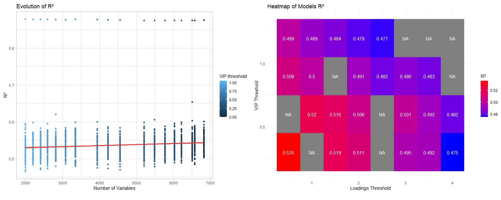
Les résultats suggèrent que le modèle Consensus-OPLS semble très peu sensible au nombre de variables et que, globalement, nous restons aux alentours d’un R² de 0,5.
Modèle Block-PLSD et Block-(s)PLSDA
Le modèle Block-(s)PLSDA permet de sélectionner selon un modèle sparse Generalised Canonical Correlation Analysis (SGCCA) qui inclut une pénalisation par lasso sur les vecteurs afin d’identifier un sous-ensemble de variables clés. Cependant, sur nos jeux de données, cette sélection ne semble pas grandement améliorer les performances du modèle (Figure annexe 1.14) (test de Kruskal Wallis p-value = 0.956, df = 1). La figure annexe 1.15 illustre les étapes à suivre pour l’entraînement de ces modèles.
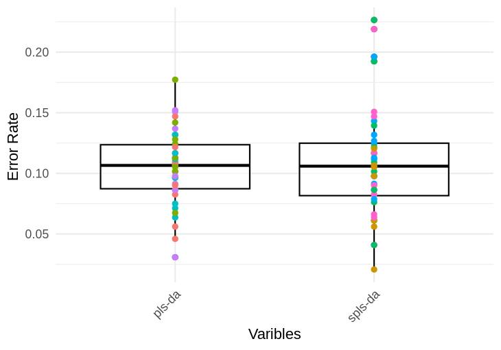
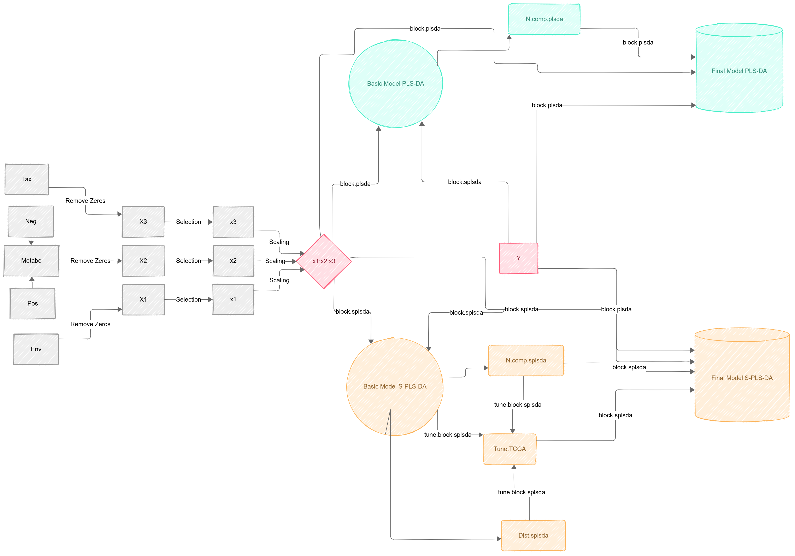
Évaluation du modèle avec les données de COMBO (ROC)
Le modèle Block-PLSDA a de mauvaises performances (taux d’erreur supérieur à 87%) comme l’illustre la ROC 1.16). Ces performances peuvent s’expliquer par l’homogénéité spatiale entre sites et l’influence des saisons comme le montre la projection UMAP des données (Figure annexe 1.17). Une influence que l’ordination par les paramètres physico-chimiques n’a pas pu effacer (Figures annexe 3.10 et 1.20).
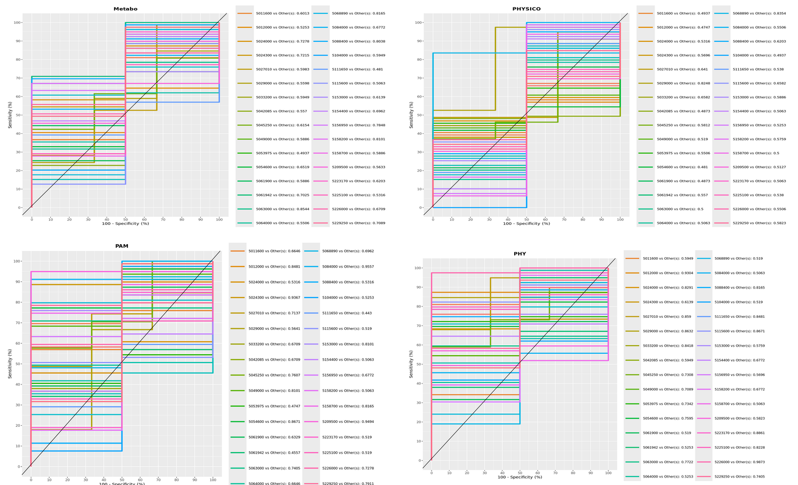
Sortie graphique et annotation
Pour mettre en évidence (de façon visuelle) les relations entre les
différentes variables des blocs de notre jeu de données, nous avons opté
pour une représentation en réseau, notamment grâce à la fonction
network() du package mixOmics (Figure annexe 1.18).
Cependant, la sortie graphique de cette fonction devient difficilement
lisible lorsque nous sélectionnons plusieurs centaines (voire quelques
milliers) de variables. Nous avons donc retravaillé cette sortie pour
proposer celle en (Figure 3.8) et celle en (Figure annexe 1.19), qui est
la version avec tous les signaux métaboliques et les OTUs annotés.
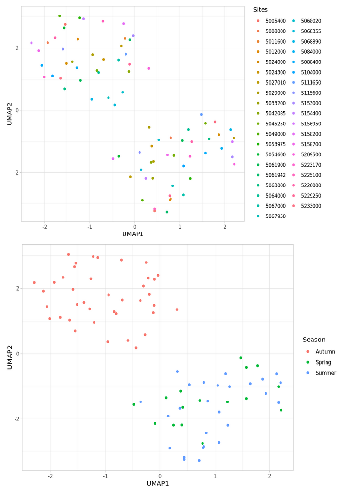
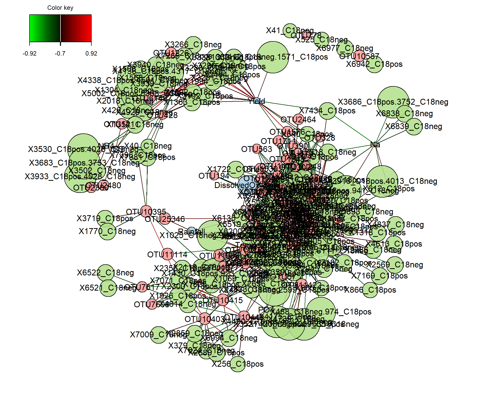
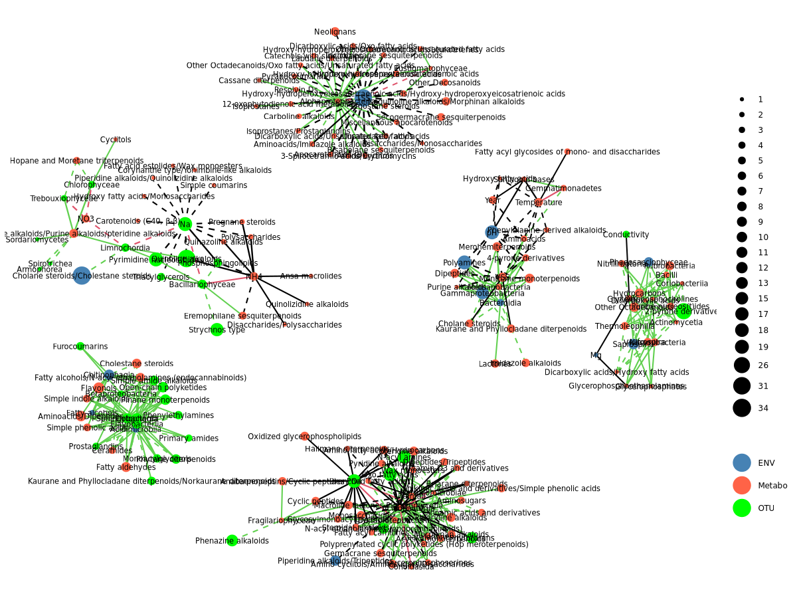
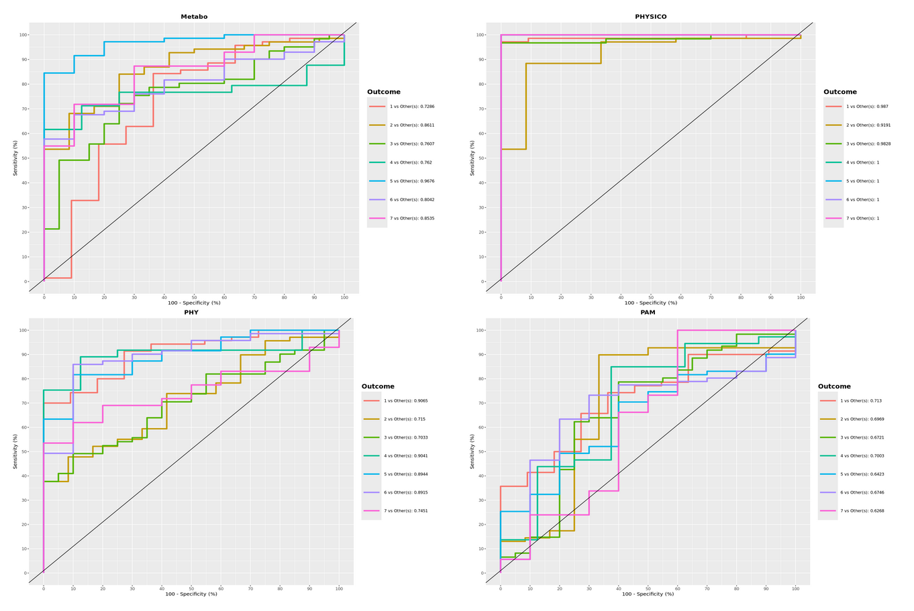
Bibliographie
[1] S. H. H. Anuar, Z. A. Abas, N. M. Yunos, N. H. M. Zaki, N. A. Hashim, M. F. Mokhtar, and A. F. Nizam. Comparison between louvain and leiden algorithm for network structure : a review. In Journal of Physics : Conference Series, volume 2129, page 012028. IOP Publishing, 2021.
[2] K. P. Balanda and H. L. MacGillivray. Kurtosis : a critical review. The American Statistician, 42(2) :111–119, 1988.
[3] et al. Baum. Multiblock pls : Block dependent prediction modeling for python. Journal of Open Source Software, 4(34) :1190, 2019.
[4] M. Bersanelli, E. Mosca, D. Remondini, et al. Methods for the integration of multi-omics data : mathematical aspects. BMC Bioinformatics, 17(Suppl 2) :S15, 2016.
[5] J. Boccard and D. N. Rutledge. A consensus orthogonal partial least squares discriminant analysis (opls-da) strategy for multiblock omics data fusion. Analytica Chimica Acta, 769 :30–39, 2013.
[6] A. Cambiaghi, M. Ferrario, and M. Masseroli. Analysis of metabolomic data : tools, current strategies and future challenges for omics data integration. Briefings in Bioinformatics, 18(3) :498–510, 2017.
[7] M. P. Campos and M. S. Reis. Data preprocessing for multiblock modelling – a systematization with new methods. Chemometrics and Intelligent Laboratory Systems, 199 :103959, 2020.
[8] N. Carriot, B. Paix, S. Greff, B. Viguier, J.-F. Briand, and G. Culioli. Integration of lc/ms-based molecular networking and classical phytochemical approach allows in-depth annotation of the metabolome of non-model organisms - the case study of the brown seaweed taonia atomaria. Talanta, 225 :121925, 2021.
[9] E. Catelli, Z. Li, G. Sciutto, P. Oliveri, S. Prati, M. Occhipinti, A. Tocchio, R. Alberti, T. Frizzi, C. Malegori, and R. Mazzeo. Towards the non-destructive analysis of multilayered samples : A novel xrf-vnir-swir hyperspectral imaging system combined with multiblock data processing. Analytica Chimica Acta, 1239 :340710, 2023.
[10] R.R.S. Correia, M.R. Miranda, and J.R.D. Guimarães. Mercury methylation and the microbial consortium in periphyton of tropical macrophytes : Effect of different inhibitors. Environmental Research, 112 :86–91, 2012.
[11] N. Creusot, B. Chaumet, M. Eon, et al. Metabolomics insight into the influence of environmental factors in responses of freshwater biofilms to the model herbicide diuron. Environmental Science and Pollution Research, 29 :29332–29347, 2022.
[12] J.F. Ghiglione, F. Martin Laurent, and S. Pesce. Microbial ecotoxicology : an emerging discipline facing contemporary environmental threats. Environmental Science and Pollution Research, 23(5) :3981–3983, 2016.
[13] H. Guasch, M. Ricart, J. Lopez Doval, C. Bonnineau, L. Proia, et al. Influence of grazing on triclosan toxicity to stream periphyton. Freshwater Biology, 61(12) :2002–2012, 2016.
[14] Y.I. Gubelit and H.-P. Grossart. Frontiers in microbiology. 11 :1275, 2020.
[15] Yehudit Hasin, Marcus Seldin, and Aldons Lusis. Multi-omics approaches to disease. Genome biology, 18 :1–15, 2017.
[16] J. Hellal, L. Barthelmebs, A. Bérard, A. Cébron, G. Cheloni, S. Colas, C. Cravo-Laureau, C. De Clerck, N. Gallois, M. Hery, F. Martin-Laurent, J. Martins, S. Morin, C. Palacios, S. Pesce, A. Richaume, and S. Vuilleumier. Unlocking secrets of microbial ecotoxicology : recent achievements and future challenges. FEMS Microbiology Ecology, 99(10) :fiad102, 2023.
[17] P. Hieter and M. Boguski. Functional genomics : It’s all how you read it. Science, 278 :601–602, 1997.
[18] M. Kuhn, J. Wing, S. Weston, A. Williams, C. Keefer, A. Engelhardt, T. Cooper, Z. Mayer, B. Kenkel, and R Core Team. R package, 2010.
[19] F. Larras, B. Montuelle, F. Rimet, et al. Seasonal shift in the sensitivity of a natural benthic microalgal community to a herbicide mixture : impact on the protective level of thresholds derived from species sensitivity distributions
RobotGoWest : Vers une interprétation des signaux électrophysiologiques végétaux par intelligence artificielle
Résumé
Ce projet vise à développer les fondations biologiques pour un robot autonome capable de suivre la lumière solaire. Il s’agit d’une étude de preuve de concept sur la Monstera deliciosa, dont l’objectif est de démontrer que ses signaux électrophysiologiques contiennent une information exploitable pour distinguer les périodes de jour et de nuit. Après l’acquisition de 167 heures de données via un réseau de 8 capteurs, nous avons mis en place un pipeline complet incluant le filtrage des artefacts électriques, une analyse statistique multivariée (ANOVA, UMAP) et l’implémentation d’un réseau de neurones convolutifs (EEGNet). Les résultats préliminaires confirment la présence d’une signature circadienne dans les signaux végétaux, validant ainsi la faisabilité d’une interface plante-machine pour la navigation robotique, bien que des travaux supplémentaires soient nécessaires pour finaliser la robustesse du modèle de classification.
Détail
Introduction
Le projet RobotGoWest ambitionne de concevoir un robot mobile capable de s’orienter vers la lumière solaire en s’inspirant des mécanismes biologiques des plantes. L’objectif central de cette étude est de développer un réseau de neurones capable de décoder les signaux électrophysiologiques émis par une Monstera deliciosa pour distinguer avec précision les périodes d’ensoleillement de celles d’obscurité. En tant que preuve de concept, ce travail vise à valider la faisabilité d’un pipeline d’analyse de données brutes issues de capteurs végétaux et à démontrer que ces signaux contiennent une information exploitable pour classifier l’état lumineux de la plante.
Acquisition et prétraitement des signaux
Protocole expérimental et collecte de données
L’expérience s’est déroulée sur une période de deux semaines en mai 2026, avec des enregistrements répartis sur deux séquences distinctes (45 heures et 122 heures), totalisant environ 167 heures de données. Huit électrodes ont été positionnées sur divers organes de la plante : quatre sur des parties aériennes (tiges, pétioles) et deux sur le sol pour les racines. Cette configuration permet de capturer une diversité de potentiels électrophysiologiques au sein de la plante.
| Capteur | Position sur la plante | Type d’organe |
|---|---|---|
| 1 | Tige | Aérien |
| 2 | Racine (Sol) | Souterrain |
| 3 | Tige | Aérien |
| 4 | Pétiole | Aérien |
| 5 | Pétiole | Aérien |
| 6 | Tige | Aérien |
| 7 | Pétiole | Aérien |
| 8 | Racine (Sol) | Souterrain |
Tableau 1 : Positionnement des capteurs sur la plante
Les données brutes, numérisées avec une fréquence d’échantillonnage de 250 Hz, ont été segmentées en échantillons de 512 points (environ 2 secondes), labellisés manuellement selon les heures de lever et de coucher du soleil. Après nettoyage, le jeu de données final comprend près de 290 000 échantillons, stockés sous forme de tableaux numpy de dimensions \([1, 8, n]\).
Filtrage et nettoyage du signal
L’analyse des données brutes a révélé la présence d’artefacts significatifs, notamment un pic dominant à 50 Hz et ses harmoniques (150 Hz, 250 Hz), probablement dus au réseau électrique environnant. De plus, une forte variabilité a été observée lors des premières minutes d’enregistrement, attribuée au stress provoqué par l’insertion des électrodes.
Pour pallier ces nuisances, un filtre coupe-bande (notch filter) a été appliqué pour supprimer la fréquence de 50 Hz et ses harmoniques. Bien que ce filtrage ait permis de réduire le bruit global, il n’a pas totalement éliminé les interférences, notamment le pic à 250 Hz. Une étape cruciale a ensuite consisté à normaliser les signaux en utilisant les données des capteurs 2 et 8 (placés dans le substrat), qui servent de référence de bruit de fond, améliorant ainsi la clarté du signal biologique propre.
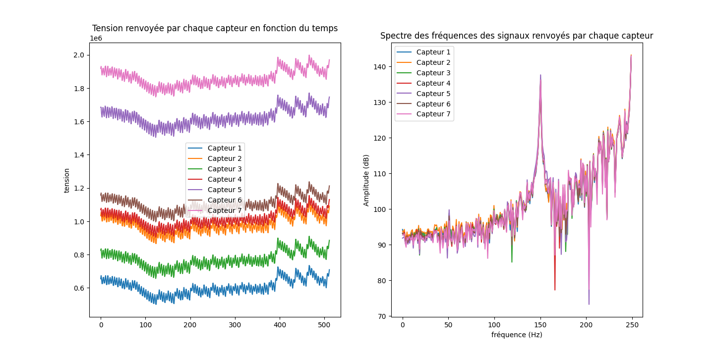
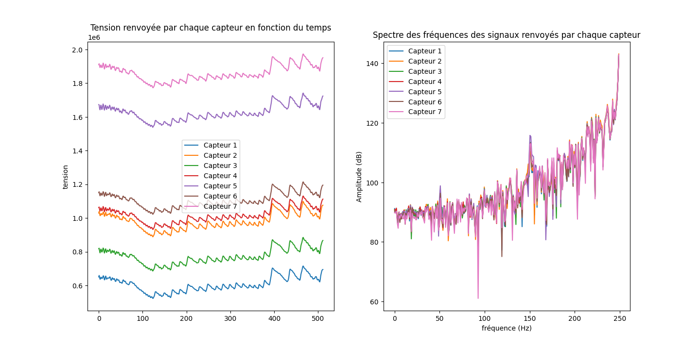
Fig 1: Échantillon brute de jour (en haut) et après filtration à 50Hz (Q = 30.0) (en bas)
Analyse statistique et exploration des données
Validation des différences interclasses
Une analyse statistique via l’ANOVA a permis de confirmer l’existence de différences significatives entre les signaux enregistrés durant le jour et ceux de la nuit (\(p \ll 0.05\)). Le coefficient de variation calculé sur les échantillons montre une variabilité marquée entre les différents capteurs, suggérant que la position de l’électrode influence la nature de l’information recueillie. Après filtrage, la valeur F de l’ANOVA augmente considérablement, indiquant que le rapport signal sur bruit s’est amélioré.
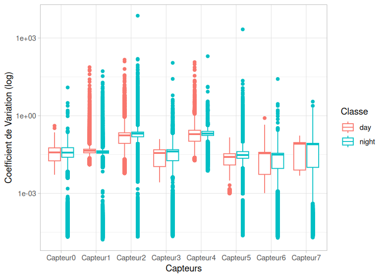
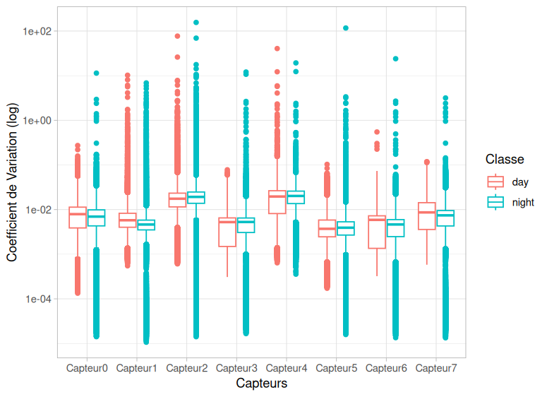
Fig 2: Évolution du coefficient de variation des échantillons entre le jour et la nuit et par capteur. En haut avant filtration, en bas après filtration des 50 Hz (Q=1.0)
Visualisation par UMAP
Pour explorer la structure des données sans les réduire excessivement, une projection UMAP (Uniform Manifold Approximation and Projection) a été réalisée sur les vecteurs de dimension 512 et sur leurs transformées de Fourier rapides (FFT). Les résultats initiaux sur les données brutes n’ont montré aucune séparation claire entre les classes. Cependant, après normalisation par le capteur 8 et filtrage, une meilleure séparation des clusters est observable, bien qu’un chevauchement important persiste.
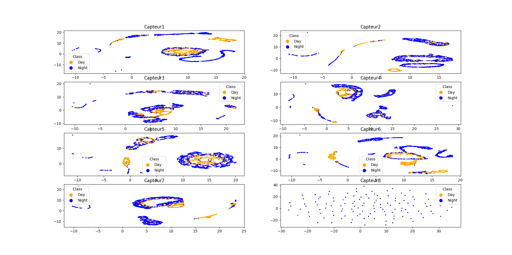
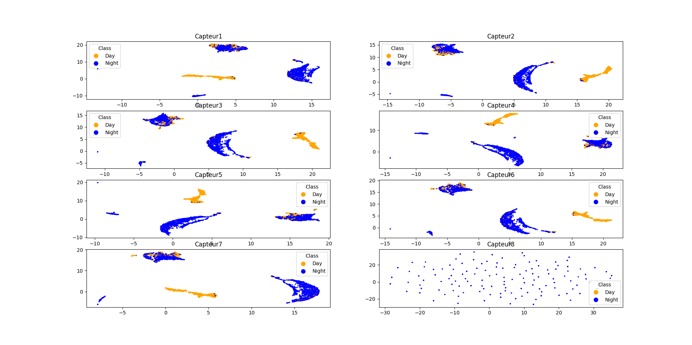
Fig 3: Projection UMAP sur 3000 échantillons (en haut) et sur la FFT (en bas) normalisé par le capteur 8.
L’hypothèse formulée est que les phases de transition (aurore et crépuscule) introduisent une ambiguïté dans la labellisation. En excluant ces périodes de 4 heures autour du lever et du coucher du soleil, la séparation entre les classes “jour” et “nuit” devient nettement plus distincte, confirmant que le signal végétal porte bien une information circadienne exploitable.
Modélisation par réseau de neurones
Pour classifier ces signaux, nous avons implémenté un réseau de neurones convolutifs compact (CNN), inspiré de l’architecture EEGNet proposée par Lawhern et al. en 2018. Ce modèle a été adapté aux spécificités de nos données : 8 canaux d’électrodes et une longueur de signal de 512 échantillons.
L’architecture comprend une couche de convolution 2D pour l’extraction de caractéristiques temporelles, suivie d’une convolution par profondeur pour capturer les relations spatiales entre les électrodes. Des couches de normalisation par lot (Batch Normalization) et de régularisation (Dropout) ont été intégrées pour stabiliser l’apprentissage et prévenir le surapprentissage. Le réseau se termine par une couche dense et une fonction d’activation sigmoïde pour la classification binaire (jour/nuit).
import torch
import torchvision
import torch.nn as nn
import torch.optim as optim
from torch.utils.data import DataLoader, TensorDataset
from torchmetrics import Accuracy
### SET MODEL SPECIFICATIONS ###
fs= 250 #sampling frequency
channel= 8 #number of electrode
num_input= 1 #number of channel picture (for EEG signal is always : 1)
num_class= 2 #number of classes
signal_length = 512 #number of sample in each tarial
F1= 8 #number of temporal filters
D= 3 #depth multiplier (number of spatial filters)
F2= D*F1 #number of pointwise filters
kernel_size_1= (1,round(fs/2))
kernel_size_2= (channel, 1)
kernel_size_3= (1, round(fs/8))
kernel_size_4= (1, 1)
kernel_avgpool_1= (1,4)
kernel_avgpool_2= (1,8)
dropout_rate= 0.5
ks0= int(round((kernel_size_1[0]-1)/2))
ks1= int(round((kernel_size_1[1]-1)/2))
kernel_padding_1= (ks0, ks1-1)
ks0= int(round((kernel_size_3[0]-1)/2))
ks1= int(round((kernel_size_3[1]-1)/2))
kernel_padding_3= (ks0, ks1)
### DESIGN MODEL ###
class EEGNet(nn.Module):
def __init__(self):
super().__init__()
# layer 1
self.conv2d = nn.Conv2d(num_input, F1, kernel_size_1, padding=kernel_padding_1)
self.Batch_normalization_1 = nn.BatchNorm2d(F1)
# layer 2
self.Depthwise_conv2D = nn.Conv2d(F1, D*F1, kernel_size_2, groups= F1)
self.Batch_normalization_2 = nn.BatchNorm2d(D*F1)
self.Elu = nn.ELU()
self.Average_pooling2D_1 = nn.AvgPool2d(kernel_avgpool_1)
self.Dropout = nn.Dropout2d(dropout_rate)
# layer 3
self.Separable_conv2D_depth = nn.Conv2d( D*F1, D*F1, kernel_size_3, padding=kernel_padding_3, groups= D*F1)
self.Separable_conv2D_point = nn.Conv2d(D*F1, F2, kernel_size_4)
self.Batch_normalization_3 = nn.BatchNorm2d(F2)
self.Average_pooling2D_2 = nn.AvgPool2d(kernel_avgpool_2)
# layer 4
self.Flatten = nn.Flatten()
self.Dense = nn.Linear(F2*round(signal_length/34), num_class)
self.Sigmoid = nn.Sigmoid()
def forward(self, x):
# layer 1
y = self.Batch_normalization_1(self.conv2d(x))
# layer 2
y = self.Batch_normalization_2(self.Depthwise_conv2D(y))
y = self.Elu(y)
y = self.Dropout(self.Average_pooling2D_1(y))
# layer 3
y = self.Separable_conv2D_depth(y)
y = self.Batch_normalization_3(self.Separable_conv2D_point(y))
y = self.Elu(y)
y = self.Dropout(self.Average_pooling2D_2(y))
# layer 4
y = self.Flatten(y)
y = self.Dense(y)
y = self.Sigmoid(y)
return yBien que le pipeline soit opérationnel et que les visualisations UMAP suggèrent une séparation des classes, l’entraînement complet du modèle et l’évaluation de sa précision finale sont en cours. Les résultats préliminaires sur la qualité des données filtrées et normalisées sont encourageants pour la suite du projet.
Conclusion
Ce projet de preuve de concept a permis de valider la faisabilité technique de l’extraction et du prétraitement de signaux électrophysiologiques végétaux. Nous avons démontré que, malgré le bruit ambiant et les artefacts expérimentaux, il est possible d’isoler des variations périodiques liées au cycle jour/nuit de la Monstera deliciosa. L’analyse statistique et la visualisation par UMAP confirment la présence d’une structure exploitable dans les données, notamment après normalisation par les capteurs de sol.
Le projet RobotGoWest reste en cours. Les prochaines étapes consisteront à finaliser l’entraînement du réseau de neurones sur le jeu de données nettoyé, à évaluer rigoureusement ses performances de classification et à envisager l’intégration de ce module de détection dans le système de contrôle du robot. La robustesse de cette approche face à des conditions environnementales variables et sur le long terme constitue le défi majeur à relever pour transformer cette preuve de concept en une technologie fonctionnelle.
Voici une proposition d’article structuré pour votre portfolio, mettant en valeur votre rôle d’encadrement et d’analyse technique.
Conception d’une balance de ruche connectée hybride : Synthèse d’analyse et d’encadrement technique
2025
Auteurs: Fatoumata THIAM, Ghita BOURAKKADI
IDRISSI, Jhodi Avizara
Résumé
Ce projet, réalisé dans le cadre d’un stage au FabLab Coh@bit de l’Université de Bordeaux, visait à concevoir une balance de ruche connectée optimisée en fusionnant les forces de deux plateformes existantes : l’architecture mécanique robuste du système OpenHive (OpenBeeLab) et la fiabilité électronique avancée de la plateforme Mellia. En tant qu’encadrant technique, la mission principale a consisté à analyser les architectures hétérogènes de ces deux systèmes, à en identifier les limites respectives et à proposer une solution hybride combinant précision de mesure (cellule de charge 24 bits, capteurs environnementaux BME680/SHT20) et robustesse mécanique (système motorisé de calibration). Le travail a abouti à la production de schémas fonctionnels détaillés, à une comparaison technique approfondie et à une proposition d’amélioration du PCB intégrant une communication LoRaWAN pour une autonomie énergétique et une portée accrues.
Détails
Introduction
Contexte et enjeux
L’agriculture connectée (smart agriculture) transforme profondément les pratiques apicoles en permettant une surveillance continue des colonies sans perturbation physique. Les ruches connectées jouent un rôle crucial dans le suivi de la biodiversité, de la production de miel et de la détection précoce de stress environnementaux ou sanitaires. Cependant, l’existant se heurte souvent à un compromis difficile entre la précision des mesures, la robustesse mécanique nécessaire à l’extérieur et la consommation énergétique.
Problématique
Deux solutions open source majeures coexistent au sein du FabLab Coh@bit sans être pleinement intégrées : la plateforme Mellia, qui excelle par son électronique de mesure haute précision (ADC 24 bits, capteurs multiples, communication LoRa), et la plateforme OpenBeeLab, qui repose sur une mécanique ingénieuse mais une électronique moins performante (ADC 10 bits, communication WiFi). La problématique centrale de ce projet s’est donc formulée ainsi : Comment concevoir une balance de ruche connectée combinant la robustesse mécanique du système OpenHive et la fiabilité électronique de la plateforme Mellia afin d’obtenir une solution plus précise, économique et adaptée à la surveillance des colonies d’abeilles ?
Objectifs et rôle
L’objectif principal était de réaliser une analyse technique comparative pour définir une architecture unifiée. Mon rôle consistait à : * Analyser les architectures matérielles et logicielles des deux plateformes. * Comprendre les contraintes énergétiques, environnementales et d’intégration. * Proposer une solution d’amélioration de la carte électronique et du firmware. * Assurer l’encadrement méthodologique et technique pour la convergence des deux approches.
Analyse technique et comparaison des architectures
La plateforme OpenHive (OpenBeeLab) : Robustesse mécanique
La balance OpenHive repose sur un principe de pesée par équilibre de levier. Un moteur pas à pas (28BYJ-48) déplace un contrepoids jusqu’à l’équilibre, détecté par un capteur optique (TCST2103). * Points forts : Conception mécanique simple et robuste, permettant de s’affranchir de la déformation directe de cellules de charge. * Limites : Utilisation d’un microcontrôleur ESP8266 avec communication WiFi (consommation élevée, portée limitée) et d’un convertisseur analogique-numérique (ADC) de 10 bits, offrant une précision de mesure insuffisante pour détecter les variations fines de poids.
La plateforme Mellia : Précision électronique
La plateforme Mellia utilise une cellule de charge (TEDEA 1242) couplée à un convertisseur analogique-numérique (ADC) 24 bits (ADS1232), garantissant une extrême précision. Elle intègre également des capteurs environnementaux (BME680 pour température, humidité, pression et COV) et une communication LoRaWAN (module LORA-E5-HF) pour une transmission longue portée et faible consommation. * Points forts : Précision de mesure élevée, données environnementales enrichies, autonomie énergétique optimisée par LoRa et gestion fine de l’alimentation (régulateurs LDO, références de tension). * Limites : Architecture électronique complexe nécessitant une conception PCB rigoureuse et une gestion des perturbations électriques (isolation par optocoupleur).
Comparaison et synthèse
L’analyse comparative met en évidence une complémentarité évidente. Le système OpenHive offre une mécanique fiable mais une électronique limitée, tandis que Mellia apporte une précision de mesure et une connectivité supérieures mais nécessite une intégration mécanique adaptée. La solution hybride proposée vise à intégrer la cellule de charge et l’électronique de Mellia au sein de la structure mécanique d’OpenHive, en conservant le moteur de calibration pour assurer la stabilité du système.
Méthodologie et réalisations techniques
Démarche d’analyse
Le projet a suivi une méthodologie structurée en plusieurs phases : 1. Immersion et documentation : Étude des ressources existantes du FabLab (Wiki, dépôts Git, schémas KiCad) pour comprendre les systèmes en place. 2. Analyse comparative : Identification des forces et faiblesses de chaque architecture via des schémas fonctionnels détaillés. 3. Conception de la solution hybride : Définition de l’architecture cible intégrant les composants clés de Mellia (ADS1232, BME680, LoRa) sur la mécanique d’OpenHive. 4. Optimisation du firmware : Proposition d’adaptation du code en C++ pour orchestrer la communication entre le microcontrôleur STM32, les nouveaux capteurs et le système moteur.
Outils et livrables
Pour mener à bien cette analyse, les outils suivants ont été mobilisés : * Conception électronique : KiCad pour la réalisation des nouveaux schémas et la conception du PCB. * Développement embarqué : STM32CubeIDE et STM32CubeMX pour la configuration des périphériques et la génération de code. * Planification : Diagramme de Gantt pour le suivi des étapes et la gestion des délais.
Les livrables produits incluent une analyse technique complète des deux plateformes, des schémas fonctionnels de l’architecture proposée, et une proposition concrète d’amélioration de la carte électronique visant à réduire la consommation énergétique tout en augmentant la précision des mesures.
Conclusion
Ce projet d’encadrement a permis de valider la pertinence d’une approche hybride pour la surveillance des ruches. En combinant la robustesse mécanique du système OpenHive avec la précision électronique et la connectivité LoRa de la plateforme Mellia, il est possible de concevoir une balance de ruche connectée capable de répondre aux exigences de l’apiculture moderne : mesure précise, autonomie énergétique et transmission de données fiables à distance.
Les travaux réalisés constituent une base solide pour la phase de prototypage et de test. L’intégration physique de l’électronique de Mellia dans la mécanique d’OpenHive reste à finaliser, tout comme l’optimisation définitive du firmware pour assurer la stabilité du système en conditions réelles. Ce projet illustre l’intérêt de l’open source et de la collaboration au sein du FabLab pour faire émerger des solutions technologiques innovantes et durables.
VinEye: A Mobile-Optimized Deep Learning Framework for Grapevine Disease Detection
2026
Auteurs: Jhodi Avizara, Yanis
Akododja
Résumé
Ce projet présente VinEye, une solution novatrice de bout en bout pour la détection automatisée des maladies de la vigne, intégrant de manière fluide un cadre d’apprentissage profond haute performance avec une application mobile centrée sur l’utilisateur. Notre approche répond au besoin critique d’outils de détection de maladies efficaces et accessibles en viticulture de précision, en optimisant les performances du modèle spécifiquement pour un déploiement sur appareil. Nous démontrons qu’une architecture MobileNetV2 modifiée atteint une précision de validation de 99,9 % tout en conservant une taille de modèle compacte de 27,17 Mo (réduite à 9,4 Mo après quantification), ce qui la rend adaptée aux appareils mobiles aux ressources limitées.
Le système est entièrement intégré dans VinEye, une application mobile développée en React Native, dotée d’un scanner basé sur la caméra, d’éléments de ludification (gamification) et d’une bibliothèque complète sur les maladies. Les résultats expérimentaux mettent en évidence l’efficacité du modèle pour identifier trois maladies majeures de la vigne — le pourridé noir, le chancre de la vigne (ESCA) et le mildiou foliaire — ainsi que pour détecter les vignes saines. Par ailleurs, nous détaillons les défis techniques liés au déploiement de modèles TensorFlow Lite sur mobile, notamment le développement d’un pipeline de prétraitement robuste, la mise en œuvre de seuils de confiance et la création de mécanismes de repli pour garantir une expérience utilisateur fluide, même dans des environnements dépourvus de modules natifs.
Détails
Abstract
This project presents VinEye, a novel end-to-end solution for the automated detection of grapevine diseases, seamlessly integrating a high-performance deep learning framework with a user-centric mobile application. Our approach addresses the critical need for efficient, accessible disease detection tools in precision viticulture by optimizing model performance specifically for on-device deployment. We demonstrate that a modified MobileNetV2 architecture achieves a validation accuracy of 99.9% while maintaining a compact model size of 27.17 MB (reduced to 9.4 MB after quantization), making it suitable for resource-constrained mobile devices.
The system is fully integrated into VinEye, a React Native mobile application featuring a camera-based scanner, gamification elements, and a comprehensive disease library. Experimental results highlight the model’s effectiveness in identifying three major grapevine diseases—Black Rot, Eutypoid Canker/ESCA, and Leaf Blight—alongside healthy vines. Furthermore, we detail the engineering challenges of deploying TensorFlow Lite models on mobile devices, including the development of a robust preprocessing pipeline, the implementation of confidence thresholding, and the creation of fallback mechanisms to ensure a seamless user experience even in environments lacking native modules.
Introduction
Grapevine diseases represent a significant threat to global vineyard productivity, with economic losses estimated at $12 billion annually. Traditional diagnostic methods relying on expert inspection are often time-consuming, subjective, and inaccessible to amateur gardeners or small-scale viticulturists who lack immediate access to specialized agronomists. Recent advances in computer vision and deep learning offer promising alternatives for automated disease detection, yet existing solutions frequently fail to address the practical constraints inherent to mobile deployment, such as computational efficiency, model size limitations, and the necessity for offline functionality in remote vineyards.
VinEye is proposed as a comprehensive mobile-optimized deep learning framework designed to bridge this gap. Our methodology involves a rigorous selection and optimization of a base model from the TensorFlow suite, followed by a comprehensive benchmarking process that evaluates performance based on accuracy, model size, and computational efficiency. Crucially, this research extends beyond theoretical model training to the full development of a lightweight, cross-platform mobile application. This application integrates the model directly onto the device, ensuring that diagnosis can occur without internet connectivity, and features an intuitive interface with real-time scanning, gamification elements to encourage user engagement, and educational resources.
The key contributions of this work include the establishment of a novel methodology for evaluating deep learning models specifically for agricultural applications on mobile devices, the identification and adaptation of MobileNetV2 as the optimal architecture for grapevine disease detection, and the delivery of a production-ready mobile application that enables rapid, non-destructive disease detection. Additionally, we provide an insightful analysis of model behavior, deployment strategies, and user interaction design, offering a complete roadmap for translating academic research into practical agricultural tools.
Deep Learning Framework
Dataset and Preprocessing
The experimental dataset comprises 9,027 high-resolution images (256×256 pixels) of grapevine leaves, sourced from the Kaggle Grape Disease Dataset. This dataset is carefully curated to represent three major disease classes and a healthy class: Black Rot, Eutypoid Canker / ESCA, Leaf Blight, and Healthy. The distribution of classes is well-balanced to prevent model bias, with particular emphasis on ESCA and Black Rot samples to ensure the model learns the nuances of these prevalent diseases. Each image is stored in JPEG format, ensuring compatibility with mobile applications while maintaining sufficient quality for disease detection.
All images underwent a standardized preprocessing pipeline to ensure consistency across different deployment environments while preserving critical diagnostic features. This process included resizing the images to a standard 256×256 resolution, normalizing pixel values to the range [0, 1], and applying limited augmentation techniques. Although data augmentation was constrained by time, the current pipeline ensures that the input data is consistent and ready for the neural network.
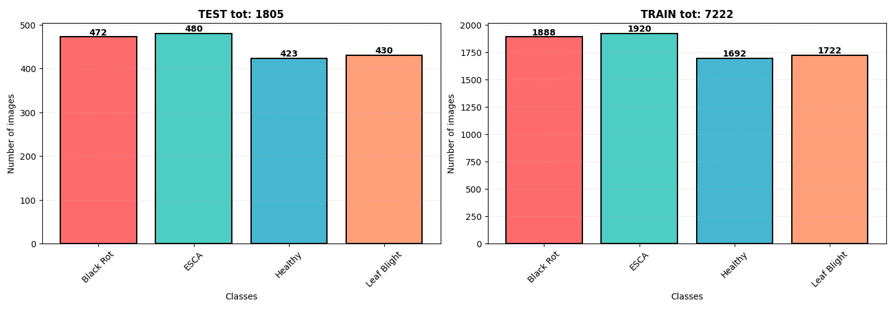
Model Architecture and Selection
The selection of MobileNetV2 as the base architecture was driven by a comprehensive evaluation framework that considered three critical factors: accuracy, model size, and computational efficiency. We established a scoring system to quantify these factors, defined by the formula:
\[ Score = \frac{Accuracy}{Size \cdot CPU\ Time} \]
This formula allowed us to objectively compare multiple candidate architectures and identify MobileNetV2 as the optimal choice for our application requirements. We modified the standard architecture by adding two hidden dense layers with ReLU activation to enhance feature extraction capabilities for specific disease patterns. The final architecture parameters include a total of 7,121,542 parameters, with 2,362,476 trainable parameters, resulting in a model size of 27.17 MB before optimization.
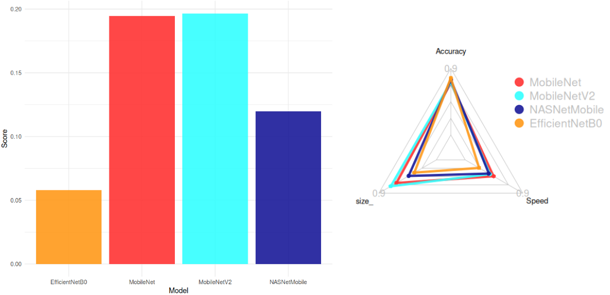
The proposed architecture is built upon MobileNetV2, a
state-of-the-art lightweight CNN architecture known for its efficiency
in mobile applications. The implementation involves a
Sequential model where the base MobileNetV2 is loaded with
include_top=False and pre-trained ImageNet weights. This is
followed by a GlobalAveragePooling2D layer, two
Dense layers with 100 neurons each and ReLU activation, and
a final Dense layer with a softmax activation for the
four-class classification.
model = Sequential()
model.add(tf.keras.applications.MobileNetV2(input_shape=(IMG_HEIGHT, IMG_WIDTH, CHANNELS),
include_top=False,
weights='imagenet'))
model.add(tf.keras.layers.GlobalAveragePooling2D())
model.add(tf.keras.layers.Dense(100, activation='relu'))
model.add(tf.keras.layers.Dense(100, activation='relu'))
model.add(tf.keras.layers.Dense(NUM_CLASSES, activation='softmax'))Training Procedure and Results
The model was trained using a batch size of 32 and the Adam optimizer with a default learning rate. Training was conducted for 100 epochs with an early stopping mechanism that triggers if the validation loss does not improve by a threshold of 0.2 over a patience of 10 epochs. The loss function used was Sparse Categorical Crossentropy, and accuracy was the primary evaluation metric.
The experimental results demonstrate exceptional model performance, achieving a validation accuracy of approximately 99.9%. The quantitative results, detailed in the table below, highlight the model’s precision, recall, and F1-scores across the different classes.
| Class | Precision | Recall | F1-score |
|---|---|---|---|
| Healthy | 24.4% | 52.5% | 33.3% |
| Black Rot | 21.4% | 0.6% | 1.2% |
| ESCA | 27.7% | 44.2% | 34.1% |
| Leaf Blight | 25.6% | 7.0% | 10.1% |
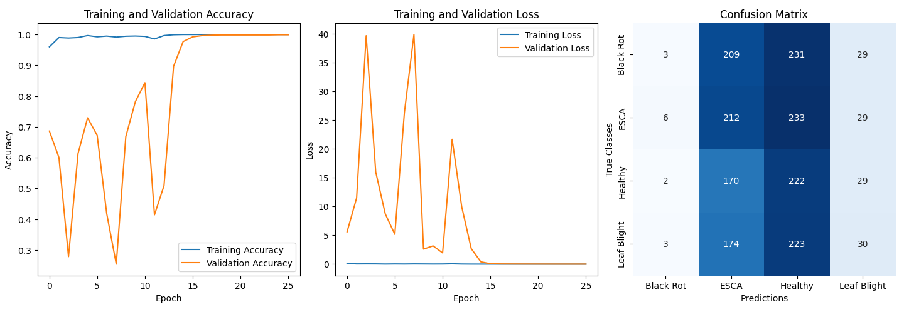
Qualitative Analysis and Discussion
The model’s predictions were visualized to understand its decision-making process, revealing interesting insights into feature extraction patterns. For ESCA, the model primarily focused on specific leaf texture patterns and necrotic lesions. For Black Rot, it relied more on color changes, specifically darkening, rather than spot patterns alone. This suggests that the model is learning disease-specific visual markers rather than relying solely on generic symptomatic features.
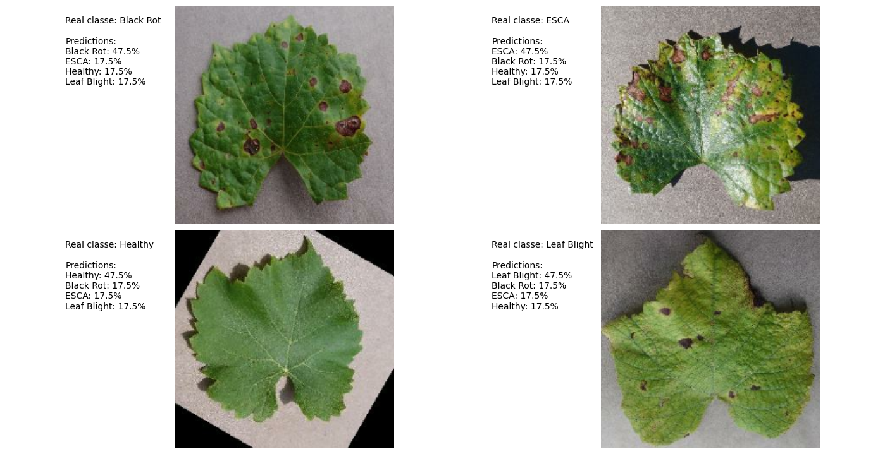
Interestingly, the attribution masks reveal that the model’s attention is highly localized to the affected areas of the leaf.
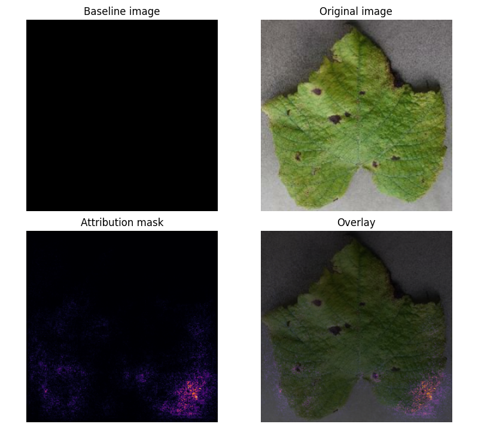
Our findings indicate that MobileNetV2 provides an optimal balance between accuracy and computational efficiency for grapevine disease detection. However, several limitations warrant attention. The model exhibits a bias toward certain features, which may limit its generalizability across different varieties or growing conditions. The absence of extensive data augmentation may affect robustness to varying lighting conditions, and the model has not yet been tested in real-world field environments. Future work should address these limitations through the incorporation of more diverse data augmentation techniques, testing in uncontrolled field environments, and the development of transfer learning approaches for adapting to new conditions.
VinEye: The Mobile Application
To translate the deep learning model into a practical tool for end-users, we developed VinEye, a mobile application designed for amateur viticulturists and wine enthusiasts. The application serves as the deployment vehicle for the trained MobileNetV2 model, offering a seamless user experience from image capture to diagnosis. VinEye is built using React Native with the Expo SDK 54 in bare workflow to ensure cross-platform compatibility for both iOS and Android devices. The app features a camera-based scanner for real-time disease detection, a library of grapevine varieties, a gamification system to encourage learning, and a repository of practical guides.
Technical Stack and Architecture
The application leverages a modern, modular architecture designed for performance and maintainability. The core framework is React Native, with NativeWind v4 (Tailwind CSS) used as the primary styling engine, supplemented by standard StyleSheet for specific shadows and gradients. The app uses TypeScript for strict type safety and React Navigation v7 for robust navigation flows. For icons, we utilize lucide-react-native for the bottom navigation bar and Ionicons for the rest of the interface. Animations are handled by React Native Reanimated v4 to ensure smooth transitions, while expo-camera provides the core scanning functionality.
The AI inference is handled by react-native-fast-tflite,
which allows for on-device execution of the TensorFlow Lite model. To
ensure the application remains functional in environments where native
modules are unavailable, such as Expo Go, a fallback mechanism using a
weighted JavaScript mock is implemented. Data persistence is managed via
AsyncStorage, and internationalization is handled
through i18next supporting both French and English. The
entire project is managed using pnpm as the package
manager.
The application architecture follows a clean separation of concerns,
with distinct modules for components, data, hooks, navigation, screens,
services, and utilities. The navigation structure begins with a
RootNavigator that manages the splash screen and
transitions to the Main bottom tab bar. The main tabs
include Home, Guides,
Scanner (with a prominent Floating Action Button),
Library, and a placeholder for Map.
Additional screens such as Result,
Notifications, Profile, and
Settings are accessible via stack navigation or specific
triggers, ensuring a logical flow for the user.
Core Features and User Interface
The Home screen serves as the central hub, featuring a branded header with a greeting, a search bar, and a Call-to-Action (CTA) banner for scanning. It includes a carousel of frequent diseases, a seasonal alert card, and a list of practical guides. The Scanner screen is the core feature, providing a camera view with an overlay that guides the user to frame the leaf correctly. Upon capturing an image, the app triggers the AI inference pipeline.
The Result screen displays the diagnosis, including the disease name, confidence level, and a CTA to view detailed information. If the confidence is low, the user is prompted to re-scan. The Library screen offers a grid view of all scanned plants, allowing users to track their history and mark favorites. The Profile screen showcases user statistics, XP progress, and achievements in a Bento grid layout, while the Guides screen provides detailed information on diseases and practical cultivation tips. The design system follows a “Bento Box” minimalistic philosophy, using a light blue-gray background, white cards with rounded corners, and subtle shadows to create a clean, zen-like interface.
AI Inference Pipeline and Integration
The integration of the deep learning model into the mobile app
requires a robust preprocessing and inference pipeline to ensure
accuracy and speed. When the user captures an image, the
ScannerScreen triggers the takePictureAsync
method. The captured image is then passed to the
useDetection hook, which initiates the preprocessing
sequence. The image is resized to 224×224 pixels, decoded using
jpeg-js into a Float32Array RGB matrix, and
normalized by dividing pixel values by 255.
The preprocessed data is then passed to the
react-native-fast-tflite module, which loads the
grapevine_v1.tflite model. The runSync()
function executes the inference on the device’s CPU or NPU, returning
the raw probabilities. A softmax activation is applied, and the class
with the highest probability is identified. The system then applies
confidence thresholds to determine the final result: a confidence of 70%
or higher is considered a confirmed diagnosis; between 40% and 70% is
marked as uncertain, prompting the user to re-scan; and below 40%
indicates that the image likely does not contain a vine.
A critical aspect of this integration is the handling of native
dependencies. The react-native-fast-tflite library requires
native compilation, which is not available in the standard Expo Go
environment. To ensure a smooth development and testing experience, we
implemented a fallback mechanism. If the native module
is missing, the app automatically switches to a weighted JS
mock that simulates inference results. This ensures the UI
remains functional and the user experience is not broken during
development or on unsupported devices. The model outputs four classes
(healthy, black_rot, esca,
leaf_blight), which are mapped to the app’s internal
database slugs to display the correct disease details.
Build Optimization and Deployment
The app requires a native prebuild for Android and iOS to access the
camera and TFLite modules. The build process involves running
pnpm dlx expo prebuild --clean to generate the native
Android and iOS projects. Specific challenges were encountered during
the Android build, particularly regarding CMake and Ninja path lengths.
These were resolved using a custom plugin (withCmakeFix.js)
that injects response file flags and adjusts
CMAKE_OBJECT_PATH_MAX in the
android/build.gradle to prevent build failures.
To optimize the model for mobile deployment, the original 27.17 MB
model was quantized to reduce its size to 9.4 MB. This
optimization ensures fast loading times and efficient memory usage on
mobile devices, making the application suitable for a wide range of
smartphones. The final model file, grapevine_v1.tflite, is
embedded directly into the app’s assets, ensuring that the AI
capabilities are fully available offline.
Conclusion
This paper presented VinEye, a comprehensive solution for grapevine disease detection that bridges the gap between advanced deep learning research and practical agricultural application. By leveraging the efficiency of MobileNetV2 and deploying it via a React Native mobile application, we have created a tool that is both highly accurate (~99.9%) and accessible to end-users. The project demonstrates that it is possible to achieve exceptional accuracy while maintaining practical model size and computational efficiency suitable for on-device inference.
The integration of the model into VinEye provides farmers and enthusiasts with instant diagnostic capabilities, revolutionizing disease monitoring by enabling non-destructive, real-time analysis. The application’s design, featuring gamification and a user-friendly interface, encourages widespread adoption and education among amateur growers. However, we acknowledge that the model’s performance may vary under uncontrolled field conditions, and further research is needed to validate its robustness across diverse environments.
Future work should focus on expanding the dataset with real-world images to improve robustness against lighting and background variations, conducting extensive field testing, and developing transfer learning strategies to adapt the model to new disease variants. Additionally, exploring a hybrid approach where low-confidence scans are sent to a server for re-evaluation could further enhance reliability. The success of VinEye highlights the potential of mobile AI in precision viticulture, offering a scalable path toward healthier vineyards and more sustainable agriculture.
Creation d’un jeu video à l’aide du moteur Godot
2024
Auteurs: SANCHEZ Franck, AVIZARA
Jhodi, GOUZY Yann
Résumé
Ce rapport détaille la conception et l’implémentation d’un jeu vidéo complet en 2D développé sur le moteur Godot. Le projet, réalisé par une équipe de développeurs, vise à créer un jeu de type “rogue-like” inspiré de Vampire Survivors, se déroulant dans un décor inspiré de l’Égypte ancienne en pixel art. L’objectif central est l’intégration et la démonstration du plugin La-State-Makina, un outil de machines à états finis (FSM) permettant de modéliser les comportements complexes des ennemis et la gestion des vagues. Le rapport couvre l’analyse des besoins, la conception architecturale, la réalisation technique (déplacement, combat, système d’expérience) et l’implémentation spécifique de la machine à états pour la fusion des mobs et le spawner, offrant une preuve de concept fonctionnelle et documentée.
Détails
Analyse
Contexte
Godot est un moteur de jeu multiplateforme gratuit et open source qui permet la création de jeux vidéo 2D et 3D [9]. Nous avons choisi d’utiliser ce moteur performant pour développer un jeu se déroulant dans l’Égypte ancienne. Les clients ont développés un plugin permettant de manipuler des machines à états (graphes) pour modéliser les différentes étapes du jeu. Actuellement, une visualisation sommaire de ce graphe est disponible. Pour ce projet, notre objectif est de créer un jeu complet et abouti, en intégrant l’implémentation de ce plugin pour gérer les interactions entre les différentes entités du jeu.
État de l’art des principaux moteurs de jeu sur le marché
Dans l’industrie du jeu vidéo, deux acteurs dominent une part conséquente du marché : Unity et Unreal Engine [4]. Ces outils sont utilisés non seulement dans la création de jeux vidéo, mais également dans d’autres domaines comme le cinéma (live action et animation) ainsi que la réalité virtuelle augmentée. Pendant plusieurs années, Unity a été le moteur de jeu le plus populaire, en raison de son accessibilité tant en termes de coût (Unity est gratuit jusqu’à un certain niveau de bénéfices) que de prise en main, grâce à une énorme communauté de développeurs [11]. Unity est exécutable sur MacOS et Windows, propose une API de script principale en C#, mais aussi en Boo et JavaScript. Des jeux à succès comme Cuphead, Subnautica et Pokémon Go ont été développés sur Unity. De plus, Unity prend en charge le HTML5, ce qui permet la diffusion des jeux sur diverses plateformes. Cependant, en septembre 2023, Unity a annoncé une nouvelle tarification, exigeant désormais une somme d’argent pour chaque téléchargement de jeu, ce qui a entraîné une perte de popularité pour la plateforme [10].
En concurrence directe, Unreal Engine a gagné en popularité, notamment grâce au succès de la série The Mandalorian [5], dont les effets visuels ont été réalisés sur ce moteur de jeu. Tout comme Unity, Unreal Engine s’adresse à une variété d’utilisateurs, des studios aux développeurs indépendants. Exécutable sur MacOS et Windows, le moteur est gratuit à l’installation, mais une part des recettes des jeux produits revient à la compagnie. Son langage de programmation est le C++ et Python. Bien que sa prise en main soit plus difficile que celle de Unity, Unreal Engine propose des fonctionnalités avancées telles que des pipelines de gestion des ressources, l’automatisation des flux de travail et des interfaces utilisateur personnalisées. Des jeux à succès comme Tomb Raider Underworld (2008) sur Unreal Engine 3, Borderland 3 (2019) sur Unreal Engine 4 et Mass Effect (2007) sur Unreal Engine 3 ont été créés avec ce moteur de jeu. Ce moteur se démarque par ses rendus photoréalistes, bien que cela nécessite des ressources plus importantes, limitant le nombre de ses utilisateurs [6].
En contraste avec les géants commerciaux, on trouve des moteurs libres, gratuits et sans conditions, dont Godot Game Engine est l’un des meilleurs représentants [4]. Godot est un moteur de jeu open source et facilement accessible, grâce à son langage de programmation inspiré de Python, le GDScript, et à sa communauté active. Disponible sur MacOS, Windows et Linux, Godot propose des jeux sur PC, navigateur, Android et consoles. Son éditeur s’inspire de celui de Unity, offrant des fonctionnalités similaires telles que la création d’interfaces utilisateur et la gestion des scènes. Godot 4.0 a apporté des améliorations majeures de performance, notamment grâce à un nouveau système de rendu et d’optimisation [9]. Il offre des performances accrues et une meilleure compatibilité avec les plateformes mobiles. De plus, Godot dispose d’une bibliothèque de ressources comprenant des modèles 3D, des textures et des sons, facilitant ainsi la création de jeux sans avoir à tout créer à partir de zéro.
État de l’art sur les machines à états finis (FSM)
En règle générale, les FSM sont des modèles mathématiques de calcul utilisés en programmation informatique, en logique séquentielle, dans les protocoles de communication, le contrôle de processus et bien d’autres [1]. Ces modèles sont caractérisés par le fait qu’ils peuvent avoir un grand nombre d’états possibles mais ne sont que dans un seul état à la fois, que l’on appelle “état courant”. Ces états représentent toutes les variables d’un programme et leurs valeurs à un moment donné qui attendent d’être exécutées. Le passage d’un état à l’autre est activé par un événe-ment ou une condition, on parle de “transition”. Les transitions sont un ensemble d’actions à exécuter lorsqu’une condition est remplie ou lorsqu’un événement (ou symbole d’entrée) est reçu [2]. Dans certains cas, la machine peut donner une réponse à des entrées spécifiques, on parle de symboles de sortie. Un FSM est donc défini par l’ensemble de ses états et par l’ensemble des règles qui dictent comment il passe d’un état à l’autre.
Ces modèles peuvent être classés principalement en deux catégories, les accepteurs et les transducteurs. Les accepteurs analysent la structure de la donnée fournie, et l’acceptent si elle est conforme à la spécification décrite par la machine à états. Les transducteurs au contraire traduisent une chaîne de symboles en une autre. Et dans certains cas, on peut rencontrer des variantes appelées classificateurs et séquenceurs.
Mais il existe également une classification supplémentaire, les modèles déterministes et non déterministes. Dans un FSM déterministe, chaque état possède au plus une transition pour chaque symbole d’entrée, et dans un FSM non déterministe, un symbole d’entrée peut étiqueter une, plusieurs ou aucune transition pour un état donné [13].
Finalement, dans le domaine des jeux vidéo, les FSM permettent de représenter et de contrôler le flux d’exécution. Notamment pour implémenter des intelligences artificielles et produire des comportements complexes sans avoir à utiliser un grand nombre de lignes de codes. Toujours dans ce domaine, on peut citer Playmaker sur Unity comme exemple de FSM [7]. Il est utilisé dans des jeux comme Hollow Knight, Gris ou Firewatch qui des jeux reconnus pour la qualité de leur scénario et de leur gameplay.
Bien entendu, il est impossible de ne pas présenter l’Alien du jeu Alien isolation, un jeu d’horreur se situant dans l’univers du film Alien. Le monstre éponyme poursuit le joueur tout au long du jeu et son intelligence le rend aussi terrifiant que son apparence. c’est à ce jour une des meilleures utilisation de la machine à états dans le monde du jeu vidéo, cette machine à états est très complexe avec une centaines d’états dont trente principaux ce qui permet à l’Alien d’avoir des réactions qui donne l’impression de s’adapter à celle du joueur. Il est également intéressant de noter que relativement peu de jeux utilisent des machines à état et passent alors à côté des avantages mentionnés.
Quant à Godot, il existe une machine à états gérant uniquement les animations de personnages, AnimationTree, et un plugin permettant de gérer l’animation et tous les autres aspect du jeu, StateChart, Pour ce projet, à la demande de nos clients, nous avons utilisé La-State-Makina [12], un plugin implémentant une machine à états sous la forme d’un Grafcet (Graphe Fonctionnel de Commande d’Étape de Transition), un mode de représentation et d’analyse d’automatismes [3]. Ce plugin, à l’image de Playmaker et de StateChart, permet de gérer les flux d’exécution pour générer des comportements complexes dans un jeu.
Analyse des besoins
Pour ce projet, notre objectif est de fournir un jeu 2D complet sur le thème de l’Égypte et d’y intégrer le plugin La-State-Makina sous forme de preuve de concept ou directement dans le jeu final.
Besoins fonctionnels
Le gameplay s’inspire de Vampire Survivor, où le joueur doit survivre à une vague continue d’ennemis. Le niveau du joueur augmente en fonction du nombre d’ennemis éliminés et de l’expérience ramassée. La difficulté est progressive avec l’apparition de nouveaux ennemis. Le joueur a la possibilité d’utiliser différentes attaques en fonction de l’équipement récupéré. Le jeu se déroule sur une carte infinie avec un motif répété. Nous avons jugé que ce choix était approprié car ce type de jeu offre une expérience de jeu relativement simple en termes de complexité, ce qui correspond bien à notre expérience en tant que développeurs de jeux débutants. De plus, étant donné le temps limité pour la sortie du jeu final, cette option nous semble être la plus réalisable dans les délais impartis.
Fonctionnement général du jeu
Le principe du jeu est simple, survivre à des vagues d’ennemis dans le temps, ramasser de l’expérience donnée par les ennemis en les éliminant, augmenter de niveau et choisir des améliorations d’armes et des bonus pour survivre à des hordes d’ennemis de plus en plus forts et plus nombreux par vague. Le style graphique des personnages s’inspirera d’assets libres de droits et également fournis par le client, sur le thème de l’Égypte ancienne.
Pour les niveaux du jeu, nous partons sur des vagues d’ennemis de plus en plus forts, avec des caractéristiques évolutives telles que la vitesse de déplacement, les points de vie, les dégâts infligés aux joueurs et la résistance au knockback. De plus, le nombre d’ennemis générés par vague augmente progressivement. Chaque type d’ennemi est visuellement différent et possède des statistiques définies de manière à augmenter la difficulté au fur et à mesure de la progression du joueur. Cela permet une croissance de la difficulté tout au long du jeu.
Pour chaque arme, nous avons quatre niveaux différents qui peuvent changer leurs statistiques générales telles que la vitesse d’attaque, la portée, les dégâts d’attaque ainsi que leur nombre, en plus de pouvoir modifier leur comportement. Au total, il y a trois armes différentes. Cela permet une progression significative du joueur. Pour les bonus, nous en avons six différents avec pour quatre d’entre eux quatre niveaux différents ajoutant une statistique supplémentaire à chaque fois telle que l’armure, la vitesse de déplacement, la taille des attaques et la vitesse d’attaque. Un bonus n’a que deux niveaux d’amélioration, il permet d’augmenter le nombre de toutes les attaques de un. Et un bonus sans niveau d’amélioration qui permet la régénération des points de vie du joueur.
Les effets spéciaux comprennent les déplacements du joueur et des ennemis à l’aide d’animations image par image. Les armes ont des déplacements simples directement sur un ennemi, des déplacements aléatoires depuis la direction du joueur, ainsi que des déplacements autour du joueur. Nous ajoutons des animations lors de certaines attaques des armes. La barre d’expérience et celle des points de vie du joueur sont également animées. De plus, des animations sont incluses pour l’élimination des monstres et la récolte de l’expérience au sol, ainsi que dans le menu du jeu.
Pour les musiques d’ambiance et les effets sonores, nous incluons plusieurs éléments pour enrichir l’expérience audio du joueur. Tout d’abord, des musiques sont jouées en boucle dans le menu du jeu et tout au long de la partie. Le passage de la souris sur un bouton du menu est accompagné d’un son distinctif pour indiquer une interaction possible. De plus, nous avons inclus des effets sonores pour chaque étape du combat : lorsque le joueur touche un ennemi avec une arme, lorsque l’ennemi est éliminé, ainsi que lors du ramassage de l’expérience au sol. Enfin, des sons distincts sont joués lors du passage d’un niveau et à la fin de la partie, marquant les moments importants de la progression du joueur.
Gestion des scènes et robustesse du code
Pour la gestion des différentes scènes dans le jeu, nous cherchons à en minimiser le nombre afin de simplifier la tâche de réalisation. Notre objectif est d’avoir le moins de choses possible à gérer lors du développement du jeu. En limitant le nombre de scènes, nous réduisons la complexité du projet et facilitons la maintenance du code. Cela nous permet de concentrer nos efforts sur la création de fonctionnalités et d’éléments de gameplay plutôt que sur la gestion de multiples scènes et de leurs interactions. Cela nous permet également de garantir une meilleure cohérence dans l’ensemble du jeu, en évitant les incohérences et les conflits entre les différentes parties du code.
Animations et génération des ennemis
Pour le spawn des ennemis, nous mettons en place un système de spawner d’ennemis. Ce système nous permet d’intégrer directement la scène d’un ennemi dans le spawner et ainsi de gérer tous ses paramètres d’apparition. Nous pouvons définir le moment de leur apparition, le taux d’apparition par seconde ainsi que la durée pendant laquelle ils doivent apparaître. En pratique, cela signifie que nous utilisons le même script pour chaque type d’ennemi, en ajustant simplement les animations et statistiques pour chaque ennemi. Les ennemis apparaissent aléatoirement dans une zone fixe autour du joueur, garantissant ainsi qu’ils restent près de lui peu importe ses déplacements. Cette approche nous permet de gagner du temps lors du développement et de garantir une cohérence dans le comportement des ennemis.
Pour les ennemis, nous mettons en place une animation unique qui s’ajuste en fonction de la position du personnage par rapport à l’ennemi. Quelle que soit la direction dans laquelle le joueur se déplace, l’animation de l’ennemi s’oriente pour lui faire face. Les déplacements des ennemis, qu’ils soient horizontaux ou verticaux, sont dirigés vers la position actuelle du joueur. Pour le personnage principal, nous avons également une animation unique qui se modifie en fonction de sa direction de déplacement. Que le personnage se déplace vers la gauche ou la droite, l’animation s’adapte pour refléter cette direction. Cette approche simplifie la gestion des animations pour le personnage principal, ne nécessitant qu’une seule animation qui est manipulée dynamiquement en fonction des actions du joueur. Le joueur a des animations de déplacement vertical et horizontal. Il peut se déplacer librement sur la carte. Les animations se font image par image, avec le nombre de keyframes dépendant du modèle d’animation. Les FPS sont adaptés en conséquence.
Interfaces utilisateur
Pour les différentes interfaces du jeu, nous simplifions au maximum pour offrir une expérience fluide et intuitive. Tout d’abord, le menu principal comprend simplement deux boutons : “Play” et “Quit”. Ensuite, lors du passage à un nouveau niveau, le joueur a la possibilité de choisir parmi trois améliorations qui lui sont présentées aléatoirement. Ces améliorations sont sélectionnées dans une liste comprenant toutes les armes et bonus possibles. L’interface principale du jeu est le cœur de l’action, où tous les événements se déroulent. C’est ici que le joueur contrôle son personnage, affronte les ennemis, collecte de l’expérience et progresse à travers les niveaux. Enfin, à la fin de chaque partie, une interface de fin de partie s’affiche pour indiquer si le joueur a gagné ou perdu. Cette interface présente un bouton “Quit” permettant au joueur de retourner au menu principal du jeu afin de démarrer une nouvelle partie ou quitter le jeu.
L’écran d’accueil comprend le titre du jeu, le bouton “Play” pour jouer, le bouton “Quit” pour quitter le jeu et quelques animations pour animer celui-ci. L’écran de fin de la partie affiche le mot “You win !” si le joueur à gagné la partie ou “You lose !” si le joueur à été éliminé ainsi que le bouton “Quit” pour retourner à l’écran d’accueil.
Besoins non-fonctionnels
Pendant la phase de conception, nous répartissons les différentes tâches entre les membres de l’équipe pour la création du cahier des charges. Cependant, pour l’ensemble des idées de conception du jeu, nous réfléchissons et prenons les décisions ensemble. Chaque membre de l’équipe contribue avec ses idées et ses suggestions pour façonner le jeu selon notre vision collective.
Aspects graphiques et commandes de jeu
Dans le cadre du développement du jeu, nous utilisons des animations simples et du pixel art. Nous évitons d’ajouter trop d’effets pour garantir des performances fluides et réactives, même sur des plateformes moins puissantes.
Nous offrons aussi la possibilité de modifier le mapping des touches, que ce soit sur clavier ou sur manette, pour satisfaire au mieux le confort de jeu de l’utilisateur. Cela signifie que les joueurs peuvent personnaliser les commandes selon leurs préférences, afin de trouver la configuration qui leur convient le mieux.
Nous réalisons également des interfaces simples et compréhensibles, car la facilité d’utilisation est essentielle pour garantir une expérience de jeu positive. Cela rend le jeu accessible à un large public, quel que soit son niveau d’expérience dans les jeux vidéo.
L’utilisation esthétique du pixel art est une approche visuelle rétro qui apporte un charme particulier au jeu, nous visons à créer des visuels distinctifs et attrayants tout en conservant la performance du jeu. De plus, nous utilisons des sons pour apporter du dynamisme au jeu. Les effets sonores sont soigneusement sélectionnés pour correspondre à l’action à l’écran et immerger le joueur dans le jeu. Des musiques dynamiques accompagnent les phases du jeu. L’objectif est d’ajouter une dimension supplémentaire à l’expérience du jeu, en renforçant l’engagement du joueur et en créant un environnement sonore captivant.
Le jeu comprend plusieurs armes et différents bonus obtenables à chaque niveau. Pour progresser, le joueur doit vaincre des ennemis et récupérer de l’expérience. Cette mécanique incite les joueurs à jouer davantage pour améliorer leurs compétences, découvrir de nouveaux équipements et explorer des défis plus difficiles.
Programmation
Enfin, nous mettons l’accent sur la structuration du code du jeu pour permettre une meilleure facilité de modification. En divisant le code en sections logiques et bien définies, nous facilitons la compréhension et la maintenance du jeu pour les développeurs futurs. Cette approche nous permet de réagir rapidement aux retours des joueurs, d’ajouter de nouvelles fonctionnalités et d’améliorer l’expérience de jeu de manière efficace et efficiente. En segmentant le code de manière organisée, nous nous assurons également de minimiser les risques d’erreurs et de conflits lors de l’ajout de nouvelles fonctionnalités, garantissant ainsi la stabilité et la durabilité du jeu sur le long terme.
Conception
Dans notre processus de conception du jeu, nous prendrons en compte notre niveau de compétence débutant avec Godot ainsi que le temps limité dont nous disposons pour développer le jeu. Nous chercherons donc des genres de jeux où la réalisation semble la plus simple. Après avoir passé en revue la liste des genres de jeux, nous opterons pour le genre de jeu de type rogue-like, tel que Vampire Survivor, car il offre des mécaniques de jeu simples. En optant pour un concept de jeu relativement simple mais solide comme Vampire Survivor, nous pourrons nous concentrer sur la mise en œuvre de ses mécanismes de base. Cela nous permettra également de gagner en expérience dans le développement de jeux tout en créant quelque chose de réalisable dans un délai raisonnable. Pour le concept du jeu, nous avons donc décidé de créer un jeu de type rogue-like se déroulant dans l’univers de l’Égypte ancienne. Le joueur incarnera un Égyptien solitaire qui affronte l’épreuve d’Amon, une divinité égyptienne.
Conception du jeu
Mécaniques du jeu
Les principales mécaniques de jeu comprendront des combats en temps réel et un aspect d’exploration. Le joueur devra survivre à des vagues d’ennemis tout en évoluant et en choisissant des armes et des améliorations. Nous ajouterons différentes armes avec différents types d’attaques. Pour les bonus, nous aurons également différents types de bonus qui affectent le personnage ainsi que ses armes. En ce qui concerne les ennemis, nous aurons des ennemis différents en termes de visuel et au niveau des statistiques (dégâts des attaques, points de vie, etc.). Pour l’évolution du personnage, il pourra ramasser de l’expérience qui sera donnée par les ennemis en les éliminant. Nous concevrons les niveaux pour offrir une difficulté progressive, avec des ennemis diversifiés, allant de l’ennemi simple et faible à des adversaires plus imposants et résistants.
Graphismes et effets sonores
Pour l’artwork et les graphismes, nous opterons pour un style visuel pixel art, donnant au jeu un aspect rétro et distinctif. Les animations seront simples mais efficaces, permettant une jouabilité fluide sur différentes plateformes. L’interface utilisateur sera conçue pour être simple et intuitive, avec des menus faciles à naviguer et des instructions claires pour guider le joueur tout au long de la jeu. Nous inclurons également des options de personnalisation des touches pour répondre aux préférences individuelles des joueurs. En ce qui concerne le son et la musique, nous sélectionnerons des effets sonores et des musiques adaptés à l’ambiance du jeu. Les effets sonores renforceront l’immersion du joueur, tandis que la musique dynamique accompagnera les moments d’action et d’intensité.
Phases de test et correction de bugs
Pour les tests et les itérations, nous effectuerons des tests réguliers, y compris des tests auprès de personnes qui ne jouent pas aux jeux vidéo en règle générale, en plus de nos propres tests. Ces tests nous permettront d’identifier et de corriger les bugs, ainsi que de recueillir les commentaires des joueurs. Ces retours nous aideront à ajuster et à améliorer le jeu tout au long du processus de développement.
Architecture du code
Enfin, la structuration du code sera une priorité pour permettre une meilleure facilité de modification. En divisant le code en sections logiques et bien définies, nous faciliterons la compréhension et la maintenance du jeu pour les développeurs futurs. Cela nous permettra de réagir rapidement aux retours des joueurs, d’ajouter de nouvelles fonctionnalités et d’améliorer l’expérience de jeu de manière efficace et efficiente. En segmentant le code de manière organisée, nous nous assurerons également de minimiser les risques d’erreurs et de conflits lors de l’ajout de nouvelles fonctionnalités, garantissant ainsi la stabilité et la durabilité du jeu sur le long terme.
La scène principale, appelée World, agira comme la racine de l’arbre du jeu dans notre architecture. En tant que scène principale, World contiendra toutes les entités principales du jeu et coordonnera leur fonctionnement. Elle gérera également les événements du jeu, tels que les collisions entre les entités, les transitions de niveau et les conditions de victoire ou de défaite. Cette scène sera cruciale pour le développement du jeu, car elle servira de point de départ pour l’implémentation des mécaniques de jeu et la mise en place de l’environnement de jeu. Ce sera à partir de cette scène que le joueur entrera dans l’univers du jeu et commencera à interagir avec ses éléments.
Le nœud racine Player contiendra plusieurs sous-nœuds pour gérer différentes fonctionnalités du joueur dans le jeu : les nœuds Sprite2D et Animation seront responsables de l’apparence visuelle du joueur et de ses animations de déplacement. Le nœud Sprite2D contiendra le sprite représentant le joueur et le nœud Animation les animations associées comme la marche. Le sous-nœud Attack gérera les mécanismes d’attaque du joueur. Il s’occupera de détecter les ennemis dans la zone d’attaque du joueur et d’appliquer les dégâts correspondants ainsi que les différents types d’attaques de celui-ci. Le sous-nœud Hurt Box représentera la zone de collision du joueur avec les ennemis et les obstacles. Il détectera les collisions et appliquera les effets correspondants, comme la réduction des points de vie du joueur lors de contact avec un ennemi.
La structure du nœud Player sera conçue pour encapsuler toutes les fonctionnalités liées au joueur de manière organisée. Chaque sous-nœud aura un rôle spécifique dans le fonctionnement du joueur et permettra une gestion de ses interactions avec l’environnement du jeu.
Pour le nœud Enemy Spawner cela sera différent, il permettra l’apparition des ennemis dans la scène principale World. Contrairement aux entités individuelles comme le joueur, le nœud Enemy Spawner instanciera dynamiquement les ennemis et gérera leur création dans le jeu. Voici comment il fonctionnera : Le Enemy Spawner sera chargé d’instancier les ennemis dans la scène principale. À chaque fois qu’un nouvel ennemi doit apparaître, le spawner créera une nouvelle instance de la scène de l’ennemi (enemy.tscn). Chaque ennemi sera représenté par sa propre scène, contenant tous les éléments nécessaires à son fonctionnement. Cette scène comprendra notamment : Les sous-nœuds Sprite2D et Animation pour afficher l’ennemi dans le jeu et gérer ses animations. Le sous-nœud Hurt Box pour détecter les collisions avec les attaques du joueur et le sous-nœud Hit Box pour détecter les collisions avec le joueur.
Une fois qu’une instance d’ennemi est créée, le nœud Enemy Spawner l’ajoutera à la scène principale en tant que sous-nœud. Chaque ennemi sera donc géré individuellement et pourra être instancié plusieurs fois simplifiant ainsi la conception des vagues d’ennemis dans le temps.
Pour implémenter les dégâts dans le jeu, nous utiliserons des Hit Box et des Hurt Box. Le principe est le suivant : lorsque les Collision shape du nœud HurtBox et du nœud HitBox entrent en contact, le signal _on_hurt_box_hurt() est émis depuis le script hurt_box.gd. Ce signal est capturé dans le script player.gd ou enemy.gd, suivant si c’est le joueur ou l’ennemi qui est touché. En conséquence le personnage perd un ou plusieurs points de vie en fonction des statistiques de l’objet ou de l’ennemi responsable des dégâts. De plus, le script hit_box.gd sera équipé d’un Timer. Ce Timer permettra de faire perdre des dégâts par seconde tant que les deux Collision shape seront en contact. Cela garantit que même après une première collision, si les entités restent en contact, des dégâts continueront d’être infligés.
La-State-Makina
Dans notre jeu, nous utilisons le plugin La-State-Makina en version 0.1, développé par tomateauketchup. Nous avons décidé de développer une preuve concept avant de l’intégrer au jeu principal. Dans cette preuve de concept le plugin La-State-Makina permettra de faire apparaître et de contrôler le comportement de certains ennemis (mobs), le développement de ces mobs passent dans un premier temps par une preuve de concept. On crée un jeu simpliste pour tester l’implémentation de La-State-Makina et une fois celle-ci fonctionnelle, le mob est ajouté au jeu principal.
L’implémentation de La-State-Makina se fait en quatre étapes clés. Premièrement, la création d’un fichier avec l’extension .json qui va comprendre les états avec leurs fonctions à l’activation et les fonctions qui vont être activées à chaque mise à jour. Il comprend aussi les événements responsables de la transition d’un état vers l’autre et enfin les transitions. Ensuite à partir de ce fichier et grâce au plugin intégré au moteur on va pouvoir générer deux nouveaux fichiers, la scène avec l’extension .tscn et l’api. La troisième consiste à copier l’api pour créer un fichier d’implémentation, c’est dans ce fichier que l’on va pouvoir rédiger nos fonctions en appelant les variables présentes dans Godot. La dernière étape quant à elle consiste à configurer les scripts d’extension .gd utilisés pour qu’ils puissent lire le fichier d’implémentation. Une fois toutes ces étapes réalisées La-State-Makina est désormais fonctionnelle.
Ainsi nous avons deux utilisations de La-State-Makina, la première est un mob intégrant La-State-Makina nommé Spirit et la seconde est un spawner dépendant de La-State-Makina pour faire apparaître les mobs dans l’ordre souhaité. Le concept du mob est de se rassembler avec d’autres mobs du même types pour devenir un nouveau mob plus gros qui peut lui même devenir un mob encore plus gros dans le même principe de fusion. Le premier mob utilise une machine à états puis le second et le dernier mob partage la même machine à états, les structures restent cependant similaires. L’idée de faire une machine à états pour les trois mobs a été abordée mais n’a pas été retenue. Enfin la machine à états du spawner est très simple mais offre énormément d’opportunité.
Réalisation et résultats
Le jeu
Génération de la scène principale et de la carte du jeu
Pour générer la scène principale nous allons donc dans un tout premier temps créer le nœud racine qui sera l’endroit ou toutes les interactions du jeu se feront. Pour cela nous choisissons l’onglet 2D Scene que l’on renommera par World dans le menu édition de Godot (voir annexe[4.1] et [4.2]). Ensuite pour y ajouter l’arrière plan de la scène principale du jeu nous allons ajouter au nœud racine World un nœud Sprite2D que l’on renommera Background. Dans les paramètres de ce nœud nous pouvons y ajouter une image (texture) en allant en haut à droite dans l’éditeur Godot dans “Inspector” -> “Sprite2D” (voir annexe[4.3]). Une fois l’image générée on se rend compte qu’elle ne sera pas assez grande pour couvrir une large zone de déplacement pour le joueur. Pour ajuster cela, dans le même onglet de paramètre du Sprite2D nous allons dans “Region” et cochons la case “Enabled”. Cela va nous permettre de générer une région pour laquelle nous allons répéter en boucle notre image afin de couvrir une zone aussi grande que possible. Pour cela nous modifions la taille de la région choisie dans “Edit Region” et nous avons donc une zone élargie mais cependant elle n’est pas encore répétée (voir annexe[4.4]). Pour ensuite répéter notre image proprement dans la zone élargie nous allons, toujours dans le même onglet, dans “Texture” -> “Repeat” et nous choisissons le paramètre “Enabled”. Nous obtenons donc un arrière plan de scène avec autant de répétition de notre image que possible remplissant la zone finale agrandit (voir annexe[4.5]). Il ne nous reste plus qu’à modifier la taille de la zone voulue et tout s’ajustera automatiquement par la suite. Il est également possible de changer la taille de la zone en écrivant directement la taille de chaque côté dans les paramètres.
Déplacement du joueur et des ennemis
Pour permettre au joueur de contrôler le personnage, nous utilisons l’outil Input Map intégré à Godot. Cet outil est simple d’utilisation et permet la configuration des touches de déplacement. Pour accéder à l’Input Map, nous allons dans le menu en haut à gauche de l’éditeur dans “Project” -> “Project Settings” -> “Input Map”.
Dans l’outil, nous créons des actions pour chaque type de déplacement que nous voulons. Nous avons des actions comme “up”, “down”, “left”, “right” et “click”. Une fois les actions créées, nous leur attribuons des touches en cliquant sur la case vide à côté de chaque action, puis en appuyant sur la touche souhaitée. Par exemple, pour la touche de déplacement vers la gauche, nous sélectionnons l’action “left” et lui attribuons la touche “A” (Touche généralement utilisée dans les jeux vidéos pour faire des déplacements vers la gauche) (voir annexe[4.6]).
Ensuite nous allons créer un script rattaché à la scène player.tscn
et qui sera nommé player.gd. Dans ce script nous allons utiliser les
fonctions _physics_process(_delta) et
movement(). La fonction
_physics_process(_delta) est appelée à chaque frame. Dans
cette fonction, nous appelons la fonction movement() pour
gérer le mouvement du joueur. Celle-ci va utiliser
Input.get_action_strength() pour obtenir la force de chaque
touche de déplacement : Pour les touches de déplacement horizontal
(“left” et “right”), elle soustrait la force de la touche de gauche à
celle de la touche de droite et pour les touches de déplacement vertical
(“up” et “down”), elle soustrait la force de la touche du haut à celle
de la touche du bas. Enfin on va créer un vecteur de déplacement mov en
utilisant les coordonnées des forces obtenues. Ce vecteur sera utilisé
pour déplacer le joueur dans la direction appropriée. Et la fonction
move_and_slide() va permettre l’application du mouvement
final sur le nœud Player. La variable movement_speed est
quant à elle définit au tout début avec une valeur par défaut que nous
avons choisie.
1 """ Resume des fonctions de deplacement du joueur """
2 func _physics_process(_delta):
3 movement ()
4
5 func movement ():
6 var x_move = Input.get_action_strength("right") - Input.get_action_strength("left")
7 var y_move = Input.get_action_strength("down") - Input.get_action_strength("up")
8 var mov = Vector2(x_move ,y_move)
9 velocity = mov.normalized ()*movement_speed
10 move_and_slide ()Pour permettre à l’ennemi de poursuivre le joueur, nous allons
récupérer la position actuelle du joueur à chaque mise à jour et
déplacer l’ennemi en continu vers cette position. Pour cela nous avons
d’abord ajouté le nœud Player dans un groupe nommé “player”. Pour faire
cela, en haut à droite de l’interface Godot et en étant sur la scène
player.tscn, on clique sur “Node” -> “Groups” et on crée le groupe
“player” (voir annexe[4.7]). On a créé ensuite une nouvelle scène
appelée enemy.tscn. On récupère le nœud Player de la scène player.tscn
par le biais du groupe “player” avec les fonctions
get_tree() et get_first_node_in_group()
intégrées à Godot.
1 """ Recuperation du premier noeud du groupe "player" """
2 @onready var player = get_tree ().get_first_node_in_group("player")Comme pour le joueur, la fonction
_physics_process(_delta) est appelée à chaque frame. Elle
va créer une nouvelle variable direction à chaque fois en utilisant la
fonction direction_to(player.global_position) qui va
permettre de faire le déplacement de la position actuelle de l’ennemi
sur la position actuelle du joueur au même temps donné. Il ne reste plus
qu’à utiliser la fonction move_and_slide() affin
d’appliquer le mouvement sur le nœud Enemy.
Animation des déplacements
Pour le joueur et l’ennemi, nous avons ajouté un nœud AnimationPlayer2D. C’est un nœud déjà intégré à Godot et qui permet de gérer les animations des nœuds Sprite2D. Les frames de chaque animation ont été importées en tant que sprites individuels (sprite sheet) (voir annexe[4.8]). Chaque sprite représente une étape spécifique ordonnée dans l’animation de déplacement, comme une marche ou une course. Dans ce nœud un outil est directement présent pour sélectionner les frames auxquelles nous voulons faire les changements de sprite à un temps donné (voir annexe[4.9]). Ensuite il suffit simplement d’ordonner chronologiquement les sprites de l’animation pour y créer l’effet de déplacement. Une fois l’animation de prête, il faut la récupérer ainsi que le nœud Sprite2D qui va permettre l’affichage de cette animation dans le jeu. Pour le joueur nous avons deux Sprite2D différents, un pour les déplacements à gauche et un pour les déplacements à droite et donc deux animations différentes “move_gauche” et “move_droite”. Il suffit donc de récupérer les 3 nœuds dans le script.
1 """ Recuperation des noeuds dans des variables """
2 @onready var sprite = $Sprite2D
3 @onready var sprite2 = $Sprite2D3
4 @onready var playermove = $playermoveEnsuite il suffit de vérifier à chaque instant de
movement() la position vers laquelle le joueur se dirige
pour savoir quel Sprite2D et quelle animation jouer. Si le déplacement
en x du joueur est supérieur à 0 alors on va jouer l’animation
“move_droite” et si elle est inférieur à 0 alors on va jouer l’animation
“move_gauche” et de même que l’on va afficher ou non le Sprite2D du
déplacement vers la gauche ou la droite (voir annexe[4.10]). Pour
l’affichage des nœuds nous allons alors utiliser la fonction déjà
intégrée dans Godot qui est .visible auxquels cas nous
mettrons false pour rendre le Sprite2D non visible et
true pour le rendre visible. La fonction
.play() est elle utilisée pour lancer l’animation
correspondante depuis le nœud d’animation et la fonction
.stop() pour stopper celle-ci lorsque le joueur ne se
déplace plus.
1 """ Affichage et animation des deplacements pour le joueur """
2 if mov.x > 0:
3 playermove.play("move_droite")
4 sprite.visible = false
5 sprite2.visible = true
6
7 if mov.x < 0:
8 playermove.play("move_gauche")
9 sprite.visible = true
10 sprite2.visible = false
11
12 if mov == Vector2.ZERO:
13 playermove.stop()Pour les déplacements de ennemis c’est à peu près le même principe
sauf qu’ici nous n’avons utilisé qu’un seul Sprite2D pour lequel nous
avons fais une rotation horizontale droite au gauche suivant la position
du joueur. Pour l’animation du déplacement nous avons utilisé exactement
la même méthode. Ensuite pour effectuer la rotation de l’ennemi afin
qu’il lui fasse tout le temps face au joueur nous utilisons la fonction
.flip_h avec true ou false comme
paramètre pour effectuer la rotation ou non de l’ennemi et cela en
fonction des positions en x de celui-ci et avec les mêmes conditions que
pour le joueur.
1 """ Affichage et animation des deplacements pour l'ennemi """
2 if direction.x > 0:
3 sprite.flip_h = true
4 elif direction.x < 0:
5 sprite.flip_h = falseCela permettra donc de faire en sorte que quelle que soit la position de l’ennemi avec le joueur il lui fasse toujours face. Nous avons à ce stade de la réalisation un joueur capable de se déplacer librement dans la scène principale et des ennemis capables de le suivre en lui faisant tout le temps face.
Système de perte de points de vie (Hurt Box et Hit Box)
Pour rappel, la Hit Box est la zone qui va induire
les dégâts et la Hurt Box est la zone qui va indiquer
qu’il faut prendre des dégâts. Pour les deux la scène va être identique,
elle sera composée d’un nœud racine Area2D et avec comme enfants un nœud
CollisionShape2D et un nœud Timer (voir annexe[4.11]). Pour la scène
hurt_box.tscn, nous avons créé un nouveau script et nous avons tout
d’abord récupérer les nœuds CollisionShape2D et Timer dans des variables
et nous avons défini le style futur de la Hurt Box avec
@export_enum("Cooldown","HitOnce","DisableHit Box"). Nous
avons également créé un signal hurt(damage) qui nous
servira pour plus tard.
1 """ Initialisation des variables de la Hurt Box """
2 @export_enum("Cooldown","HitOnce","DisableHitBox") var HurtBoxType = 0
3 @onready var collision = $CollisionShape2D
4 @onready var disableTimer = $DisableTimer
5
6 signal hurt(damage)Ensuite nous allons créer un signal interne dans le script de la
scène hurt_box.tscn, ce signal va donner la fonction
_on_area_entered(area) qui sera activée à chaque fois
qu’une CollisionShape2D entrera en contact avec celle de la Hit Box.
Pour créer les signaux internes, il faut aller dans le même endroit que
pour la créations des groupes de scène mais cette fois-ci dans la
section “Signals” -> “Area2D” pour y trouver la fonction. (voir
annexe[4.12]). Il suffit ensuite de double cliquer sur cette fonction et
de la connecter au nœud racine HurtBox de la scène hurt_box.tscn (voir
annexe[4.13]). Une fois le signal connecté nous pouvons maintenant
passer à son implémentation. Tout d’abord nous allons ajouter la scène
hit_box.tscn dans un groupe nommé “attack” exactement de la même manière
que nous l’avons fait pour la scène player.tscn. Cela nous permet
ensuite dans la fonction de vérifier que la zone qui est entrée en
contact avec la Hurt Box est bien celle de la Hit Box avec une autre
fonction déjà intégrée dans Godot qui est
.is_in_groupe("attack") avec “attack” placé en paramètre de
celle-ci. On vérifie ensuite si la zone qui vient d’entrer et contact
possède des dégâts avec if not area.get("damage") == null,
cela permettra d’éviter les éventuels bugs lors de l’utilisation de la
fonction. Ensuite nous allons matcher le HurtBoxType sur le premier
élément (le 0 après match) qui est “Cooldown”. Cette partie va permettre
de désactiver la CollisionShape2D à l’aide du Timer lors du premier
contact avec celle de la Hit Box. Ensuite nous créons un nouveau signal
dans le script avec le Timer afin de réinitialiser la CollisionShape2D.
Ce signal est _on_disable_timer_timeout() et va être
déclenché à la fin du premier Timer induit par le premier contact des
deux zones. Pour le
ToDo: Donner tous les projets persos que j’ai pu mener à coté de mes études.